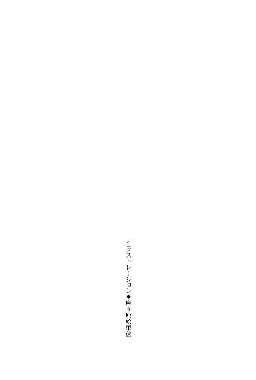

| 三千世界の鴉を殺し(11) (ウィングス・ノヴェル) | |
| 津守時生 | |

１
カーマイン都市警察機動保安部部長スノーリ・ウンセットの印象を一言で説明するとしたら、十人中全員が〝巨漢〟と言うだろう。
身長は百九十センチ、現在の体重は百五十キロ。手足が太く胸板は厚い。ついでに言えば声も目も鼻も態度も大きかった。
太いもみあげが特徴的なアッシュブロンドは、早くも半ば近く白髪に変わっているが、ほとんど目立たない。
若い頃は人間装甲車とあだ名されたほど大柄な肉体を生かした突進力で、数多くの犯罪者をなぎ倒し逮捕してきた。
都市警察は彼が管理職になってから、ますます深刻な犯罪地帯化する流民街の主な犯罪組織と、事実上の戦争状態に突入している。
彼は多くの部下たちに信頼され、上司の本部長や警察庁長官から押しつけられる無理難題もうまく乗り切ってきた。
だが、機動保安部は常に捜査中の事件を数多くかかえている。入れ替わり報告にくる部下たちに指示を出し、時には各課にまたがる事件の陣頭指揮もとる彼の神経は休まる暇がない。
体力は今でも自信がある。ただ何日も本部に泊まり込んで寝不足が続くと、長く起きているぶんだけ腹も減るし、運動不足とストレスも加わってどうしても太ってしまう。刑事時代の体重との差三十キロが胴回り、主に腹についた脂肪なのは一目瞭然。
それでも強硬突入する装甲車の破壊力は健在だった。
部下の電脳課刑事ツインメーア・デ・エラ・レッドの病室をほかの電脳刑事二名とともに見舞った彼の機嫌は、軍病院に到着する以前から最悪一歩手前のレベルになっている。
怒れる装甲車の院内暴走を危惧したレッドを含む部下たちがいかにとりなそうとも、機嫌は一向に改善しなかった。
現在外科に入院中の部下一名だけでは飽き足らず、電脳課一同が大切にし健康を気遣ってきた水麗人まで病院送りにした××野郎を張り倒さずにおくものか、という怒りのオーラを巨軀から立ち上らせている。
レッドの主治医が辛辣な口調でなにかを言ったが、付添いの部下二名を恐縮させただけで、肝心のウンセット部長の耳は素通りしていた。
入出許可を求めるブザーが鳴り、応答した内科主任カジャ・ニザリが廊下にいる相手に注意を促す。
「ウンセット部長に気をつけて入れ」
その言葉が終わらないうちに部長の突進は始まっていた。
即座に部下の電脳刑事が両腕に取りすがるも、到底その勢いを減じることは出来ない。
「やめてくれよ、親父さんっ」
「病院で暴れちゃダメだったらぁ～っ！」
右腕に若者、左腕にポニーテールの少女をぶら下げたまま、人間装甲車は入室してきた長身の士官に向かって突進していった。
「こンの××××野郎がぁーっっっ！」
両腕に付属物がぶら下がっているため拳は使えない。とりあえず体当たりでドアの脇の壁に突き飛ばし、膝蹴りを見舞ってやる。
わずかな時間でそう計算した彼の怒りに燃える視線を、澄んだ黒い双眸が受け止めた。
この世ならぬ美貌――。
理想の美を追求する芸術の世界にはまったく緑のない男でも、存在しないからこその理想だということくらいわかる。
だが、数多の芸術家たちがおのれの手で描き出そうと願い続けながら果たせずに終わったものが、生きた男の形をとって眼前に立っていた。
「――――」
薄くもなく厚過ぎもしない唇が動くさまを陶然として見つめる。
これが妖艶な曲線を描く女の赤い唇だったら、死ねと命じられても自分は嬉々として従っただろう。
なによりも魅せられるのは黒い双眸だった。見つめていると魂を吸い込まれそうな深い色の奥に黄金の環が燃えている。
闇に燃え立つ金環が、ふたつの深淵をのぞき込むものの視線を捕らえて離さない。
「――――」
白皙の額に乱れかかる前髪の下で、髪と同じ色の眉が軽く寄せられる。どのように表情が変化しようと、端麗な面立ちの神秘的な輝きを損うことはなかった。
片手を目の前で振られる。
頭のすみで邪魔だと思ったが、どうすればその手をのけられるのか考えることすら出来ない。
そう、なにも。目の前に在るこの上もなく美しい形に心を奪われて――。
その邪魔な手が金環蝕を宿す漆黒の双眸を覆い隠す。
「親父！ 二、三発ブン殴られる覚悟できたんだぞ。せめてわびの言葉くらいちゃんと聞いてくれたっていいじゃねえか」
すぐ近くから低い声で苦情を言われ、スノーリ・ウンセットは我に返った。
目の前に自分より少し長身だが、胴回りは半分以下と思われる士官が立っている。
この男を殴るはずが、おのれらしくもなく素顔に見惚れてふぬけていたと知り、ウンセット部長は耳まで赤くなった。
――この俺が......野郎の顔なんぞを恍惚と眺めていたっていうのか......っ！
前回会った時にも、滅多にないほどハンサムな兄ちゃんだとは思ったものの、目の見えないスクリーン・グラスをしていたので、我を忘れて見惚れる醜態はさらしていない。
第一印象は最悪だった。
人並み以上に顔が良いのを鼻にかけ、スカした色眼鏡で顔を隠して相手の気を引く嫌な野郎だと思った。
ところが言葉をかわしてみたら、気取ったところなどカケラもない砕けた男なのが逆に意外で、だからこそ顔のことで騒がれるのをきらって色眼鏡を必要としたのだろうと見当をつけ、勝手に納得していた。
まさかそれが実用だったとは。
部長がうなり声を上げたのを勘違いし、左腕にしがみついた少女があわてて上司の腕をかかえ直す。
「絶対ダメッ！ 部長の力で殴ったら顔の骨が折れちゃうもんっ。こんなキレイなひとの顔を壊したら人類全部を敵に回す犯罪よ！ 都市警察の部長が犯罪犯したらダメッ」
ねじれた理屈を言い立て必死で止める。
部長の両腕にぶら下がっていた若いふたりも上司同様、人間離れした男の美貌に我を忘れて見入っていた。少女なだけあって、異性に見惚れても恥だなどとは思わない。
黒髪の士官は片手で顔の上半分を覆ったまま笑う。
「ありがとう、お嬢さん。だが、俺がいるのは軍隊なんだぜ。二、三発の鉄拳制裁で壊れる程度の顔なら、とっくに別人に自然整形されているよ」
「へえ～。丈夫なツラでなによりじゃん。ならせっかくだからお言葉に甘えてサ、遠慮なくブン殴っちまえばぁ～？」
ああ、笑い声まで美形～と少女がうっとりしている反対側で、短い毛を逆立ててセットした若者が軽薄な口調で言った。半分面白がっているような言い方だが、鋭い目つきには反感と怒りがある。
その背後から冷ややかな声がかけられた。
「貴様ら、ここが病室だということがわかっていないようだな。暴力沙汰を起こしたら、即座に衛生兵を呼んで全員病院内から強制退去させるぞ」
外見の若さにかかわらず、内科主任の恫喝は自分の管理下にいるものたちを従わせずにはおかない迫力を持っていた。
思いがけないものを目にして怒気をそがれたウンセット部長は、とりあえずドクター・ニザリの注意に従う。
「おい、このへタレ軍のクソ野郎。その小綺麗なツラをこっちに向けるんじゃねえぞ。今度くだらない目くらましをしやがったら、自然に整形できるだけの一発をお見舞してやるからな」
「別にわざとスクリーン・グラスを外してきたんじゃねえよ。壊れたばかりで、替えの持ち合わせがなかったんだ」
「うるさい。貴様みたいな常識外れのツラは社会の迷惑と言うんだ。今度会った時にもさらしていたら取り締まってやる」
「あなたの美しさは、もはや罪～」
部長の理不尽な言葉に本人よりカジャのほうが反駁しかけたが、すっかり宇宙軍士官の美貌に魅せられた少女の歌うような合いの手を聞き、吹き出す。
果たして中身を知っても同じセリフが言えるだろうか。この容姿ではある意味、性格のほうが罪かもしれない。
本人まで笑っていた。
ウンセット部長も苦笑いしながらその場を離れ、水麗人のベッドへと足を向ける。
「まあいい。そんなことより、俺のほうもおまえに話がある。――この前会った時にガーディアンの協力が欲しいと吐かしただろう」
「ああ。能率が格段に違うからな」
「今日からレッドに加えて、この場にいるピンクとブルーも貸してやる。ありがたく思え。そのかわり二度と都市警察の捜査の邪魔をするな」
「ちょっと待てよ、親父。どうしていきなり、そんなことになる。三人もガーディアンが抜けて、都市警察の仕事はどうするんだ？」
ルシファードのもっともな質問に答えようと振り返りかけた部長は、相手が手で顔を隠していないのに気づき、あわてて視線を床に落とす。
「本部の電脳課は現在閉鎖中だ。ガーディアン・ホワイトは意識不明の重体、ゴールドも重傷を負って警察病院に入院している。ホワイトの移動が可能な状態になり次第、ふたりをここに転院させてもらえるよう、これからドクター・アラムートに直接頼むつもりだ」
「なにがあったんだ」
「本日十三時二十分、都市警察本部の三階に仕掛けられていた爆発物が爆発し四人が即死、三人が重軽傷を負った。その真上に位置する電脳課のコンピュータ・ルームも被害を受けた。ふたりは勤務中だった」
ルシファードの表情は動かなかった。ただ静かに問い返す。
「電脳課が狙われたわけではなく？」
「いや、狙われたのは三階の捜査二課だ。爆発直後に総務課へメールで犯行声明を送ってきやがった。以前にカーマイン市のメイン・ストリートで、二課の追跡を振り切ろうとした指名手配犯の改造リニアカーが、手動操縦を誤ってバスに突っ込んだ事件があってな。その野郎は流民街に巣喰うマフィアの一派で結束が固いことで知られる連中の構成員だった。即死したそいつの報復なんだとよ。野郎が突っ込んだバスじゃ十八人も死んでいるってのに」
「その事件のニュースは見た。通勤時間帯に深追いした都市警察を非難する論調もあったが、八つ当たり以外のなにものでもねえな」
黒髪の士官が到着する前、ウンセット部長は都市警察本部ビル爆破事件のことを部下のレッドに話した。
それを一緒に聞いていたカジャが、ルシファードの言葉につけ加える。
「事故に巻き込まれた乗客はうちの病院に搬送されてきたんだ。多数の負傷者の治療に追われただけでなく、患者の家族やマスコミも大勢押しかけて、あの日は内科も外科も戦場だったぞ。サラの話では外科で手術を受けた重傷者のうち、快方に向かったものは自宅に近いイエロー・タウンの民間病院に転院したそうだが、まだ外科に入院中のものもいる。術後の経過のいい患者からリハビリを始めているはずだ」
「本当に狙われたのは三階なのか？」
ルシファードがつぶやく。
部長は顔を上げかけて相手の美貌の威力を思い出し、また目を伏せた。
「爆発したのは三階だと言っただろう。結果的には電脳課も機能停止状態だが、現実に捜査二課の被害は甚大なんだぞ」
「本当にそう思うなら、なぜ親父は大混乱の現場の指揮もとらず、無傷のガーディアンふたりを連れてここにきた？」
「......可能性だ。レッドと貴様が狙撃された昨日の今日だからな。電脳課の仕事は基本的にコンピュータさえあればどこでもできる。だが、もし狙いが捜査二課を隠れ蓑にした電脳課潰しだったのなら、またガーディアンたちは狙われる」
感情を抑えて淡々と語る部長の拳が、強くにざられてかすかに震える。
「俺に協力する代わりに三人を守れということか」
「嫌だとは言わせんぞっ！ 貴様はレッドを巻き添えで殺しかけたんだからなっ！ 毎日貴様ら軍人は、いざって時のために半分暇潰しのような訓練をしているんだろうがっ。協力者のボディガードくらいはしろっ！」
都市警察の保安部部長は床を見つめたまま怒鳴り、その声の大きさに内科主任は顔をしかめたが、大事な話の腰を折らないように注意は控えた。
宇宙軍士官の美貌は相変わらず彫像のように表情を動かさない。静かな口調とあいまって非人間的な近寄り難さがある。
カジャは内心驚いていた。
彼の中で、ルシファードとポーカーフェイスはまったく結びつかない。スクリーン・グラスで目の表情が隠されていても、口元と声に豊かな表情がある。
つかみどころのない男ではあったが、感情が読めないという意味ではなく、あまりに普通とかけ離れた思考回路の持ち主なので、次の言動が予想できないという意味だった。
普通の人間とは感情の発生の仕方が異なり、たとえ〝感情を演じている〟にせよ、相手によって確実に演じ分けている。
今のルシファードは都市警察の人間と基地の、つまり身内とのあいだに厳然と線を引いて相対していた。
それはだれに対しても率直な普段の彼から、一番想像つかない態度だった。
「期待を裏切って申しわけないが、この基地も安全じゃねえぞ。昨日の夜、俺は暗示をかけられていた士官に撃たれた」
「なんだとっ！」
驚きのあまり、部長は思わず衝撃の発言をしてのけた男を見返す。
自分と視線が合った途端、たちまち半分放心した夢見心地の表情に変わるのを見て、ルシファードは小さくため息をつく。
再び彼は広げた片手を顔の前にかざし、ウンセット部長は正気を取り戻す。
「面倒臭えな、この野郎はっ！ なんだってこんな時に素顔で現れるんだ、畜生。――暗示をかけたやつは突き止めたのか？」
「いや。この基地に着任する以前に受けたもので、その道の専門家の仕事だという話だ。だから、つかまれるような尻尾を残しちゃいねえ。色々調べて多少の見当はついたが、まだ推測のレベルだから、口にするのは勘弁してくれ」
「で、これからどうするつもりだ。この惑星を食い物にしている連中と対決するのはあきらめたのか？」
「司令官から許可をもらって極秘プロジェクトを立ち上げた。限られた人員でどこまで出来るかわからんが、連邦宇宙軍の中央本部を動かせるだけの証拠を集めるのを目標にしている」
部長は得たりと笑う。凶悪で獰猛なその笑顔は到底警察関係者に見えない。
「だから都市警察も協力してやろうって言っているんだろうが。もし爆発物を仕掛けた本当のねらいが電脳課なら、その借りは何倍にも増やして返してやる。捜査二課の死んだ四人も俺のかわいい部下なんでな」
「――了解した。現在、司令官と副司令官両名が共に基地を留守にしているため、プロジェクト責任者の俺の一存であんたの申し出を受ける。この件について報告しておくが、明日司令官に連絡を取って欲しい」
「わかった。お互いにあいさつ抜きはトラブルのもとだからな。ということで、この三人の身柄はおまえに預けたぞ。守り切れなかったら貴様をブチ殺す」
はたで聞く白氏には、ウンセット部長の態度は強引すぎる気がした。一方的に押しつけて部下の身を守れと言うのは虫がいい。
ルシファード側にもメリットはあるにせよ、おのれの任務を果たしながら、どうやって三人もの身を守れると言うのか。
だが、カジャの心配をよそに黒髪の大尉は感情を排したクールな口調で答える。
「〝連邦軍旗にかけて〟誓う」
「よしっ。レッドの物も含めて、当面必要な身の回りのものは車に積んで持ってきた。地下の駐車場だ。寝泊まりする場所と食事を提供し、身の安全を保証してもらう代わりに、三人は貴様のプロジェクトに全面協力する。それでいいな？」
「異存はない。それでは双方もしくはどちらかに持続不可能な事情が生じた場合をのぞき、この協力関係はプロジェクト設立の目的が達成できるまでを期限とする」
「ああ、そういうことにしておこう。――俺はこれから外科に行って、主任のドクター・アラムートにホワイトの転院の件で相談してくる」
「ちょっと待ってくれよ、親父さん」
部長は性急に感じるほどの強引さで交渉を成立させ、次の目的地に向かおうと歩き出した。
短髪を青く染めた若者が、いかにも頼り甲斐のありそうな広い背中を呼び止める。
「勝手に決めてくれちゃったケド、俺さ、さんざん都市警察に敵対行為を働いたソコのそいつの下で働くなんて絶対ゴメンだから。臨時にせよ、ボスだなんて認めねーから」
「ブルース！ いまさらなにを言うんだ。俺はおまえらのことを思って――」
「そー言うケド、それって親父さんの憶測じゃん？ そんなモンで、どーしてこんな野郎とつるまにゃならんの。第一、自分の身は自分で守れるって。なにすンだか知らねーまんまついてきたケド、オイラはヤダね。本部に戻るから」
言葉遣いや格好からスラム街のチンピラ上がりだと一目でわかる十代の青年は、長身の士官を細いあごで示しながら反発もあらわに言った。
青年よりもう少し若いポニーテールの少女が脇からとりなす。
「でもツインも一緒だしー、いつもと違う仕事って目先が変わって面白そうじゃない？ 本部に戻ったって、どうせしばらくは落ち着いて仕事なんかできないわよ。とりあえずここのお世話になっちゃって、どーしても嫌なら帰るってコトにすれば？」
「ヤダっつってんだろ。ピンキーはそいつのキレイな顔にイカレちまっただけだろ」
図星をさされた少女は真っ赤になりつつ、それだけじゃないもんと小声で反論して、可愛らしく唇をとがらせた。
ウンセット部長は予想しなかった身内の抵抗にいらだたしげな顔をしたが、彼が怒鳴りつけるより早く軍人が口を開く。
「そいつの好きにさせればいい。なんにでも反抗したいお年頃なんだろう。俺もガキのお守をしているヒマはねえ」
「ガキだぁ？ ケッ、役立たずの宇宙軍の分際で偉そーに。今まで通り、宇宙港の警備会社代行業をおとなしくやってろってーの。ムリは恥かくモトだぜ、オッさん」
「ハッカー上がりのチンピラ風情がいきがるな、見苦しい。銀河連邦宇宙軍がどれだけ巨大な組織か知った上で言っているのか？ 上司の命令も素直に従えない甘ったれ小僧の、虫けら並みな狭い視野に入り切らないか」
「......ンだと、こらあ！」
バカにしたはずの相手から反対に見下されて、たちまち青年は殺気立つ。
「貴様なんぞに凄まれたところでうっとうしいだけだ。もともと期待なんぞしていない。いいから、さっさと消えろ」
「クソ野郎がナメんじゃねーぞっ」
「やめて、ブルース！」
血気にはやるチンピラの手にお決まりの折り畳みナイフが魔法のように出現し、ガーディアン・ピンクと呼ばれる少女が悲鳴に似た声で制止する。
ずっと沈黙しているレッドだけでなく、その場にいる大人の男たちはだれも止めない。
子供がどこまで突っ張り通せるものか、高見の見物といった大人たちの白けた態度が、よけいに青年の頭に血を上らせた。
それでもケンカの場数を踏んでいるブルースは、チンピラなりに本気でかからなければ簡単にあしらわれる相手だと見抜いていた。
どうせここは病院なのだから、思い切ってやってやると覚悟を決める。
素早く踏み込んで突きかかった。と、右手で突くと見せかけて、かわされる寸前のところで手首をひねってナイフを軽く投げ、わずかな距離でそれを受け止めた左手に持ち替える。
流民街で生まれ育ったブルースは、七歳の時にイエロー・タウンの外れにあるカフェの客の足元からカバンを盗み、その中に入っていたノート型パソコンを手に入れて人生が変わった。
だが、流民街の裏通りで同年代の子供たちに混ざって暮らすのに必要なものは、ハッキングのテクニックなどではない。
粗暴でケンカの強い年長者が、従順な弱い子供たちの上に力で君臨する。弱者にケチな盗みをやらせ、その上前をはねるやり方は、流民街での大人社会の縮図だった。
ブルースは自分よりずっと頭の悪い連中ににあごで使われる屈辱に耐えるより、対立してでもひとりでいるほうを選んだ。
一匹狼を貫くためには牙がいる。それがナイフだった。
ネットのサイトを見てナイフ戦を学び、ひとりで色々な技を練習して身につけた。その中でも、彼が今使った時間差攻撃はだれにもかわされたことがない。
――もらった！
そう確信した次の瞬間には左手の甲を強く打たれ、手から離れたナイフが宙を飛ぶ。
ほとんど間をおかず腹に衝撃を受けたガーディアン・ブルーは、士官の足元にくずおれた。
腹をかかえ苦痛に声もなく体を丸める彼の肩を、黒いブーツが軽く蹴って仰向かせる。
男でありながら美しいとしか言いようのない顔が、傲然と負け犬を見下ろす。その手には若者のナイフがあった。
加害者の思惑通りに運べばおのれの内臓に突き込まれていたそれを、無造作に投げ上げてもてあそぶ。
「坊主。おまえが警備会社代行業だと言った連中はな、基地の練兵場で毎日毎日人間を殺す練習をしているわけだ。この程度で刺されるようじゃ給料泥棒と言われちまうんだよ」
「うわ......っ！」
自分に向かって放り出されたナイフが落ちてくる。
思わず両腕で顔をかばった若者は、予想した衝撃が訪れないことを不思議に思い、恐る恐る腕をのけてようすをうかがう。
宇宙軍士官の右手が、人差し指と中指のあいだにナイフの刃をはさんで落下を止めていた。
ブルースは頭上にあるナイフと片腕を呆然と見上げる。その胸の上に大尉の片足が乱暴に乗せられた。
「うぐっ！」
「今度、連邦宇宙軍について生意気な口をききやがったら、その場で全部肋骨をへし折るからな。わかったか？」
乗せた足の上にひじをかけて上体を折り、動けない電脳刑事の顔をのぞき込む男の双眸に、黄金の環がくっきりと浮かび上がる。
禍々しいほどの異様な輝きは、暗黒の空に燃える金環蝕さながらに見るものを魅了せずにはいられない。
そして、無表情な彫像の美貌は不敵な笑みを浮かべた戦士の顔に変わる。
半分無意識にうなずいた若者の胸から、体重のかけ方で巧みに抵抗を封じていた片足が降ろされた。
電脳刑事はのろのろと床から上体を起こす。電脳刑事の誇りもチンピラの虚勢も消え、毒気の技けた表情は十八という歳より幼く見えた。
「......――き」
「あー？」
取り上げたナイフの刃を一振りで収納したルシファードが、足元から聞こえたつぶやきに眉を寄せる。
ブルース・バンディはかたわらに立つ軍人の長い足に、両腕を回して抱きつくなり叫んだ。
「兄貴っ！ あんたを俺の兄貴って呼ばせてくれよっ！」
「......なんだと？」
「プッ」と、病室にいるほかの男たち三人が同時に吹き出す。
わずかに片頰を引きつらせた士官は、床に座り込んで自分の左足にしがみつき、予想外なセリフをわめき散らす若者を見下ろした。
「離せ、コラ。寝言は寝て言え」
「兄貴って呼ばせてくれるまで離さねーよ。あんたは凄腕のハッカーだし、超ハンサムだし、ケンカも強えじゃん。もーサイコーにカッコいいよ。さすがに俺だって尊敬しちゃうって。なんでも言うコト聞くからさぁ、俺を弟分にしてくれよー」
「ほー」と、今度はウンセット部長とカジャが同時に相槌を打つ。
ルシファードが足にしがみついて離さない若者を見下ろしているので、部長はにやにやしながらその姿を眺めて言った。
「ブルーがなついてくれて、よかったじゃないか。へソ曲がりのこいつが、ここまで他人にベタボレするなんて奇跡だぞ。本人もこう言っていることだし、よろしく面倒を見てやってくれや頼むぜ、若いの」
「さすがだな。なるほど、こういう風にするものなのか。いやはや見事なものだ。あとでサラにも教えてやろう」
わざとらしく感心する白氏。
なにをどうするんだと言い返したかったが、戻ってくる答えは決まっているので黒髪の大尉はこらえた。
例の男タラシなどという不本意極まりない呼び名を持ち出されたりしたら、部長にどんな目で見られることか。
断じて――そう、断じて都市警察関係者にまで、その名を呼ばれたくない！
「わかったから離せ。おまえの好きな名前で勝手に呼べ」
「冷たい言い方すンなよ～。でも兄貴のそーゆークールなトコ、しびれるんだよなぁ」
「プーッ」
クールどころか、とても愉快な兄貴だということを知っているカジャとレッドが吹き出す。
それを勘違いしたガーディアン・ピンクがふくれっ面で文句を言う。
「ブルースったら、ずる～い。最初は突っかかってたクセにー。でもアタシはお兄さんなんてつまらないからイヤ。ズバリ恋人っ！ きゃあ言っちゃったーっ！」
「こら、ピンキー！ いいか、ここは軍隊なんだぞっ。何度も言うが餓えたマッチョな狼の群れの中なんだからなっ。そんな浮ついたスキだらけなことを言ってちゃいかんっ。――おい、ケダモノ軍人野郎！ もし、この娘に手を出しやがったら、銀河系の果てまで追いかけて銃弾をブチ込んでやるからなっ！」
すっかり保護者モードの機動保安部長が、マイ兄貴攻撃から脱したばかりの大尉に向かって吼える。
野生のけものとは呼ばれても、女に餓えたケダモノだなどとは銀河系が逆回転を始めても呼ばれそうにない男は、ピントのずれた非難を浴びせる親父を嫌そうな顔で見遣る。
「俺はロリコンじゃねえよ。そもそもすでにこの星が銀河系の端っこだろ」
「あら。アタシ、バージンじゃないもん」
少女と同世代のブルースを除く男たち全員が凍りつく。
髪を青く染めた流民街出身のガーディアン・ブルーが、ショックを受けている同性たちにあきれて言った。
「ジョーシキだろ、常識。流民街のスラムで生まれ育った女が、この歳までバージンだなんてありえないって」
「この歳じゃないだろうがっ。俺がネット犯罪でつかまったピンキーの身元引受人になった時、まだ十三歳――」
あせる部長の言葉をルシファードが邪険にさえぎる。
「親父！ もういいから、ふたりとも連れて帰れ。ここは軍隊であって保育園じゃねえんだ。俺だってあんた並みに忙しいんだよ」
「命令に従順な部下ばかり相手にしてナニ吐かすっ。俺はな、こんな連中を毎日五十人以上も使って仕事をしているんだぞっ！」
「同情はするが、あんたは管理職なんだから、そういう連中を管理するのがメインじゃねえか。俺は今テメエの仕事をこなすのだけで手一杯なんだ」
なおも言い返そうとした部長は、不覚にも黒髪の士官の美貌に見惚れて言葉を失う。
上司の危機を救ったのは、寝台の上に起きてはいたが今まで沈黙を守っていたガーディアン・レッドだった。
「ルシファード。基地の中では私がガーディアンの責任者になろう。私たちの能力は君の仕事を確実に楽にするはずだ。だから、多少いつもより人間関係が複雑になっても我慢して欲しい」
「頼むよ、兄貴。俺、がんばるからサ」
「アタシも誘惑したりしなーい。みんなの見ている前ではね、うふっ♡」
片手で顔を覆った男はため息をつく。もうこの類のゴタゴタは本当に勘弁して欲しい。
泥沼にはまり込んで、必死にあがいてもほとんど前に進めない行軍のようだ。すでに自分の許容限度を越えて人間関係が複雑になっている気がする。
ウンセット部長がレッドの口添えを得て勢いを盛り返す。
「最初に手を組もうと言ったのはそっちだからな。ガーディアンたちの助けが欲しいんだろーが。俺も助かる、そっちも助かる。いい事ずくめじゃねーか」
「......わかったよ。協力者は軍で面倒を見る。――ドクター・アラムートは外科主任室だ。会って話をしたいのなら、前もって連絡をしたほうがいい」
これ以上の押し問答は時間の無駄だった。すでに一度共同戦線を承知しているルシファードは、再度確約して話題を変えた。
カジャが親切にも携帯端末を取り出し、まずサラディンに連絡して事情を説明したあと、部長に話をさせる。
そのあいだにルシファードも若いふたりのガーディアンに服のサイズを聞き、こちらも携帯端末でマコト・ミツガシラを呼び出す。
残業していた輸送科の少尉にガーディアンのことを話し、需品科に行ってふたりのサイズの戦闘服やＴシャツ、靴等一式と携帯端末を三つ調達してくるように命じた。
ピンキーは首をかしげる。
「着替えなら持ってきたけど」
「エリアにもよるが、本部ビル周辺に一般人がいるととても目立つ。年齢はごまかせないまでも、戦闘服を着ていれば遠目に目立たずすむ。レッドは服装程度のことでどうにかなるとは思わんから戦闘服は必要ねえ。ブルーは奇抜な色の髪をありふれた色に染め直せ。あとでヘアカラー剤は用意してやる」
「了解。どうせなら兄貴好みの色にするぜ。何色がいいっスか？」
「目立たない色。ついでに言えば立ってない髪」
黒髪の士官はおもねる若者に冷淡な言葉を浴びせ、再び携帯端末を操作して総務科を呼び出すと、家族用住宅の空き家の有無を問い合わせた。
先方が端末を操作してデータを読み上げる。双方でいくつかの質疑応答があったのち、彼の条件を満たす物件を協力者たちが寝泊まりする臨時の宿舎と定めた。
「すまないが仕事に忙殺されてそちらへ受け取りにいけないので、カード・キーを兼ねる臨時ＩＤカードは、本部司令官室の秘書官に預けておいてくれ」
総務科は悪名高きホモ・ゴシップ雑誌パープル・ヘヴンを創刊した女怪エカテリーナ・ほにゃららさまがいらっしゃるばかりでなく、編集員の巣窟だとも聞いている。
採寸セクハラの需品科に続いて、ＰＨ編集部の総務科という二大魔窟巡りを一日で行なうのは精神的消耗が大きい。
エカテリーナ某さまに対し、無意識に敬語を使ってしまうところからして、すでにルシファードは負けている。
勝てるなどという身の程知らずなおめでたいことはまったく考えない。今回の需品科のように、正面から戦いを挑まねばならない状況に陥ったら、即座に除隊という敵前逃亡手段を取ろうと誓っていた。
戦闘服を調達に行ったマコトにもう一度連絡し、ついでに第二本部ビルにある総務科でＩＤカードを受け取ってきてくれと頼むほうが効率的だったが、あえて司令官室に届けさせるほうを選ぶ。
司令官室と言えば、暗にこちらは基地司令官の命令で動いているのだと伝わる。臨時ＩＤカードの発行という異例な行為に対して、よけいな詮索は無用だという圧力を与えられた。
軍人であるからには、いかに無法なＰＨ編集部といえども侵してはならない領域はわかるだろう。
面白半分に基地司令官がかかわる機密を探ったりしたらスパイ容疑で憲兵隊に拘束され、状況次第では軍法会議にかけられる。
そこで、このプロジェクトへの参加が決まっている憲兵隊隊長マルチェロ・アリオーニ大尉を思い出した。
ガーディアンたちの宿舎を警備し、プロジェクト・ルームとの往復時に彼らを護衛する必要がある。その兵士を自分の中隊から派遣しようと思い、ライラに人選を頼むつもりだった。
大した事件の起きない基地内では憲兵隊も相当暇を持て余しているようだし、警備するのが憲兵隊なら好奇の目を向けるほかの兵士たちににらみがきく。
利用しない手はない。
今度は携帯端末でマルチェロを呼び出し、簡単に事情を説明して護衛兵の手配を頼む。
マルチェロは快諾したあと、用件を済ませて通信を切ろうとするルシファードを制止した。
『おまえ、需品科で使う新しい測定装置のカンパ募集メールを送っただろう』
「ああ。需品科で採寸に巻尺を使うのは、旧型の身体測定装置が壊れたのに司令官殿が新型装置の予算を認めないのが原因だ。それなら男性士官たちからカンパを集めて買っちまえば、すべてが丸く収まってどこからも文句は出ねえと思ったんだが。なにかマズかったか？」
病院に向かう途中のリニアカーの中でふとカンパ方式を思いつき、メールの宛先を全男性士官と指定して発信した。
需品科のドミニク・バンカー少佐はセクハラ採寸はやめると約束してくれたが、巻尺を使った採寸を行なう限り、男たちは過去の記憶におびえる。
カンパで新型測定装置を贈れば、セクハラ中止を命じたドミニクも需品科の部下たちの不満をなだめられるだろう。
『逆だ、逆。どうしてだれもその手を考えつかなかったんだと、みんな騒いでるぞ』
「俺が知るか。うしろ向きな弱虫毛虫ども」
『なんだよ。宇宙軍の英雄だけでなく、基地の男たちの救世主になったっつーのに機嫌が悪いじゃねえか。需品科のやつに聞いたらアイパッチのサド少佐と戦って、セクハラ中止の確約をもぎ取ったんだって？ 素直に尊敬するぜ。英雄の呼び名は伊達じゃねえな』
「うるせえ。その恐ろしい需品科のトップについて、一片の情報も俺に与えなかったのはどういう了見だ。事と次第によっちゃあシメんぞ、この野郎」
通信の相手に凄むルシファードのそばにいて、ガーディアン・ブルーがしびれる～などとつぶやき陶酔している。
情報収拾能力を遺憾なく発揮した憲兵隊隊長は、半ば恨みごとに聞こえる相手のおどし文句に明るく笑った。
『そっちが疑っている通り、ためした部分もある。俺もハンパな野郎の下にゃあつきたくないんでね。期待した以上の成績で合格だ。おまえさんが大将ってことで俺と憲兵隊は全面協力するぜ。本気を出すのも久々だ』
「あんたも喰えねえ野郎だな。そこまで言うからにはアテにさせてもらう。本部ビルに入る時に連絡する」
陽気で楽しそうな笑い声を聞かされて、もともと半分八つ当たりだったルシファードは怒る気が失せる。
男社会は序列が明確だった。ルシファードの指揮下に入る前に、実力を確かめたかった憲兵隊隊長の気持ちはわからないでもない。
通信を切った彼の袖を引くものがいる。
ちょうど頭二つ分、身長差のある白氏がすぐそばに立って見上げている。
「ずいぶん大がかりなことになっているが、大丈夫なのか？」
「ブレッチャー大佐殿とラクロワ中佐殿はパープル・タウンに出かけてお留守だ。事後承諾になるが、プロジェクトは俺に一任されているから問題ねえ。これはもう小人数で秘密裡に調査を進められる限度は越えている。俺ひとりでプロジェクトの指揮をしながら調査活動もして、常時ガーディアンたちのボディ・ガードもするなんてマネができるかよ。となれば使えるやつは使う。そのための部下でもあるんだしな」
「そうだな。レッドの病室は衛生兵を常時配置しておく。明日の昼頃に退院できるか否かを判断するので、そっちから連絡してこい」
「よろしく頼む。――親父。あんたが外科に行っているあいだ、一階の食堂でこのふたりに夕飯を喰わせておく。話が終わったら食堂にきてくれ」
部長は了解したしるしに片手を上げた。
都市警察と基地側の手配が一段落したのを見計い、自分もレッドの病室を出て病棟での仕事に戻ろうとしたカジャの肩に、さりげなく大きな手が置かれる。
黒髪の大尉は上体をかがめて内科医の耳にささやいた。
「不測の事態の巻き添えにならないよう、あんたもサラディンも当分俺に近づくな」
「ニコラルーンもか？」
「ニコラルーンにもだ」
ルシファードはカジャの質問の意味を逆に誤解してうなずく。
ラフェール人は心も体も軟弱で、綺麗なだけの人形だと毛嫌いしてきた。
本部に所属する有能な情報将校であり、エンパスより強い力のあるテレパスのニコラルーンが、ルシファードのプロジェクトの一員であるのを知ってもなお聞かずにはいられない自分は醜い。
自分のほうが軟弱で役立たずだった。
苦い思いがこみ上げ、やり切れなくて爪先に視線を落とす。と、鳥の羽毛のような白い巻き毛に飾られた頭をなでる手がある。
「どうして貴様は年上の人間の頭をなでるんだっ！」
ほぼ真上を見上げて嚙みつくカジャを百二十三歳年下の男は温かな笑顔で見返す。
「しばらく会えないんだから、感触を忘れないようにと思って」
「一生忘れたままでいろっ。――ところでおまえ、素顔のまま食堂に行くのか？」
「しようがねえだろ。ここの売店じゃスクリーン・グラスを売ってねえんだから。多少の盗撮は覚悟しているよ」
「私はおまえの素顔を見てしまった連中のことを心配しているんだ。悪ふざけかと思ったら、本当に見惚れて正気をなくすとは。私やサラはそこまで重症じゃなかったぞ」
触れて欲しくない部分に言及された男は、渋い顔をして答えた。
「もちろん個人差はあるが、重度のコミュニケーション不全症状を示すのは、なぜか地球人が多いな。まともに話ができなくて困る。俺の顔のなにかが思考停止ボタンのスイッチでも押すんだろうよ」
部長たちはきまり悪げにあさっての方向を見る。自分でもどうしようもない。
「食堂では被害が大きくなりそうだ」
「世話になったな。――レッド。あんたの荷物も坊主たちのと一緒に運んでおくぞ」
「ありがとう」
カジャに向けたような温かい笑顔こそなくても、やっとルシファードが普通に話しかけてくれたガーディアン・レッドは、少しはにかんで礼を言った。
それに気づいたウンセット部長は口を開きかけたものの言うべき言葉が見つからず、力なくかぶりを振って、三人のあとに続いて病室を出ていった。
２
本部ビルに戻っていたミツガシラ少尉にガーディアンたちを預け、ルシファードは本部ビル内の販売店に行って、新しいスクリーン・グラスとブルーの髪を染め直すヘアカラーを購入する。
急いで必要なものだけを買って、本部ビル一階の奥にある司令官室に向かう。
「オスカーシュタイン大尉殿？」
ちょうど臨時ＩＤカードを届けて戻るところの需品科の下士官に声をかけられた。
軍曹の階級章をつけた男は、満面の笑顔で寄ってくる。
「ご依頼の品はすでに届けました。偶然ですが、ここでお会いできて光栄です」
「すまんな、わざわざ届けてもらって」
「とんでもない。こうして大尉殿とお会いできると知っていたら、ウチの女性たちは絶対私に預けなかったでしょうね」
「総務の女性には会いたくねえな」
「そのお気持は大変よくわかります。今日の大尉殿のご活躍は需品科の友人から聞きました。お見事でした。友人は本当に泣いて喜んでいます。今夜は男性兵士一同で祝杯を上げると言っていました。――ウチの本部の女性たちは、分室の連中がシャッターチャンスをのがしたと知って怒っていましたが」
あとのくだりになると軍曹の笑いは暗く歪んだものに変わった。
相当職場でのストレスをためていそうなようすに、ルシファードは同情しつつも言う。
「期待していたら悪いんだが、俺は総務科の救世主にはなれねえぞ」
「ええ、同性として極力ウチには近づかないことをお勧めします。需品科の女性は強くてかつ知能犯なだけですから、ウチよりはるかにマシです。アイパッチは恐ろしいけれどバンカー少佐殿はとても美人ですし、決して理不尽な方ではないという話も聞きました。ウチの連中は女として大事ななにかを捨てていますね。いや、それ以上に人間として見失っているものがあるというか......」
半ばひとりごちる軍曹の肩に手を置き、需品科の救世主は相手の顔をのぞき込む。
「大丈夫か？ せめて需品科の祝杯に混ぜてもらって憂さ晴らしをしたほうが、君の精神衛生上よさそうだぞ」
「ええ、そうですね。そうします。すみません、ちょっと疲れがたまっているようです」
「......聞かないほうがいい気もするんだが、今後の心の準備として聞いておく。パープル・ヘヴン元編集長のエカテリーナさま......実は本名を知らないんだが、彼女はどんな女性なんだ？」
兵士は妙に力のない笑みを浮かべて、すでに上官たちのターゲットにされている美貌の同性を見上げる。
「外見も内面もものすごくインパクトのある大柄な女性です。一目見れば絶対にわかります。......本名はええと......メアリー・スミス少佐殿です。本人の衝撃力に反比例して、あまりにも平凡過ぎる名前のせいか、部下の私たちですらすぐ忘れちゃうんですよ」
「普段はどうしているんだ？ さすがに本名を呼ぶだろう」
「総務では〝あの御方〟で通用します。幸いなことにあの御方は出不精、もとい行動範囲が狭くて、司令官殿の呼び出しでもなければ本部ビルまで行きませんし、士官食堂も利用しませんから、大尉殿と接近遭遇する危険性は低いと思います」
「それを聞いて安心したよ。参考になったんだかなんだかよくわからない話だが、本人に出会うと一目でそれとわかるなら、即座に逃げる覚悟はしておく」
第二本部ビルに総務科が入っているのは、ルシファードが最初に感じた通り隔離だったらしい。士官食堂の利用者の多さを考えると、職場から少し遠いという理由でエカテリーナさまが出現しないのは、被害を防ぐのに優れた方法だった。
おそらく総務科の宿舎も隔離された場所にあるのだろう。
「半分妄想の腐海に沈んで......じゃなくて空想世界に住んでいるひとですから、さほど現実世界で物理的に有害なわけではないんです。ただ精神汚染が......じゃなくて、こちらの受けた衝撃がいつまでもダメージとなって尾を引くのがつらいですね」
「なるほど。ＰＨなんぞを作った女性だから、男を見たらホモと思えという人間じゃないかなーと思っていたんだが」
「ご明察です。ウチの女性たちの基本はまずそれです。加えてあの御方は〝耽美〟なんです。例の雑誌のメイン編集たちに言わせると、カビ臭くて流行遅れのださいセンスらしいですが、私たちから見ればどっちもどっちですね」
「そういえば編集長が代替りしてポップな内容になったら、例の雑誌の売り上げが伸びたとかいう面妖な話を聞いたな。だけど〝耽美〟って......どんな？ つーか今のどのへんがポップ？」
造形美の極致である外側に反比例し、内側は無粋の極致なルシファード・オスカーシュタインにとって、耽美とは一番おのれに縁遠い言葉だった。
かろうじて蓬萊人のサラディン・アラムートが、その言葉を体現する稀有な存在だと理解している。
口にした当の軍曹も困惑の表情で肩をすくめた。軍人の男に耽美を定義しろというのは無理難題に等しい。
「見た感じの違いでしか言えませんが......。あの御方が好まれるのは、情念漂う過剰装飾の美学に埋め尽くされた重厚な世界で、現在メインの連中は可愛らしくて明るくて軽い話が一番――という雰囲気です」
「ああ......なんとなくつかめた気がするぞ。ありえないほど起伏に富んだドラマチックなストーリーで、やたら大げさな表現を多用する耽美派と、話がワンパターンで受が頭の悪い少女化する胸キュン派の違いだな」
「大尉殿......つ！ よもやまさか、あの三流ゴシップ・ホモポルノ雑誌をお読みになっていらっしゃるんですかっ！」
驚愕する総務科の兵士の問いに、スクリーン・グラスの士官は平然とうなずく。
「部下から俺の副官が多量に借りたのを又貸ししてもらって読んだ。すげー笑えるな」
「......さすがです、大尉殿っ。なんて男前。大物ならではの感覚」
軍曹は大変間違った尊敬のまなざしで目の前に立つ男を見上げる。
エカテリーナと同じくらい突き抜けていると言ったはうがいいかもしれないが、第二本部ビルの悪の双璧と呼ばれていた一方の需品科を陥落させた英雄に対し、総務科の兵士は敬意しか持っていない。
「ほめてもらって悪いんだが、俺もエカテリーナさまには絶対触りたくねえ。ＰＨ廃刊を要求する軍病院のサイコ・ドクターズを相手に回し、孤軍奮闘した女傑なんて俺の手に余る」
「ええ......まぁ、ちょっと淡い期待を抱かなかったと言えばウソになりますが、仕方がありません。総務科以外の男性はＰＨさえ読まなければ大した被害もないんですから......」
そう言って再び力なく笑う軍曹は、どこか生気に乏しく影が薄い。
魔女の巣窟に放り込まれて、生気を吸い取られる人身御供というイメージが浮かぶ。
ルシファードは気休めを承知で言った。
「なるべく早く君の配属が変わることを祈っているよ」
「ありがとうございます。我々も最後の望みは人事異動だけなんです。今夜は総務科の同僚たちも誘って、需品科の飲み会に混ぜてもらいましょう。――それでは失礼します」
別れてすぐ気の毒な総務科の兵士のことは頭から消え、わずか半日のあいだに激変した状況を考える。
都市警察の爆破事件が犯行声明通りの復讐ではなかったら、ガーディアンたちとプロジェクト・メンバーを一ヵ所に集めるのは危険だった。
もはや自分ひとりの力ですべてを守り切れる規模ではないが、暗示によって暗殺者に豹変する人間がいる以上、多くの兵士をかかわらせるのも好ましくない。
さほど悩むまでもなく結論は出た。
プロジェクト・ルームに戻ると休憩室のソファに座った三人が談笑していた。
若くて小柄なミツガシラ少尉は相手を威嚇するような外見でもないので、ガーディアンのふたりは打ち解けやすかったのだろう。
就いた職業は違ってもパソコン・マニア同士、コンピュータの話に花を咲かせている。
素早く立ち上がって上官を迎えた少尉に対し、話があるので座るようにと着席を促す。
「この部屋の設営には朝早くからおまえの世話になったが、メンバーが増えたことによって大幅に状況が変わった」
「イエス・サー。作業する机が入り切らないので、どうするのかと思っていました」
「ガーディアン三人の宿泊用に家族用住宅を一軒手配した話をしたな。おまえも宇宙港近くの輸送科士官宿舎から毎日通ってくるのは時間のムダだから、プロジェクトのあいだはその住宅に移り住め」
「アイ・サー。時間を有効に使えて大変助かります」
青年士官は微笑む。可愛らしい十代の少年に見えてしまう満面の笑顔とは異なり、学都出身の優秀なエンジニアの自信と余裕がのぞく大人びた笑みだった。
マコト・ミツガシラは階級こそ少尉だが、基地に着任して早々整備システムの改革を断行し、作業効率の改善と諸経費の大幅な削減に成功したと聞く。
輸送科を背負って立つ人材として上官や部下たちの信頼が厚く、関係の深い工兵科上層部の評価も高い。
当然ながら極秘プロジェクトへの無期限の転籍は、輸送科上層部の強い抵抗にあった。ラクロワ副司令官の命令と本人の強い希望がなければ、到底不可能だっただろう。
そして、カーマイン基地が大変暇な部隊だからこそ、輸送科に必要不可欠な人材を借り出せたとも言える。
別人に豹変する弟モード時のマコトはともかく、通常の彼の高い能力値にはルシファードも助けられているし、正直なところ期待もしていた。
だからそのマコトが、同じプロジェクトのパトリック・ラッセル中尉と相性が悪い（それ以前の問題かもしれない）のは見過ごしにできない問題だと思っている。
「そこをそのままプロジェクトの分室にする。移動時間のムダと移動にともなう危険要因を両方排除出来る。そこのチーフをおまえに任せたい。これからこの部屋に持ち込んだパソコンを始めとする私物を全部整理し、それを持ってガーディアンたちと家族用住宅に移動しろ。机やベッドといった不足する家具の搬入は、場所を秘匿する都合から憲兵隊に頼んだ」
「合理的なよい案だと思います。ただ......つかぬことをお聞きしますが、パトリック・ラッセル中尉殿はこのプロジェクト・ルームにとどまるということでしょうか？」
「そうだ。昼間にトラブルを起こしたボビー・へインズ軍曹がどうなるかは本人次第だが、おまえの代わりに憲兵隊のマルチェロ・アリオーニ大尉が入る」
「大尉殿。叱責を覚悟で申し上げたいことが――」
予測していたルシファードは片手を上げ、マコトの抗議をさえぎる。
「おまえとラッセル中尉の階級が逆だったら、俺もこれ幸いにあいつをそっちに振り分けるところだ。だが、あいつのほうが上級者だ。おまえだから分室を任せるんだというのはわかるな？」
「......イエス・サー。お気遣いいただきありがとうございます。決してご期待を裏切らぬよう鋭意努力いたします」と、マコトは礼は述べる。
だが、理屈ではわかっても感情で納得できないのは、くやしそうな表情から明らかだった。
階級至上主義の軍隊にあって、こればかりはどうしようもない。
唇を嚙んでうつむく姿に多少惻隠の情がわき、まだ具体策は考慮中の案を教える。
「俺はどうしても目立つし、規模が大きくなるほどかかわる人間も増える。俺が敵だったら、まずリーダーを潰す。ひとりでいるところを狙うか、仲間と一緒にまとめてかたづけるかは状況次第だが」
「まさか、陽動作戦をとるおつもりですか......っ？ 危険です！」
「不意打ちを喰らうより、むしろ仕掛けたほうが安全だろう。もっとも単なる被害妄想に終わる可能性だって無きにしもあらずだが」
「それならラッセル中尉殿と私の役目を交換してください。いざという時、大尉殿をお守りできないようでは陽動作戦の意味がありません」
「マコト・ミツガシラ」
静かにフル・ネームを呼ぶ声に含まれた何かが、ソファで身を乗り出した少尉の背筋を即座に正す。
「アイ・サー」
「俺は部下を盾にするつもりで陽動作戦なんぞするつもりはねえし、俺を含めて自分の身を守れないやつは、銀河連邦宇宙軍に必要ねえ」
「申し訳ございませんっ。僭越なことを申しました」
「おまえが俺の身を案じてくれる気持ちはうれしく思うがな。それにガーディアンたちを守る約束を都市警察の機動保安部長としちまった。信頼してすべてを任せられるのは、おまえしかいない」
ルシファードはそうつけ加えて、恐縮するマコトに笑いかける。
軍人同士のやり取りを見守っていたブルーが、クールだぜ～とうっとりつぶやく。
男たちの厚い信頼関係など全然興味のないガーディアン・ピンクが、せっかくの美貌を黒眼鏡で隠してしまった男を不満に思いつつ、気になったことをたずねた。
「ねえ。ひょっとして、アタシたち本当にお荷物だったの？」
「今は半々ってトコだな。ウンセットの親父にも言ったんだが、俺はこの基地に着任して二ヵ月目だ。全体を把握できていない基地の中で、活動に必要な人材を急遽探しながらプロジェクトを立ち上げたばかりだ。その上、敵が暗示をかけて送り込んだ兵士が暗殺者になりやがる。だれが味方で敵なのか、いちいち確認してから動く手間がかかるわけだ。――ただ物事には逆らってもムダな流れがある。俺はレッドを都市警察に戻そうとしたが、結果はこれだ。つまりお嬢さんたちは俺のプロジェクトに参加するべくして、ここにいる。ならば俺はその流れを奔流に変えて、イヴルにぶつけるだけだ」
「ふーん。電脳課の仕事でハッカーとやり合うのも悪くなかったけど、この頃ちょっとマンネリだったのよね。ウチの本部コンピュータや交通課のシステムに介入したり、流民街での人質救出作戦を妨害しただれかさんとの戦いが最高に燃えたわ......。――もっともアタシのレベルだと、あなたが相手だったら楽しむどころか、全力を出してもかなわないのがムカつくんだけどー。部長に押しつけられたって態度じゃなくて、ちゃんとアタシにもお願いして。そうしたら協力してあ・げ・る。なんたって未来の恋人なんだもーん」
妖艶な女の顔で切なげなにため息をついたり、幼女のようにふくれっ面をしたり、小生意気でミーハーな少女の顔ではしゃいだりと、めまぐるしく表情を変え口もよく動く。
ルシファードは、流民街のスラム出身だという十五、六歳の少女の多面性を興味深く、かつ面白く観察していた。
女性は自分が尊重されていないと感じると機嫌が悪くなる。自分が特別の存在だと感じることが一番大事らしい。
男は自分の所属する集団に貢献度が高いと評価されることに幸福感を抱く。
そこにも個人主義の女性と全体主義の男性との大きな違いがあった。
彼女が満足する程度に調子を合わせる。
「親父にブチ殺されたくないんで未来の恋人というのは除外して、よろしくお願いいたします。ガーディアン・ピンクのお嬢さん」
「ピンキー・スコットよ。こっちの頭の青いのがブルース・バンディ。名前に色が入っているところが面白いでしょ。みんなそろったのは、たまたまなんだけど。そーゆーのも物事の流れって言うのかしら？」
「たぶん。最初はいかにも正義の味方ですっていう恥ずかしいネーミングだと思ったが、まさか全員が本名のもじりとはな」
黒髪の大尉の素直な感想にブルーが勢いづく。
「だろだろっ！ 兄貴だって恥ずかしいと思うよな？ ＴＶでやってるガキ番組じゃあるまいによぉ。名づけ親が親父さんじゃなかったら俺、聞いたその場で張り倒してたぜ」
「親父のセンスか......」
かつてつまらない冗談を聞かされたルシファードもうめく。若者たちの受けを狙ったのだと想像がつくだけに結果は悲惨だった。
ピンクをトレードカラーにして、頭のリボンもピンク色の少女だけが上司をかばう。
「アタシはいいと思うな。外部のひとにもわかりやすいしー、ハッタリきくしー」
「きかねえーって。みんな聞くと苦笑いしやがっただろ」
おそらく自分が可愛い色と見なされるピンクを与えられた時点で、ピンキーは全部ＯＫになったに違いない。
そう看破したものの連邦宇宙軍将校は黙っていた。都市警察にまで波風立てる必要はない。
これから一緒に仕事をする仲間の気分を害さないよう、賢明なミツガシラ少尉も自分の見解は表明しなかった。
ルシファードは販売店で作ったばかりのプリペイド・カードを部下に差し出す。
「マコ。食事やそのほか必要なものを購入する時の経費だ。士官食堂を利用しないで、住宅街にある大型販売店内にある飲食店やデリバリーを利用したほうがいい」
「了解しました。家族用住宅なら調理器具もそろっていますから自炊も可能です。ところで連絡手段はどうしましょう？」
「確実なのは画像通話だな。パソコンを使っている時はすぐに応答が出来る。声だけなら携帯端末でも通話可能だ」
「その手がありましたか。日頃から携滞端末に頼った生活をしているので気づきませんでした。パソコンを起動してまで、画像つきの話をしたいと思いませんし」
ふたりで細かな点も話し合ったあと、マコトは持ち込んだ私物の整理を始めた。
ルシファードは販売店で売っていた基地内の案内図を広げ、若い電脳刑事たちにこれから向かう住宅地や本部ビルなど、主要施設の説明をする。
ほどなくしてガーディアンたちを家族用住宅まで護衛する憲兵隊の兵士が、本部ビルの正面玄関に到着したという連絡が入った。
マコトが自分の荷物で手一杯になったため、見送りのルシファードがレッドの分のスーツケースを引き受け、プロジェクト・ルームをあとにする。
搬入用エレベーターで本部ビル裏の駐車場前に降りると、ルシファードの指示で玄関前から移動してきた憲兵たちが待っていた。
駐車場を照らす明かりの下で、中尉の階級章をつけた女性士官がルシファードに敬礼する。
「リンゼイ・コールドマン中尉です。上官のアリオーニ大尉殿より、この度のプロジェクト分室担当に命じられました」
「よろしく、中尉。階級からすると君はアリオーニ大尉の副官のようだが、昨夜、通信室で会っているな？」
「イエス・サー。私は日勤でしたが、殺人未遂事件など滅多にないことですから、ぜひ一緒にくるようにと上官から呼び出されました。――物見高い上官で申しわけございません」
身だしなみに多大な難のある上官を持った副官は、細かく縮れた金髪を強引に引っ詰めて、頭のうしろで大きなシニョンにした堅苦しい感じのする女性だった。
強い度が入っているのがわかる金縁の丸眼鏡をかけている。視力の矯正に眼鏡を必要とするのは、遺伝性疾患か手術不可能な障害を負ったものに限られていた。容姿を気にする若い女性だからこそ、矯正用眼鏡を常用しなければならないのは気の毒に思う。
午後にアイパッチのバンカー少佐と出会い、片目を失った話を聞いたばかりでもあり、憲兵隊の女性の眼鏡も気にかかる。
それ以外の部分は、ドミニク・バンカー少佐と対照的な外見の女性だった。
身長は平均以下で、軍隊に所属する女性のわりに骨格からして細い。バンカー少佐のように他種族との混合種で見かけによらず怪力の持ち主だというなら別だが、外見通りの筋力だと憲兵隊への配属に疑問が生じる。
酒場で酔って殴り合いのケンカをしているマッチョな兵士たちを逮捕連行するのも、憲兵隊の仕事のひとつだった。犯罪が少なくて暇を持て余しているこんな基地でもなければ、とても憲兵など勤まらない。
おそらく腕力が必要な任務は男たちに任せ、彼女は上官のフォローに回るというのが主な仕事だろう。
「あんた、マルチの下で大変そうだなぁ」
ライラが隣にいたら、なんでも思ったことを即座に口にするなといういつもの小言が始まるところだった。
丸い眼鏡の奥で緑色の目が見開かれる。
だが、コールドマン中尉は少女のようにくすくすと笑って上官を弁護した。
「アリオーニ大尉殿は下半身こそ信用出来ませんが、上半身はとても有能な憲兵ですよ。優秀すぎて暇を持て余すと悪さを始めるのが、私たち部下の悩みの種でした。オスカーシュタイン大尉殿のおかげで、今はとても生き生きしています。あの方には暇を与えないよう、目一杯こき使ってください。憲兵隊一同を代表してお願いします」
「なるほどね。俺も野郎の下半身なんぞに用はねえから、あんたのボスの上半身に大活躍してもらおう」
「ぜひに。――分室の警備はお任せください。すでに住宅の周囲には監視装置を設置済みで、武器を携帯した人員を常駐させます。さらに周囲を定期的に憲兵隊がパトロールし、外出の際には必ず二名以上で護衛するよう手配してあります」
憲兵隊の女性士官はよどみなく説明し、ルシファードはうなずく。
「憲兵隊諸君の協力に感謝する」
「それで、あの......こちらの警備はどうしましょう？」
「マルチはなんて？」
「どうせ基地内では存在を確認出来ていない敵だから、この際、陽動作戦も悪くないと」
「わかっているじゃねえか」
非現実的に思えるほど整った美貌が浮かべた戦う男の笑い――。
コールドマン中尉は頰を赤らめはしたが、大多数の女性たちのように見惚れることはなかった。気丈で理性の勝った女性らしい。
普段は本能が暴走気味な憲兵隊隊長にとって、なくてはならない補佐役だろう。
「ですが、万が一を考えると危険です」
「頭さえ無事なら二、三発喰らっても大丈夫だ。本部ビルの一角に常時憲兵隊を張り付かせるなんざ、ワケアリですと公言してるようなモンだぜ」
命にかかわる事態を事もなげに言う男に対し、食い下がるかと思った女性士官は、小さく吐息をついてあっさり引く。
「ボスも同じことを言いました」
「んじゃ、どっちがブチ込まれても恨みっこなしだな。しばらくマルっち借りるから」
「アイ・サー。......その、どうでもいいことですが、マルチとかマルっちというのはボスの愛称ですか？」
「マルチェロなんて名前、なんだかレロレロして言いづれえじゃん。本人は悪徳商法みたいに呼ぶんじゃねえと言うから、メルヘン調にマルっちと呼んでやったんだが、それも嫌だと生意気を吐かしやがる」
「正確な愛称はマルロです」
「それじゃつまらねえよ」
あくまで本人が望むようには呼んでやらない。くだらない男のこだわりを、くだらない男の意地がはねつけているだけの低レベルなじゃれ合いだった。
ライラやメリッサなら、ここで毎度お馴染みのセリフ〝男ってしようがない〟をつぶやいて肩をすくめる場面だが、コールドマン中尉は温かく微笑んで言った。
「よかった、ボスにお友達ができて」
「はあ？ お友達ぃ？」
「憲兵隊という職務に加え、ああいう性格ですから、ボスって男のひとにきらわれるようです。そのせいで今まで仲のいいお友達がいませんでした。なんだか可哀想で......」
「可哀想って......マジで言ってるよ、おい。副官に友達のいない心配をされちまう憲兵隊長なんて初めて見たぞ。どう反応すればいいんだ？」
当惑したルシファードは隣にいるマコトに小声で相談する。
輸送科の少尉は憲兵隊専用大型リニアカーに荷物を全部積み込んだあと、ガーディアンだけを先に車に乗せていた。
「大変真面目な方のようですから、こちらも真面目に答えるのが一番かと」
「半分ケンカ友達のようなものだが、さほどマルチの性格は悪くねえと思うぞ。部分的に頭が悪いだけで。どちらかというと憲兵隊の仕事がらみのほうが印象激悪だったな」
ミツガシラ少尉は額に手を当てる。真面目と正直は同義ではない。
先方は微笑んだままうなずく。美貌の大尉の言わんとすることは伝わったらしい。
生真面目で率直な女性だった。加えてこの外見だから、強圧的な態度で周囲を威嚇するほかの憲兵たちに混ざると、救いの女神のように見える時もあるだろう。
いわゆる〝よい警官・悪い警官〟方式の、容疑者を締め上げる悪い警官役の同僚と対立し、容疑者の側に立ってみせることで容疑者を懐柔するという、よい警官役ができる。
任命者がそこまで考慮したなら絶妙の配置だった。
意地っ張りなアリオーニ大尉にはライラのように頭ごなしに怒る姐御肌タイプより、こちらのほうが相性はいいかもしれない。理詰めでさとす女性が副官では、彼も説得された風を装って渋々進言を聞き入れるだろう。
「大尉殿のまわりの女性には手を出さないよう厳しく申し上げましたが、失礼を働くようでしたら私までご連絡ください。こちらで調整いたします。――それでは」
憲兵隊の副官は黒髪の大尉に敬礼し、その場を離れる。
二名の部下が車の両側に立って彼女を待っていた。
――調整って......なに？
なんとなく恐ろしいニュアンスを感じたのは、自分が本日、こわい女性を相手にこわい思いをしたばかりのせいだと思いたい。
「マコ。おまえも行け」
ひとり残ったマコト・ミツガシラは促されると、思い詰めた面持ちで上官を見上げる。
「大尉殿。どうかくれぐれもお気をつけください。あなたは私がやっと見つけた、心から尊敬できると思ったひとなんです。もしも失うようなことになったら......未練が残って......こんなことなら宿舎に忍び込んで、寝込みを襲っておけばよかったと......っ。きっとすごく......」
「おい。途中からものすごく不穏な発言をしているぞ。前半部分に免じて後半部分は聞き流してやる。想像で上官を殺して、勝手に妙な妄想で盛り上がるな」
なにがきっとすごくなのかは、絶対追及するまいと固く心に誓う。
上官の忠告など無視して、うなだれた少尉は深い悲しみと無念に声を震わせる。
「無念だ......っ。こんなコトならあのセクハラ××上官を四分の三殺しにしないで、告発するだけにしておけばよかった！ もう少し昇進していたら、大尉殿をパトリック・ラッセルなんかに奪われなかったのに......！」
「四分の三......半殺しより上か。だが、告発ですませたら、この基地への左遷はなかったんだろう？ そもそも俺、あのブリブリ巻き毛になにか奪われた覚え、全然ねえから」
「大尉殿の身にもしものことがあったら、かたきを討ったあと、私も必ずあとを追います！ そして天国で結ばれましょう......っ」
どんどんふくらむドラマチックな妄想に酔って、上官の注意など全然聞いちゃいねえマコトだった。
ムダを覚悟でもう一度言う。
「仇討はともかく、ゲイ天国のほうは真っ平ご免だ。ホモ上官を殺しかけて左遷されたおまえが、同じ男の俺に血迷ってどうする。いい加減、俺の前でだけ豹変するその人格を矯正しろ。ただでさえ俺は、輸送科の野郎どもに憎まれているんだぞ。クールで有能な技術将校がおまえのウリだろう」
「せめて頭を撃たれるのだけは避けてください。私は美しいお兄さまの亡骸に白百合を捧げたあと、拳銃を――」
低くうなったルシファードは、想像して涙目になっている部下の胸倉を乱暴につかむなり引き寄せ、軽く唇を重ねてすぐ突き放す。
「俺を勝手に殺すな、この野郎。これで心残りはねえだろ。さっさと行かんと今度は容赦なく目覚ましの平手打ちを喰らわせるぞ」
「......うひゃ～あ......」
マコトは気の抜けた意味不明の奇声を発し、半分無意識の頼りない足取りでリニアカーのほうへと歩き出す。
部下が乗り込むのを見送らずにきびすを返し、副官と待ち合わせの約束をしている本部ビル士官用昇降口を目指した。
一応途中で遅れるという連絡は入れたものの、ライラと夕食を一緒にとる約束をしながら、だいぶ待たせている。
マコトの上官のかたきを討つという覚悟は美しいし、軍人として真っ当な心情だと思うのだが、後追い心中から先が妙に乙女の妄想的で気色悪い。
特定の信仰を持たないルシファードは、地獄のような戦場といった概念としての天国と地獄は認めても、その実在を信じていなかった。
もし人間の精神と肉体が分離し、肉体が消滅しても精神体として存在し続ける世界があるのだとしたら、今存在する世界とはまったく別の法則にもとづいて構築されたものだろう。
人間は脳に損傷を受けると身体機能を低下させるだけでなく、記憶を失ったり人格が変わることがある。脳の活動と精神は切り離せない。
多くの宗教が伝える死後の世界では、死んで生体コンピュータである脳を失った精神体＝魂が、天国もしくは地獄という場所で生前の記憶を持ち続けるだけでなく、同じ人格で新たに思考できるという。
ならば脳に代わってそれを可能にするしくみが必要で、神の意志や力によるという言葉は、単なる思考停止のごまかしに過ぎない。
実在が納得できる情報を与えられない限り、ルシファードは天国や地獄をユートピアやディストピアと同じく、空想の産物に分類する。
架空の存在のために現在の生き方を左右するなど愚の骨頂。現実主義のルシファードは、今やるべきだと考えたことをやってきた。
そして――。
親友兼副官兼人生の教育者であるライラの雷が、時々落ちた。
何度怒られようと後悔も反省もしないが、彼女の叱責はほとんどの場合当然だと思う。どちらかというと彼女の関知しない方面で、この頃後悔する出来事が頻繁に発生するほうが、自分にとって問題なワケで......。
否。
野郎とのキスなど、もう慣れっこだ。どうということもない。日付が今日に変わった時点から数えても、ニコラルーンにカジャにマルチェロに今のマコトで四人。
――全然どーってコト......あるじゃねえか、俺（泣）。もう少し深刻に考えねえと。こんな人生自分でもイヤだぞ。......否、否否否！ 頭にさえ一発喰らわなければ人生は長いんだ。これから先、ステキなガーターベルトにお目にかかる機会だって何度かあるだろうし、うかつに人生を悲観しちゃだめだぞ、俺。
悲観と楽観、弱気と強気のあいだを心は揺れ動く。
士官用昇降口は、食堂に向かうものや夕食をすませて戻るもの、残業を終えた日勤のものなどで、ピーク時ほどではないにしても結構ひとの出入りが激しかった。
入ってすぐ正面の壁に立っていたライラとメリッサが、黒ずくめの長身を目ざとく見つけて合図する。
「待たせてすまなかったな、ライラ」
「そんなことないわ。ちゃんと連絡をくれたから大丈夫。ラングレー大尉殿もお誘いしたの」
「御昼も一緒だったのにまた同じ相手で悪いけれど、ひとりで食べるのはつまらないから混ぜてちょうだいね」
赤毛の通信科士官はにこやかに言う。
「あんたならいつだって大歓迎だよ。......でも、ライラに言っただろう」
「言ったわよぉぅ～。おほほー」
「三日月型の目で笑うのはやめてくれよ」
目撃者のメリッサから憲兵隊隊長とのディープ・キス対決の話を聞かされた副官は、無表情に遠くを見つめて感想を述べた。
「もはや語る言葉を持たないわね」
「おまえに突っ込まれなくなったのは末期ということか」
「単なる日常になったということでしょ」
「それが一番キツイ突っ込みだよ、おまえ......」
冗談ではすまないところが情けない。
状況が変わっただけでなく、本日はまだやるべき仕事が残っていた。夕食を食べて早くエネルギーを補給し、戦闘意欲を上昇させるに限る。
それでは移動しようと言う前に、いきなり脇から声をかけられた。
「オスカーシュタイン大尉？」
「そうだが？」
見知らぬ男だった。平時は所属連隊等を示す袖章装着の義務がないので、同じ兵科の大尉としかわからない。
その士官は紅潮した顔でルシファードを見上げ、感激にたえないといった興奮気味の口調でまくしたてた。
「需品科の深刻な採寸問題を解決してくれてありがとう！ 君は我々男性士官たちの救世主だ。心から感謝するっ！ 握手をしてくれたまえっ」
「ああ......」
勢いに流されて手を差し出すと、分厚い手のひらで力一杯握られる。
苦情を言うより早く、今までルシファードを見ても迷っていた男たちが周囲に殺到し、我も我もと握手を求め始めた。
口々に感謝の言葉を浴びせるため、昇降口が騒然とする。
必然的に邪魔者として、メリッサとライラはひとの輪の外へと押し遣られた。
黒い軍服を着たたくましい男たちが押し合いへし合いするさまは、端で見ていると視覚的に暑苦しいまでの圧迫感がある。
「あらあら。ルシファったらますますモテモテねぇ。抱きつかれ始めたわよ。大変～」
「大尉殿。あんなのは放って食事に行きましょう。もうお腹ペコペコです」
「そうねぇ。私たちでは助けてあげられ......まぁ、ワルターが押し寄せる男波に沈没したルシファをサルベージしているわ」
ライラは楽しそうに実況中継する通信科の女性を見返し、このひとも結構明るく残酷なことを言うなと思う。
「はい、ごめんよごめんよー。通してちょーだい。このままじゃルシファが夕飯喰いはぐっちゃうからねー。諸君の感謝の気持ちは充分通じたよー」
ワルター・シュミットは愛想良くわびながらも断固とした態度で、友人の腕をつかんで人垣から引きずり出してくる。
片手で外れかけたスクリーン・グラスを押さえている宇宙軍の英雄は、もみくちゃにされた短時間のうちにかなり悲惨な格好になっていた。
上着の磁気ファスナーがオフにされ、ネクタイはほどける寸前、つかまれてシワになったワイシャツもボタンがひとつなくなっている。
ワルターは連れの女性たちを見ても足を止めず、まっすぐ昇降口から外へと出ていく。
玄関前の車寄せを通り抜け、照明が人気のない植え込みを照らすあたりまで移動し、やっと大丈夫だろうと判断した彼は友人の腕を離す。
「士官食堂なんかに行ったら、もっとひどいことになるぞ。ルーちゃんてば自分のした英雄的行為に自覚なさすぎ」
「......ありがとう、ワーくん。もう少しでキレるトコだった。助かった」
スクリーン・グラスをはめ直す彼の双眸が、一瞬照明を金色にはじいた。
ライラが確認をする前に黒い眼鏡の奥に光は消える。
「そんなに深刻だったの？」
「どーゆー意図のもとでも、同性に胸や尻をなで回されるのは気持ちいいものじゃねえだろ。つか、殺す......っ」
「あら、そーお？ 女は男と違うわよ。私はライラの胸を触りたいもの。着瘦せするタイプとにらんでいるの」
「あ、私も前からラングレー大尉殿の胸を触りたかったんです。Ｆカップ、ありますよね？」
とたんに女性ふたりは、はしゃぎながらサイズや胸の形の話に突入した。実際に軽く触り合っている。
ううっ、鼻血出そうな眺め～、などとひとりごちながらワルターが聞き耳を立てている脇で、ルシファードはさっさと身繕いをすませた。
監視者のライラの目の前で念動力を使う寸前だったことに、ひそかな危機感がある。
空腹で気が立っていたのも遠因だが、裸にされかけた需品科でのことといい、ＰＣリング未装着状態での力の暴発は、ライラの暗示を発動させるので非常にまずい。
――かといって今アレをはめると、すげえ仕事に支障が出るしな。
両手で乱れた髪を梳く。
ようやく友人に対して薄情だったと気づいたワルターが、遅まきながらたずねる。
「なにか盗られたものはないか？」
「ん。一応携帯端末もＩＤカードもある。盗られたって言うか、ドサクサまぎれにずいぶん髪の毛を引き抜かれたぜ。痛いのなんの」
「ひそかに薄毛で悩んでいるやつって多いからな。これ見よがしな長髪じゃなくなったにせよ、フサフサツヤツヤで真っ黒な髪をしているルーちゃんは、ねたまれてるんだよ」
その指摘にメリッサが異を唱えた。
「女も嫉妬する美しい髪なのは認めるけど、それって違うと思うわ～」
「私の今までの経験から見ても違いますね」
「それってどういう――」
ワルターの言葉をルシファードがさえぎった。
「ハゲ防止のお守りだ、お守り。それより夕飯はどうする？ またこんな騒ぎになるのはごめんだぜ」
「ワルターに任せれば大丈夫。このひと、女を連れ込んで口説くための静かなお店をたくさん知っているから」
前妻のトゲのある言葉に、基地内二大浮気男のひとりは胸を押さえる。
「メリィ、昼間の続きは勘弁して......。もちろんご案内いたしますとも。俺だって需品科の問題を解決してくれたルシファに感謝しているんだ」
ライラがくすりと笑ってつぶやく。
「みんな、本当に弱虫」
「ふたりしてワーくんの繊細なハートを切り刻むのはよせよ。――よしよし。あのお姉さんたちはお腹がすいて凶暴になっているだけなんだよ。また吠えたらボクが守ってあげるから、こわがらないで」
ワルターのひそかな願いであるメリッサとの復縁はどう見ても前途多難だと思いながら、打ちのめされた友人の肩を抱いて、ルシファードは親身になぐさめた。
３
意地の悪い言い方をしたが、メリッサが言った通りワルターが一同を案内した店は、住宅地近くの娯楽施設を集めたエリアにありながら、隠れ家的なレストランだった。
楕円状の半個室を並べた店内を落ち着いたオレンジ色の明かりが照らす。赤と黒を基調にした室内装飾には、木や石といった自然素材に区別のつかないほど似せた人工素材が多用されている。
カップルか、気の合った小人数の友人たちで訪れるのにちょうどいい洒落た店だった。
「温かなムードの静かなお店ですね。お酒もおいしいし、くつろげる感じがします」
「普段は士官食堂やカフェテラスで充分だけど、ロマンチックな映画を観たあとには、こんな店で食事をするのもたまにはいいよね」
「それがこの男の手なのよ、ライラ。この男の勧めるカクテルは強いから気をつけなさいね」
元妻の辛辣な発言に気を悪くしたワルターが本気で反駁する。
「君やルシファードもいるんだから、ライラを口説く意図がないことくらいわかるだろう。せめてこんな時くらいリラックスして楽しんでくれないか」
「そうね。こうしていると過去の思い出が次々甦るのは、この店のせいでもライラやルシファードのせいでもないんだし」
「俺とのデートはみんな嫌な思い出に分類されているのかい？」
「そうじゃないから嫌なのよ。あなたに私の気持ちはわからないわ」
ここでも出たぞ、女の十八番のセリフが――と、ナイフでステーキを切り分けながら、ルシファードは心の中でうなった。
こういう微妙なやり取りはまったく不得手なので、下手に自分が口を出すと悪化しかねない。
女性の歓心を買うのが得意な女たらしのワルターでも解決できない問題なら、だれにもどうにもできないのだ。
自分は傍観者に徹しようと割り切って食事を続ける。
「それなら君の気持ちを言ってくれ。今まで自分のことばかり考えてきたのを反省しているんだ。君の気持ちを知った上できちんと謝りたい」
「許してくれとでも言うつもり？」
「違う。ただ謝りたいんだ。そして君のことをもっとよく知りたい。夫婦だった時にはその努力もせず、別れたあとでこんなことを言うのは身勝手だと君は言うだろう。でも、俺にとって君はなにより大事な女性だったんだって、あとから気がついた。君はこうして目の前にいるんだ。まだ遅くない。どんなに君に憎まれたって、君のことをたくさん知りたい。君の気持ちをわかった上で、口先だけの言葉じゃなく、心から謝りたいんだ」
親友同様不介入を選んだライラは素知らぬ顔でカクテルを口に運び、ルシファードは心の中で友人を応援しつつ、もくもくとテーブルに並んだ料理を平らげていた。
「だったらあなたはどうなのよ？」
「俺？ 俺がなに？」
「自分を私に知ってもらおうとする努力はしないわけ？ 他人にきらわれたくないからって、いつも本心を隠しているあなたが、私の気持ちを知ってどうするの。私の気持ちに添うように振る舞うだけでしょう？ なにも変わりはしないわ。あなたが一番向き合わなければいけないのは、自分の心を裸に出来ないおのれの弱さじゃなくて？」
静かに言葉を重ねてワルターを追い詰めていくメリッサは、ドラマで殺人犯人に自供を迫る刑事より迫力がある。
当然ながらワルターは気おされて黙ってしまった。
自分の弱さを直視したい男などいない。自然界では、弱いオスは繁殖したくてもメスを獲得できず、結果的に自分の遺伝子を淘汰される。
だから女性に弱虫だの臆病者だのと言われると、言われた男の側はかなりつらい。
先程男の群れから救出してもらった恩があるので、ルシファードはそろそろ助けに入らねばと決心する。これ以上、ワルターに有意義な会話が続くとも思えない。
同じことを考えたらしいライラが口火を切った。
「それにしてもひとりでよく食べるわね、ルシファ。あなたが注文するのを聞いていた時には、きっと途中でギブ・アップするだろうと思ったのに、全然ペースが落ちないじゃない」
「血が足りないからだろう。昨日もひどかったが、今日も負けず劣らず目まぐるしい一日だぜ。昇降口でのゴタゴタを抜きにしても、あっちこっちに行っては様々な人間と交渉して、時間も体力も気力も相当使った。夕方頃からエネルギーが切れてきた感じがしたもんな。また本部ビルに戻って仕事の続きをしなきゃならんし」
「血が足りないというより、これからどれくらいエネルギーが必要かを体が予想して、要求しているんじゃないの？」と、メリッサが目の前に並ぶ空の皿に目を細める。
すでに給仕が空の皿を半分以上かたづけているのに、それでもまだテーブルの大半を埋めていた。
十二年のつき合いになるライラですらあきれ果てるほどの食欲を見せたルシファードは、フォークを使う手を止めて考える。
――昨日、潰された目玉を再生させたせいかな？ だけど必要なタンパク質の量ははるかに内臓のほうが多いし、そもそも細胞再生と空腹に時間差があったことは一度も――。
おのれの肉体が再生する過程を考え始めたとたん、記憶の底に沈めていた過去の亡霊が甦り、思考の中にすべり込んできた。
〝君の中は温かくて、実に心地良いね〟
内臓に手を突っ込んで、オペラ歌手のような深みのある声で笑った。
巧みに、そして非情にメスを操る長い指。
鮮血をしたたらせる指が、激痛にあえぐ裸の胸の上を左から右へとすべった。
所有の証だと言って署名し、さらにその血を震える唇になすりつけて眺める。
〝なんと痛ましく悲愴で、しかし私の心を震わせる妖しい美であることか......。君は実に私の目を楽しませてくれる素材だ。かの男は十字架の上で、なぜ自分を見捨てたのかと神に訴えたそうだが、私は神が愛するものの悶え苦しむ姿の美しさに見惚れていただけだと思うがね。......本当に残念だ。もっと時間が与えられていたら、君の力のすべてを解明できたかもしれないのに。今の私に許されるのは、かの男のごとく、血と苦痛と死の中から幾度も甦る君の美を貪ることだけだ......〟
低い声でうっとりとつぶやいた男は、下半分を豊かな髭に覆われた顔を寄せてきた。
サイード・ハダム・アリ・アル＝ジャアファル。
年齢不詳の彫りが深い理知的な顔、浅黒い肌、鋭いまなざしの黒い目と黒髪、表情豊かな大きな口。医学者というより実業家か政治家のような威厳と迫力のある偉丈夫だった。
無意識のうちにナイフとフォークを握りしめる。
――......っのサディストくそ変態野郎が......っ！
血の味のするくちづけ。のがれることを許さない傍若無人でおぞましいあの男の――。
体の奥から熱くなってくる。
「あれ、なんだか揺れてない？」
少し立ち直ったワルターが、テーブルの上で小刻みに揺れる食器に気づいて、だれにともなく訴える。
女性たちの視線も食器に集中した。
その時、ルシファードの背後から伸びた何者かの腕が彼の首に回された。
出し抜けに背中から抱きしめられた格好になり、昏い記憶に浸っていた黒髪の大尉は我に返った。
虚を突かれてびくりとはね上がった手が反射的に開き、落ちたナイフとフォークが皿に当たって音を立てる。
食器の小さな揺れは収まった。
三人は食器に起こった小さな異常をすぐに忘れて、会食の闖入者に関心を移す。
「ひとをメシ抜きで働かせておいて、そっちは美人をはべらせて優雅にディナーかよぉ。いい気なモンだぜ、まったく」
背後から回された腕の持ち主は、文句を言うわりに口調が明るい。
ルシファードは楕円形ソファの通路に面した一方の端に座っていた。通路側から上体を乗り出せば簡単にこの態勢を取れる。
物思いにふけっていなかったとしても、背後からの気配を給仕と思ったことだろう。
だが、油断した報いがヒゲ面の頰ずりというのは食事中にあまりな余興だ。
「離せよ、マルチ。ヒゲが痛えだろ」
「俺もハラが減ったぜ」
ルシファードが再び手にしたフォークは、切り分けた肉を突き刺したままだった。
マルチェロ・アリオーニはその左手首を握って、ステーキの肉を自分の口に運ぶ。
抱きつかれているほうはなんの抵抗もせず、相手の好きにさせる。そんな不作法を許す程度の親しさをうかがわせる態度だった。
しかし、その光景を目にしたワルターは、たちまち表情をけわしくする。
両雄並び立たず。たとえ女性の好みは違えども、カーマイン基地二大女たらしは互いに対し好感を持っていない。
「礼儀知らずなやつだな。ひとの食事中になんの用だ」
「おまえなんぞに用はねえ」
「ワーくん。マルチは俺に用があるんだ。例のプロジェクトは憲兵隊の全面協力を受けることになってね」
珍しく仲裁役をワルターと交代したルシファードが、ヒゲの感触に耐えつつ無理に笑顔を作って言う。
しかし、日頃は人当たりのいい友人のケンカ腰は変わらなかった。
「だからって君に抱きつく必要はないだろう。マルチェロ・アリオーニ！ だれが見ても気色悪いし見苦しいぞ。さっさとルシファから離れろ」
「へっ、偉そうに何様のつもりだ。相変わらず女の前だと変に気取るイヤミな野郎だぜ。言っておくがな、ワルター・シュミット。女は早いもの勝ちでも、ダチは出会った順番なんか関係ねーんだぜ」
ワルターの頭ごなしな命令口調に対し、気分を害したマルチェロは、これ見よがしに一層強くルシファードを抱きしめた。
出会った順番は関係ないほど良好な友人関係とやらを態度で示したつもりらしい。
食欲の失せた人気者は力なく抗議した。
「......ヒゲが痛えって。それからメリッサ。三日月型の目で笑うのはやめてくれよ」
「大きななりして、ふたりともおかしいわ。だれが一番仲良しかで、お友達を取り合う幼稚園児みたいなんだもの」
「だれが幼稚園児だよ」と、ふたりは異口同音に言い、偶然声がそろったことでさらに不愉快そうに顔を歪める。
ライラは彼らが似た者同士なのを見抜く。
かたやダンディな正統派、こなたセクシーな野生派。
ルシファードの芸術的な美貌の前ではかすんでしまうが、ふたりとも異性の視線を惹きつける個性的なハンサムだった。
が、中身はどうせ犬だ。どっちが上位か、だれが群れのボスか。ヒエラルキーにおける自分の位置を確認しないと落ち着かない。
ワルターは人懐こくて、いつも笑っているようなタレ目のスマートなゴールデンレトリバー。
マルチェロは口の回りの毛が黒い、目つきが鋭く精悍なジャーマンシェパード。
ライラはふたりをそうなぞらえた。
残念ながらルシファードのイメージに合う犬種はない。いるかもしれないが、ライラはあまり詳しくないし、彼女の中で一番しっくりくる彼のイメージは漆黒の野生馬だった。
長く艶やかなたてがみを風になびかせ、荒野を疾駆する大きなけもの。長い四肢とのバランスで細身に見えるが、近くて見るとずっと上に頭がくる。
気を許せば広い背中に乗せてくれるが、出会った敵は容赦なく蹴り殺し踏みにじるところも同じだった。
「いい加減に離せっつーんだ、フェロモン・ヒゲが。他人とスキン・シップをしたいなら、まずその不精なヒゲを剃ってきやがれ」
なぜか同性との過剰な接触に甘んじていたルシファードだったが、いつもの調子を取り戻すと憲兵の片頰をつまんで横に引っ張る。
素直に離れた男は片頰をさすって苦情を言った。
「五つも年上のお兄さまに向かってコレはねーだろ」
「うわっ、ルシファより五つ年上って言ったら三十二歳？ 五つも年上でソレ？」
「おまえとは二歳違うだけだ。似たり寄ったりだろうが」
「よせよ。同じ階級なんだから年の違いなんぞ、どーでもいいじゃねえか。ふたりともいまさら俺に敬語を使われて嬉しいか？」
「や、それはないない」と、手を振るワルター。
角突き合わせるふたりを制止し、軽くからかう男の笑顔は優しい。
三人の中で一番年下の男が一番包容力があると、ふたりの女は同時に同じ判断を下す。
「それより通路での立ち話はほかの客や給仕の迷惑になる。一緒にメシを喰うか、さっさと用件を言って出て行くかしろよ。ねえ、マルチェロお兄さま？」
憲兵科士官は最後の呼びかけをわざとらしくつけ加えた男を軽くにらむ。
「俺もハラが減ったと言っただろう。ソファを詰めて席を空け――おっ、なんだなんだ。逆のはしっこにエキゾチックな美人がいるじゃねえかよ。俺はあっち側に座るぜ」
「どうぞお好きに。ただし、あんたがあいさつ替わりに彼女の太股をなでるつもりなら、即座にフォークの先を片目に突っ込まれる程度の覚悟はしておけよ。――俺の副官のライラ・キム中尉だ。ライラ、こちらが憲兵隊隊長で情熱のサンバ・ダンサー、マルチェロ・アリオーニ大尉」
テーブルをはさんだＵ字型ソファのもう一方の端に座るライラは、素早く立ち上がると親友のとんでもない紹介にも反応せず、無表情に敬礼した。
マルチェロは渋い顔で答礼し、いわれを知るメリッサが苦笑いする。
「いやぁね、ルシファったら～」
「なになに？」
どうやらライバルにとって、あまり好ましくない話らしいとにらんだワルターが身を乗り出すと、ルシファードが答えるより早くマルチェロが回れ右をして戻ってきた。
「こっちが口説く前に警戒させるようなコトを言うんじゃねえ。やる気が失せたぜ。オラ、もっとそっちへ詰めろ」
先客たちは彼の求めに応じて楕円形のソファに座る間隔を詰め、新顔の座るスペースを確保する。もともと大柄な軍人たちが客の店なので特注品のソファにも余裕があり、さほど窮屈な感じはしない。
マルチェロはルシファードのナイフとフォークを奪い取り、まだ手つかずで残っていた料理の皿を勝手に食べ始める。
マナーをわざと無視し挑発しているとしか思えない傍若無人な態度に、ワルターは眉宇をひそめた。
小休止が入ったせいで食欲が満たされたルシファードは横取りを気にもとめず、通りかかった給仕にワインのボトルの追加を頼む。
「わざわざ現在位置を調べてまで来てくれたのに悪いんだが、こーゆートコだと当たりさわりのない話しかできねえな」
「偶然この近くに用があって来ていたんだ。位置探知かけたらすぐ近くにいるから、夕飯おごらせようと思ったのさ」
憤然として口を開きかけたワルターにルシファードは笑って手を振る。
「なにか面白いことがわかったか？」
「んー。どうかな？ ここいらに来たのは思いつきだったんだ。だから聞いた話がどうつながるかわからんが、普通に軍の内部だけを探っていたら絶対に耳にすることのねえネタだわな」
「軍属や基地内で働く民間人か」
「長年同じ場所で働けば、そこの顔になるやつは必ずいるもんさ。求人に応じた連中の書類審査をする総務科の人事部じゃ、経歴と人数や給料といった数字しか把握していない。人間は〝その他〟の欄のほうが面白いってのにな」
ライラとメリッサが目配せをかわす。
ただの女好きなエロ・ヒゲ男かと思ったら、まともなことも言うじゃないのという意味が視線に含まれている。
「昨日今日のことで、いわゆる顔役の連中につなぎをつけられるわけじゃねえだろ？」
「俺は女の尻ばかり追いかけている、やる気のない自堕落な憲兵隊長だからなぁ。客の兵士たちがやらかしたチンケな軍規違反を、ちまちま地道に取り締まるのも面倒だしよ」
ワルターは胡散臭そうに食事中のヒゲ男を見遣る。同じプレイボーイでも女性の好みや扱い方が全然違う彼は、女性関係以外にはごく普通の倫理観を持つ士官だった。
「貴様。よもやワイロをもらっているんじゃないだろうな？」
「バカバカしいコト吐かすな。こんなヘボイ基地に六年も飼い殺しにされてよぉ、あげくにケチな小銭のワイロで軍刑務所行きなんてコトになったら、いくらなんでもワリに合わねえだろ。給料もらって遊んでちょうどだ」
軍務に励まず給料泥棒に徹しているだけだと威張っているが、それなりの見返りがあるもっと大きな悪事ならやるとも受け取れる。
実際にやりそうだし、あっさり否定されてもワルターのまなざしから疑いの色は消えない。
ルシファードは相手のユニークな処世術をにやにやしながら聞いていた。
ライラは組織の異端児である黒髪の親友と気の合いそうな男だなと思う。
六年前にこの基地に左遷されたのなら、二十六歳には大尉だったということになる。連邦宇宙軍では順調に昇進すると三十歳前後で大尉になる。平均より四年も早い昇進は、優秀さを証明していた。
特に憲兵科という特殊な兵科で平均より早く昇進するには、事件の捜査等で相当目覚ましい成果を上げなければ難しい。
現在二十七歳のルシファードは二階級降格されての大尉なので、これは異常過ぎて比較対象にならない。
似ているわけではないが、大変優秀な反面かなりバカに思える部分のあるところが、ふたりに共通する。
ルシファードは奇矯一歩手前の独特な思考の持ち主で、それがすべてに出来過ぎな男の嫌味さを帳消しにした。
そして、多くの人間は色事最優先で万事だらしない印象を与える憲兵科の将校を軽蔑する。
マルチェロは自分を見下した他人の態度をとがめない代わりに、油断して垣間見せた本音や裏の顔をよく観察してデータとして蓄積し、仕事に役立てるのだろう。
遊んでいるというのは本当でも、その一面だけを信じて判断するのは危険な男だった。
メリッサもライラと同様の結論に達したらしい。
「私生活がどれほどろくでなしでも、仕事が出来る男なら存在意義はあるわね」
「惚れたっていいんだぜ」
「バカおっしゃい。存在が許せる程度のレベルだと言っているのよ」
すぐ調子に乗るヒゲ男は問題だが、ぴしゃりとはねつけたメリッサも厳し過ぎる。
彼女の答えはマルチェロだけでなく、ワルターも納得できなかったらしい。憲兵が反論するより早く口を出す。
「それってどうかと思うぞ。仕事の出来ない男なんて男社会では最低ランクだよ」
「仕事が出来ようと出来まいと、浮気男なんて女にとって最低な生きものだという結論は不動のものよ」
赤毛の美女の断罪にライラが拍手で賛同の意を表す。
基地の二大浮気男ワルターとマルチェロは、ともに相当なダメージを受けて撃沈した。
本日、人妻に浮気の相手をさせられたばかりのなりゆき間男は、俺の場合はどうなのだろうと考える。
そもそも男の浮気は許されず、女は許されるなどという二重基準を認めたら、家の外で働く男たちはひとときも安心できない。
マルチェロが肘でルシファードの脇腹を小突いた。
「おい。ひとりでスカしてないで、男の一員としてなんとか反論しろ」
「あー。えーと、自分の男じゃなきゃ関係ねえんだし、とりあえず浮気云々には目をつぶってくれよ。そいつの身持ちがよかろうが悪かろうが、無能な野郎なんて俺は部下にも上官にもいらんぞ。女性だっていい男には目移りするだろ。でなきゃワルターやマルチのお相手が、そこらへんにゴロゴロしているワケねえよな。性別を逆にして考えてみればわかると思うが、つまるところ男も女もやるコトは同じじゃねえの？ あるのは個人差だけだろ」
「その通りだ。よく言ってくれた、同志！」
「なるほどね。男運が悪かったのと視界に入る男にろくでもないのが多いせいで、異性への見方が厳しかったのは認めるわ」
結果的にメリッサの評価は全然好転していないにもかかわらず、憲兵隊隊長は勝った気になって喜んでいる。
彼ほど単純に出来ていないワルターは、厳しい評価の原因が自分だとほのめかされて、もっと落ち込んでしまった。
あまりの意気消沈ぶりを見兼ねたライラはなぐさめてやりたかった。いくら浮気性の女でも、魅力のない男に身を任せたりしない。メリッサが一度は愛した男なのだから、自信を持っていいはずだ。
だが、ほかの男の見ている前でそれをやったら、彼のメンツを潰すのでできない。
その時、ライラが啞然としたほど意外な人物が意外な行動に出た。
「なぁ、メリッサ。ワルターに隠し通した本音をさらけ出させるために、もう一度つき合う気はないか？」
「冗談でしょ」
「でも、あんたのさっきの口ぶりじゃ全然興味ないってほどじゃねえよな？」
「もう二度とあんな思いをするのはごめんよっ。このひとが私になにをしたのか知っているんでしょ！ バカにしないで」
「メリッサが嫌なのはその時の思いをまた体験することであって、ワルターそのものが嫌なわけじゃねえんだろ？ ワーくん、後悔しているって言ったじゃん。同じことをくり返すようなバカ野郎じゃねえよ」
ルシファードの口調は、まったく他人の感情の繊細さをわからず、ただ疑問をぶつける子供のそれだった。
ライラは青ざめる。ここのところ比較的まともな彼を見ていたせいで油断した。
自分を裏切ってほかの女に走った元夫に対し、愛憎を抱く女の屈折した心理など、この男に理解できるはずがない。
「くり返さないからって、なかったことに出来ると思って？ 私に女として最大の恥をかかせたのよ。許せるわけないわ」
「でも、やっぱりワルターはあんたが一番好きだってコトになれば、最終的にあんたの勝利じゃねえの？ そうなると恥にはならねえだろ。とにかくふたりとも、一度とことん話し合ってスッキリさせないと。不完全燃焼は中毒を起こすぞ」
ルシファードに言ってもムダだと悟ったメリッサの冷ややかな怒りの視線は、思わぬなりゆきに言葉を失い、ひたすら目立たぬように身を縮めているワルターに向けられる。
「いいお友達をもったわね、あなた。私とよりを戻したいというのなら、どうして自分の口から言わないの？」
「あ......う......」
「わかっているくせに聞くなよ、メリッサ。ワーくんはよく言えばナイーブ、はっきり言うとちょびっと気弱クンだもん。あんたに直接言って断られたら立ち直れねえと思うけどな。すぐに返事をしないで、よく考えてくれる？」
「あなたがお友達思いなのは感心したけれど、よけいなお世話という言葉を知っていて？」
冷笑する赤毛の美女の恐ろしさは、ルシファードの体の陰に隠れてようすをうかがうマルチェロですらおののく。
黒髪の超絶美形はフェミニストだが、今までのあれやこれやのせいで女性恐怖症のきらいもある。――にもかかわらず、今回は一歩も引かなかった。
テーブルに置かれたメリッサの片手をにぎり、スクリーン・グラス越しでも感じられるほど真摯なまなざしで彼女を見つめる。
「俺、あんたの友達でもあるんだぜ。滅多にいない、いい女だと心から思っている。だから、その時の勢いでバカなマネをしたことをすげえ後悔しているワルターの気持ちもわかるし、やり直すチャンスが欲しい気持ちもわかる」
「それほどいい女だと思っても、あなたは欲しくないわけ？」
「順番だ。ワルターの一番はあんたなんだから、優先順位では彼のほうが早い。俺はあんたもワルターも好きだから、幸せになって欲しい」
「だけど、あなたが私を幸せにしようとは考えないのね。......ひどいひと。女に対して残酷なことを言っているのはわかってる？」
当事者であるはずのワルターはもちろんのこと、ライラもマルチェロも身を固くして、Ｂ級ロマンス映画さながらの会話を一言も聞きのがさぬよう耳に神経を集中させていた。
辛辣というには少し哀しい響きが残るヒロインの問いかけに、大きな手で彼女の手をにぎったまま男は低くつぶやく。
「......すまん。ウソが言えるほど器用じゃないんでね」
「答えてくれるとは思わないけれど、あなたの一番はだれ？」
物憂げな彼女の問いは、親友のライラだけでなく男たちの目まで好奇心で輝かせた。
しかし、だれの目も奪うほどに美しいが冷たい男は、形のよい唇の片端を少し曲げてかすかな苦笑を浮かべる。
「だれより優先して守ると決めた一番であって色恋じゃねえから、だれかを教えたところで無意味だな」
つまり言う気はないのだと言外に拒絶していた。ウソをつかないだけマシなのだろうか。
メリッサはため息をつく。
彼女もルシファードが好きだった。――たぶん、二番目に。
「この問題における男同士の結束の固さは知っているつもりよ。お望み通り、ちょっとワルターの言い分を聞くために時間をさいてあげてもいいわ。そのかわりご期待に添えなくても悪く思わないでね」
「それで充分だよ。なぁ、ワルター？」
主人に見捨てられる寸前のゴールデンレトリバーのような、悲しげで必死な目をしたワルター・シュミットが何度もうなずく。
赤毛の女性士官はそれ以上なにも言わず、自暴自棄気味の荒っぽい動作でグラスに残ったワインを一気に飲み干す。
そのグラスにボトルを差し出し、新しく赤い液体を注ぐ男を横目で見遣り、ヒゲの憲兵隊長がぼそりと言う。
「一番タチの悪いタラシ野郎はおまえじゃねえか」
「ん？ なにか言ったか？」
「おまえなら一発くらいブチ込まれても、かまわないんじゃねえかって気になってきたぞ」
「ああ、その件か。頭さえ当たらなりゃどうとでもなる。俺の兵科の独身者用宿舎にまだ空きがあるそうだ。しばらくマルっちもこっちに住んで、一緒に本部ビルへ通うことにしないか？ 互いをボディガートにするっつーコトで」
「ああ、悪くないな。だけどきっと弾に当たるとしたらオレなんだよな......」
一時はどうなることかと生きた心地がせず、今も心臓の鼓動が早いライラは、彼のぼやく気持ちが理解できた。
この男は優しく邪気のないひとでなしだった。そうと知らずにひとの心を翻弄する。
心が揺れても思いが返されることはないのだと、わかっているのに惹きつけられてしまう。
この男の魅力に抗えない普通の人間たちは、腹立たしく思いながらも許すしかなかった。
４
父オリビエ・オスカーシュタインと母フリーダム・マリリアード・ゼロは他人の目のないところで一緒にいると、互いに飽きもせず嫌味や当てこすりを言い続けるような関係だった。
いくら諸々の感情が未発達なルシファードでも、幼い子供が両親の不和を見て不安に思わないはずはない。
当時、彼はそれなりに重苦しく切ない思いをしていた。
しかるに息子は長じて、両親のあれは単なるじゃれ合いで、不和どころか親密なコミュニケーションを大いに楽しんでいたのだと気づくにいたった。
腹立たしいやら呆れるやら、おかしいやら。あの日々を思い出すたび、彼にしてはさまざまな思いの入り混じったなんとも奇妙な気分になる。
母は幼い息子に対し、しばしば無神経な振る舞いをする父をよくしかり飛ばしていた。どれも心優しく良識のある母からすれば怒っても無理はないことだったと、父親の言動を思い返した息子も思う。
だが、一度だけ息子抜きで父を非常に怒ったことがあった。
珍しいことだったので、ルシファードは今でもよく覚えている。
あれは本来なら週末ごとに郊外の家へ戻るはずの父親が、多忙な仕事のせいで三週間ぶりに帰宅したとある週末――。
帰ってからも頻繁に部下たちと連絡を取り合い、矢継ぎ早に指示を出す姿は、久しぶりの休日を家族と過ごす男と呼べるものではなかった。
いつもＯ２が家へ仕事を持ち込むことに厳しい態度を取るマリリアードも、その日は何も言わず見て見ぬふりをしていたから、よほどのことだったのだろう。
「オリビエ。ご自分でもわかっていらっしゃると思いますが、もう限界です。お休みなさい。そんな状態では判断を誤りますよ」
何杯目かのエスプレッソ・コーヒーを乞うた銀髪の親友にやんわりと、だが絶対従わせる意志を持って女主人は言った。
母がそんな口調で言ったら、今までしていたすべてのことを放棄しなければならないのだと、幼い息子は経験的に知っている。
息子の目から見ても疲労困憊したようすの父は、どこか子供っぽい仕草で緩慢にかぶりを振った。
「わかっている。だが、まだ気を抜けない......」
「あとは私が引き受けましょう。戻ってからあなたのなさったことはすべて把握しています。充分代理を務められます。絶対にあなたの部下をひとりも死なせはしません。私の誇りにかけて誓いますよ、オリビエ」
輝く黄金の髪に縁取られた繊細な面立ちの美貌は、いつも浮かべる柔らかな微笑とは全然違う自信に満ちた不敵な笑みとともに誓約する。
今日まで息子が知る限り、父をファースト・ネームで呼んだのは母だけだった。そう呼ぶのを父が許すのも母だけだという気がする。
長いファミリー・ネームのせいなのか、ひとは父をＯ２と記号のように呼ぶ。簡潔な通称は戦略コンピュータ並みの能力を持つクールな彼にふさわしい。
だけど父の名を呼ぶ母の声は、その時々の思いに従って豊かな感情をこめる。母が呼ぶ父はＯ２と呼ばれる男とは別人のようだ。
「......マリリアード」
ずっと母が隠し続けてきた禁じられた名前を呼ぶ時、父の声に深い思いが宿る。
一度永久に失ったと絶望した親友の名前。視力を失ったＯ２が精神感応で視るフリーダム・マリリアード・ゼロは、相対する姿こそ変わっても、誇り高く慈愛に満ちた親友そのひと以外の何者でもなかった。
張り詰めていた父の周囲の空気が変わる。
緊張を解いたＯ２は書斎の椅子から立ち上がり、歩を踏み出しかけてよろめく。
すぐかたわらに立っていたマリリアードの手が即座に伸びて、バランスを失いかけた情報将校の身体を支えた。
表向きは夫婦として振る舞いながら、実質的にはほとんど身体的接触のないふたりは、大変珍しいことに抱き合う格好となる。
男性型マリリアードはＯ２と身長も体形も同じだった。その記憶を持つために女性型マリリアードは、否応なく精神とは異なる性別の肉体を意識させられる親友との接触をきらう傾向が強い。
だが、おのれより背の低い親友の、記憶より遥かに細く丸みを帯びた肩に顔を埋めて、銀河連邦宇宙軍中央本部情報部部長はつぶやく。
「あとを頼む......」
「了解いたしました」
信頼とともに部下たちの命と多くのものを託されたフリーダム・マリリアードは、明るい声で応え、軍服の上着を脱いだだけの広い背中を手のひらで軽く二度たたいた。
のろのろと身を離したＯ２は、疲れた重い足取りで書斎を出る。
開放状態になっていた戸口で、ようやく不安と寂しさの入り混じった顔で立ち尽くす息子の存在に気がついた。
クセのない黒髪の頭にそっと手を置く。
「すまんな、ルーシー。......少し、ママを借りる」
指先で頭頂部の髪をかき混ぜるように撫でて離れた長身の父は、隣の寝室の入り口で壁にもたれ額を押さえた。
幼いルシファードは駆け寄って尋ねる。
「パパ、頭痛いの？ お薬持ってくる？」
「......いや。眠ればよくなるから大丈夫だ」
子供なりに父親の身を気づかい、何かの役に立ちたいと願う息子が、懸命に見上げているようすにＯ２は微笑んだ。
息子と話しやすいよう廊下に片膝を突く。
やや強めのウェーブがある銀髪を後ろに流した父親は、昔から年齢に関係なく貫禄と迫力があるので決して他人から若造とあなどられることはないが、老いを忘れたその顔は臈長けた大変美しい青年だった。
常に身にまとう冷ややかな雰囲気は笑うと一変し、スクリーン・グラスをしていても爽やかな好青年に変わる。
ルシファードは初めて引き合わされた時から、父のそんな笑顔が大好きだった。
「ルーシー。今夜はママが眠れないと思うから、パパと一緒に寝るか？」
「ええっ、パパと一緒っ？ あ、でも......ボク、夜中にトイレに起きるから......パパまで起こしちゃうから......ダメだよ」
一瞬表情だけでなく躍り上がって全身で喜びを表現した子供だったが、すぐ悲しそうにうなだれる。
父親の体調を考えて、わがままを言うまいとけなげに我慢するあたり、思いやり深い母親の教育の成果だろう。
Ｏ２は実際、ワガママでうるさい子供は大きらいだった。
〝あなた自身が、なりこそ大きいだけの非常にワガママな子供ですからね〟
優しい笑顔のマリリアードが、穏やかな口調で辛辣に評してもＯ２はまったく聞く耳を持たない。
大人になった息子も、副官から極めて似たセリフを言われるようになったので、父親の馬耳東風っぷりに共感を覚える。
他人の都合に合わせて、どうして自分が自分である根本を変えられよう。そもそも、そんなに器用な真似は出来ない。
幼い時、細菌兵器によって億を超える同胞が苦悶に満ちた死を遂げた。それを精神感応で視たラフェール王家直系最後の王子は、限りある命を慈しむ心に溢れ、ほとんどの人間にとって慈愛の権化に等しい善きひとだった。
だが、ごく一部の限られた人間には違う顔を見せる。――特に心を許した親友には。
多忙な情報部のトップと、違法に作られた肉体に死者であるはずの男の魂を宿した美女と、ふたりのあいだに事故同然に生まれてしまった息子。
あまりにも不自然で、長く続くはずもなかった仮初めの家族の生活だったが、そこには確かに愛情と安らぎがあった。
父の体を気遣う息子の思いやりに報いるため、Ｏ２は立ち上がると息子の体を軽く抱きしめて額にキスをする。
「それでは、別の機会にパパと寝よう。おやすみ、ルーシー」
「おやすみなさい、パパ」
次の約束をしてもらった子供は頰を紅潮させ、約束がもたらした幸福感とともに満面の笑顔で答えた。
だが、その約束が果たされた記憶はない。
――別にいまさら親父に添い寝してもらいたい年じゃねえ......つか、今実行されたら全力で走って逃げるケド。
謀略が仕事の父親に、一度した約束は守るべきだなどと言っても鼻で笑われるのがオチだろう。それでも純粋に父親が大好きだった幼い日の自分を思い出すと、自分自身のことなのに時々哀れをもよおすルシファードだった。
寝室に入る父親を見送ってから母のいる書斎に戻った子供は、室内の光景に衝撃を覚えて小さな声を上げる。
情報部部長は週末を郊外の家で家族と一緒に過ごすため、個人宅の書斎を電脳要塞に改造していた。
といっても壁に埋め込まれている大型コンピュータ本体はただの壁面パネルにしか見えず、机の上に端末がある程度の違いでしかない。よけいな家具がない分、逆にシンプルでクールな印象を与える部屋だった。
それも母が仕事の持ち帰りを歓迎しなかったため、息子が起きている時間内に使われるのは最小限にとどめられている。
本来ディスプレイさえ必要としない超Ａ級テレパシストの部屋は、かすかな作動音が重なり合い独特のうなりを上げ、稼働状態を示す様々な色の小さなランプが壁のいたるところを彩っていた。
机の上には父が持ち帰ったノート型のパソコンと室内のコンピュータの端末が並べて置かれ、ディスプレイに表示される情報はまたたきのあいだにも目まぐるしく入れ替わる。
閃きに近い表示では当然ながら、内容を読み取れるはずはないし、実際にコンピュータを操作する人間は画面に目もくれない。
それでも――。
書斎の中央に腕組みをして立つ金髪のひとの姿には、今コンピュータが処理している物事すべてを理解しているのだと確信させるなにかがあった。
マリリアードは何色ともつかない淡い光に包まれ、本来は暖かな灰色の双眸は金属的な輝きを帯びて銀色に変わっている。茫洋としたまなざしが、物質によって構築された現実世界とは別の、だが実在する電脳世界に向けられていた。
その光景を目にして初めて、母は父と同じ特殊能力を持っているのだとルシファードは知った。
フリーダム・マリリアードは幼稚園の友人たちの母親と異なり、息子に拳銃の撃ち方や護身術を教える人ではあったが、友人たちの母親のだれよりも綺麗だったし、その手が作る料理もお菓子も一番おいしかったので、息子には自慢の母親だった。
幼い子供にとって、両親のできることが自分にできないのは時に大きな問題となる。
以前、銀髪の父と金髪の母の子が黒髪というのはおかしい。実はふたりの本当の子供ではないかもしれない――と、両親が話していたと幼稚園の友達に言われたことがあった。
親の言うことは、この世の真理すべてに優先する絶対真実という年頃のせいもあり、その友達から話を聞いたほかの子供たちまで、もらわれっ子だとはやし立てる始末。
幼いながらに衝撃を受け、昼食ものどを通らなくなったルシファードの異変に気づいた保母が事情を聞き、即座に極めてきっぱりと否定してくれなかったら、こわくて直接親に真実を尋ねることも出来ないまま精神的外傷になっていたかもしれない。
保母が養子説を否定したのも道理。ルシファードの顔を一目見れば、両親から類稀な美貌の遺伝子を受け継いでいるのは明々白々だった。
さらにお迎えにきた母親が保母からその話を聞き、息子の黒髪は隔世遺伝だと笑って説明したので、わずかに抱いていた疑念も霧散した。
そんな過去があったので、テレパシストの両親がコンピュータを思念で操る光景を見ても、大人になった同じ力を持つのだろうと、その時は子供なりに自分で考えた答えに納得した。
「ごめんなさいね、ルーシー。久しぶりに帰ってきたお父さまと遊んで欲しいでしょうけれど、今回は我慢してください。お父さまの仕事に多くの人の命がかかっているのですから」
息子が声をかけるより早く、母は近寄り難い神秘的な印象を一変させて、おいしいお菓子を作ってくれるいつもの優しい母に戻る。
常に息子の気持ちを最優先に考えてくれる母から穏やかにさとされては、ルシファードもうなずかないわけにはいかない。
その晩はおとなしく、ひとりでベッドに入った。
次の日の朝、隣に母の眠った形跡がないベッドから起き出したルシファードは、わけもなく不安を覚えて母を探しに行く。
調光機能をオフにした大きな窓から差し込む早朝の光が、キッチンと食堂のある部屋から廊下にまであふれ出ていた。
光に誘われて戸口に立つと、両親が香り立つコーヒーの入ったマグカップを手に持ち、立ち話をしている姿が目に入る。
どこか透明感のある朝の日差しを浴びて、金と銀のふたりの髪は透けて光輝く。
美貌を意識する前に、並び立つだけで絵になるふたりだった。
Ｏ２の顔色もいい。充分に休息できたのだろう。
しかし、テーブルの脇に立つふたりのあいだに漂う緊迫した雰囲気が、おはようのあいさつを息子にためらわせる。
「――あなたは文官でしょう。前線に出る必要がどこにあるのです？」
「仕方がないだろう。派遣した部下たちの情報収集能力が、紛争の激化で極端に落ちた穴埋めはどこかでしないと。このままでは埒があかん。ほかのだれを送るより私が行くのが一番早いし、確実だ」
「だからと言って戦艦に乗り組むのは危険です。艦隊戦になったら、あなたの能力でも敵艦の攻撃を防ぐのには限界があります」
「その時はその時だ。どうせ人間一度は死ぬんだ。うまく当たって艦が沈めば、おまえも晴れて自由の身にな――」
Ｏ２の言葉は頰への激しい平手打ちによってとぎれる。
スクリーン・グラスが外れて宙を飛び、カップの中身も床にこぼれた。
「オリビエ......ッ！ 私はあなたにひとの命を大切にしろと常々言っていますが、その中にはあなた自身の命も入っているのですよ！ 今度私の前で自分の命を軽んじるようなことを言ったら、ためらわずに拳で殴りますからねっ！」
身がすくむ。
烈しい怒りに震える母の大声を聞いたのは初めてだった。息子の前では、その激情の片鱗も見せたことがない。
Ｏ２はカップをテーブルに置き、打たれて痛む片頰を押さえて不満げに訴える。
「全部本気で言ったわけじゃないぞ」
「半分は本気だったでしょう。全部本気なら蹴っていました。私がフリーダム・ゼロの人格なら最初から蹴りが飛んだでしょうね」
「ドメスティック・バイオレンスというのは、普通は夫が妻にふるう暴力を言うんじゃなかったのか？」
「ほう？ あなたは今の私たちの会話をそのように認識しているのですか。あなたが夫で私が妻だと。私がヒステリーであなたを殴ったと。結構ですね。そんな悪妻なら離婚してください。どうぞご遠慮なく」
「最初から結婚などしていないものを、どうやったら離婚出来るんだ？」
マリリアードの声は笑っているのに、身が凍りつくような恐ろしいものを含んでいる。
それを平然と受け流していたＯ２だったが抵抗もそこまでで、潔くおのれの非を認めるしかなかった。
渋々謝罪の言葉を口にする。
「私が悪かった、マリリアード。ただの軽口にせよ不適切だった」
「お互いの生死に関する冗談は禁句にしましょう。......コーヒーを入れ直しますか？」
「ああ、頼――ルーシー？」
飛んだスクリーン・グラスを精神感応で探したＯ２は、ひろい上げたそれを手にして震えている息子の存在にようやく気がつく。
母親も愕然とする。
超Ａクラスの超能力者がふたりもそろいながら互いのいさかいに気を取られ、息子が見ていることを感知できなかったのは大きな失態だった。
父親は歩み寄ってスクリーン・グラスを受け取ると、半べそをかいている息子の小さな体を抱き上げる。
「ああ、泣くな、坊や。パパとママは本当に喧嘩をしていたわけじゃない」
「......おや。そうなのですか？ 少なくとも私は本気であなたを怒ったつもりです。まさか気がつかなかったのですか？ オリビエ」
姑息に自分の敗北を息子の記憶から消去しようとするＯ２に対し、フリーダム・マリリアードは微笑みながらきつい嫌味を言う。
精神感応で息子の記憶を操作する行為が論外なのは暗黙の了解事項のため、父親は別の手段に出た。
「喧嘩と言っても、ママはパパが大好きだから怒ったんだよ。ウソだと思うならママに聞いてごらん」
「ちょっ......！ 待ちなさい、オリビエ。子供をダシにするとは卑怯でしょう」
「その子供を前にしてダシとはなんだ。私はウソは言っていないぞ」
「......ねえ、ママ。パパの言ったことは本当？ ママはパパのこと愛してる？」
「......っ！」
今にも大粒の涙をこぼしそうな目をした子供に尋ねられ、あからさまにたじろいだ母親は答えに窮する。
そこへＯ２が楽しげに追い討ちをかけた。
「そうなんだよ、ルーシー。パパもそれを知りたいんだ。――心からね」
怒りで震える拳を握りしめ、鉄の自制心を発揮したマリリアードは息子に慈愛溢れる笑顔を見せて言った。
「私の気持ちもルーシーと同じですよ」
「わーい。よかったー♡」
無邪気に喜ぶ息子を抱いたまま、相手に反撃をうまくかわされたＯ２は小さく舌打ちする。
「時々パパにとてもひどい意地悪を言われるところまで、ママはルーシーと同じだから困るのですけど――」
笑顔でかなり怒っているマリリアード。
せっかく修復した関係がまた悪化しそうな雲行きになり、父親はあくまでも息子を盾にして苦境からの脱出をはかった。
「顔を洗って服を着替えてきなさい、ルシファード。朝ご飯が出来るまでパパと少し散歩に行こう」
「はぁーい♡」
「......その顔で外に出る気ですか？」
「かまわないだろう？ 私は息子と触れ合えるわずかな時間を無駄にしたくないんだ」
「......なるほど。それではクリーナーマシンを作動させて、床にこぼれたコーヒーの周辺をきれいにしていただけますか。すぐに朝ご飯の支度は出来ますから、家の周囲を一周する程度で戻ってきてください。――いいですね！」
「なにをそんなにムキになっているんだ？」
不思議そうに返したＯ２だったが、もちろんフリーダの危惧するところは承知していた。そして、もちろんその危惧の実現に時間と労力を惜しまない性格の持ち主でもあった。
よく晴れた休日のさわやかな朝――。
朝寝をむさぼる住人もいただろうが、健康的にジョギングする夫婦やペットを連れて散歩をするものも多い。
多くの花が咲き乱れる自慢の庭の手入れをする退職者、遊びに出かけようとして車に荷物を積み込む家族。
近隣の住人で、一生のうちにまずお目にかかれないほど美形ぞろいオスカーシュタイン一家を知らないものはいない。
そして、Ｏ２のほうも周辺住民の家族構成から他人に知られたくない類の私事にいたるまで、すべて調査し把握済みだった。自分たち一家が原因で何かあった場合、おどして沈黙させるためのネタにまず困らない。
自分たち一家はそれだけの秘密をかかえている。
そう主張する親友に対し、単なる情報工作員の習い性でしょうと素っ気なく言ったのはマリリアードだった。
精神感応で心を読むまでもなく、Ｏ２のひととなりをよく知るものならではの深い洞察力に抗弁する気力も失う。
少し調べておくと役に立つかなと思った程度のことが、始めたら面白くなってやめられなくなった。人間のやることは様々で実に興味深い。
近所の住民たちは皆、手をつないで散歩する美形父子に明るく朝のあいさつをする。
二十代後半にしか見えない若い父親が、幼稚園に通う五歳の息子の歩幅を思いやってゆっくり歩くのも、実にほほえましい。
中にはハンサムなＯ２の右頰にくっきり残った手形に驚き、どうしたことかと問いかけるものもいた。
父親は苦笑混じりに言う。
好奇心に負けた質問者以外にも、周囲で答えに聞き耳を立てる人間がいるのは承知だった。
「ここ三週間ほど仕事が忙しくて、家に帰らなかったものですから......」
「あらぁ、それはいけませんわねぇ。そりゃあ殿方にとって、仕事はなによりも大切でしょうけど、あんなに若くてお綺麗な奥様をそんなに長く放っておいたら、怒られても仕方がありませんわよ」
愛玩用の小型犬を六匹も連れた壮年の婦人が、口に手を当て身をくねらせて笑う。犬を運動させるための散歩だというのに、朝から化粧は完璧だった。
ルシファードは自分を見上げて一斉に尾を振る小型犬たちに触りたくてうずうずしたが、神経質そうな彼女の反応を警戒して我慢する。こんなタイプの女性は子供嫌いだと経験的に知っていた。
いかにも暇を持て余した『有閑よろめき夫人』ならぬ『ゴシップ大好き夫人』といった彼女は、その程度の詮索では満足せずに目を輝かせながら再度質問する。
「でもお帰りになったのは昨日なんでしょう？ それなのに朝からケンカなさったの？」
「家に帰る時間を作るために、仕事を持ち帰らざるを得なかったんですよ。朝になってようやく仕事が一段落つき、コーヒーを飲んでいたら......ちょっとした口喧嘩なんですけどね、バチンと一発。丁度起きてきた息子に、ママはパパのことを愛していないのかと泣かれそうになって大変でした」
「あらぁ、それは旦那さまが悪いわよぉ。私、奥様に同情しちゃうわー。坊やのためにも早く仲直りなさってね」
「仲直りならもうしたよ！ ママはパパのこと愛してるって。今は朝ご飯を作っているんだ」
子供の無邪気な反論に婦人は相好を崩す。
「あらまぁそうなの。それは良かったわねぇ。私も朝ご飯はまだですけど、ごちそうさまと言うべきかしら。おほほ......。それではご免遊ばせ」
半ダースの犬を連れたご婦人は上機嫌でその場を離れていった。
あいだを多少省略したものの、Ｏ２はウソを言っていない。
――死んじまえ、最低なクサレ外道親父がっ！ 御近所の皆さんが誤解するように、わざと平手打ちの跡を見せびらかして歩きやがってっ。
成長してその日のことを思い出し真相を悟った息子は、父親のいる惑星・瑠璃宮の方角に向かってののしった。
仕事中毒の夫に相手にされず欲求不満な若妻という、本人にしてみればとんでもない汚名を着せられたフリーダム・マリリアードの心中を思うと、知らずに父親の悪事に加担した無邪気な子供のおのれを呪いたくなる。
口喧嘩に負けたからといって、自分の身を心から案じてくれた親友にそんな生き恥をかかせるなど言語道断。
Ｏ２のような悪党を生涯の友人に持つ羽目になったマリリアードに対し、ほとんど事故に近い形で彼らのあいだに生まれた息子は心から同情した。
さらにそれから数年後の現在――。
ルシファードはなんとなく思うのだ。
確かに口喧嘩に負けた腹いせもあっただろうが、あの時に見せた父親の笑顔の半分くらいは本物だったかもしれない、と。
〝うまく当たって艦が沈めば、おまえも晴れて自由の身になれる〟
息子の自分に向けた愛情を利用し、本来は宇宙船で自由に放浪していた親友を自分のそばに引き止めたＯ２の引け目が、そういう自虐的なセリフとなって表面に出たのだろう。
マリリアードはその言葉を聞き、平手打ちという形で体のほうが先に反応するほど激しく反発し、本気で怒った。
Ｏ２の悪辣な嫌がらせや嫌味にも耐え、なおかつ即座にやり返せる精神的タフさを持つ人間はほかにもいる。
だが、Ｏ２が確信的に犯したあやまちを〝大好きだから〟こそ断固として許せないと怒ってくれるのは、マリリアードひとりだけだった。
――親父も不器用な男だよなぁ。そんなに大事な友達なら、最後まで俺をうまく利用すりゃあいいのに......。
致命的な結果にいたった父との口論のきっかけがなんだったか忘れた。
ただ父親の逆鱗に触れたセリフは覚えている。
「ママはボクのママだっ！ ママが一番大事なのは、パパじゃなくてボクだもんっ！」
子供らしい残酷さで父親の一番痛いところを突いたと、ささやかな満足感に浸ったのも束の間、父親はその場で即座に息子を全寮制の寄宿学校へ放り込む手続きを取り、シャトルの切符を突きつけて言い渡した。
「荷物はあとから送ってやる。さっさと私の目の前からいなくなれ。おまえなど必要ない。私にはマリリアードひとりいればいい」
なんと見事なまでに大人げない父親。
六歳のガキと同じ精神レベルでケンカをするんじゃねーよと、当時の父親をたしなめてやりたい二十七歳の息子だった。
売り言葉に買い言葉であんなことを言ったが、一番大好きなのは父親だった幼いルシファードは、その父親が下した不要宣告にこの世の終わりかと思うほどショックを受けた。
行方不明になった息子の居場所を精神感応で探した母親が、必死で空港に駆けつけてくれなければ、ルシファードは父親から渡された切符でシャトルに乗っていただろう。
息子は泣き泣き父親の所業を母に訴えた。
いつものように母が父を厳しくしかって、それで家に戻れると思ったのだが――。
Ｏ２の度を越した息子への仕打ちをマリリアードは許さなかった。
きっかけを考えると母親も大人げなかったような気がするのは、家族崩壊の原因となったくせに今でもルシファードが父親びいきなせいかもしれない。
――だってなぁ......。精神衝撃を二発も食らって病院送りにされるなんて、いくら親父が悪いっつーてもキツイよなぁ。おまけに女房は一人息子を連れて家出するし、既婚の男として外聞悪すぎ～。
もっとも当時の情報部の部下たちは、上官の結婚生活の破綻をさほど意外に受け止めなかったはずだ。その点は賭けてもいい。
いつかはそうなると思っていたとか、よく続いたほうだとか、最初から無理なのは明白だった等々。
かくて二年弱続いたオスカーシュタイン一家の家庭生活は、壮絶に終止符が打たれた。
だれかが結婚生活は妥協と忍耐によってのみ継続すると言っていたが、両親の場合は必要とされる妥協と忍耐が軽く通常の倍はあったに違いない。
――親父もマリリアードも努力していたよなー。やっぱり俺が悪かったのかなー。
そうだとしても、あの時の自分は正真正銘の子供だったのだから、家庭を維持する努力ができなくても仕方ない。
Ｏ２に関しては、世間一般の評価と息子の評価に大きな食い違いがある。
Ｏ２は価値観と目的意識が明確なので、途中経過がどれほど非常識かつ非人間的であろうと、その点について人後に落ちないルシファードは思考の過程をたどりやすい。彼なりに若干ブラック気味のユーモア感覚や、不器用な優しさがあるのも知っている。
自分を一番理解し大切に考えてくれるただひとりの友人に対し、そばにいて欲しいと願うことが、どうして傷つけ合い遠く離れる原因になるのだろう。
子供の教育方針を巡る争いとしても、すでに息子は一人前の大人に成長し、両親の庇護を必要としていないのだから、和解をはばむ理由にならない。
大半の人々とは反対にルシファードが理解できず恐れるのは、いつも優しくて人当たりのフリーダム・マリリアードのほうだった。
家を出てすぐに母は、表層意識を擬似人格のフリーダム・ゼロに入れ替えた。
ゼロ船長は単純でがさつだがさばけた人柄で、感情の機微にうといルシファードには大変つき合いやすい人物だった。彼女はしていいことと、いけないこと。それを間違えなければ、あとは自由にさせてくれた。
今日のルシファードの性格に一番大きな影響を与えたのは、ゼロ船長かもしれない。彼女は仕事の相棒で世渡りの教師で、年の離れた友人だった。
マリリアードの能力が必要になった時だけ、男嫌いの女船長と交代して本来の人格が現れるのにもすぐに慣れた。
従ってルシファードは六歳から十五歳までを宇宙船ペルセフォネ号で母と共に暮らしたが、マリリアード自身と一緒にいた時間は短い。
それでも彼の中でマリリアードの比重がゼロ船長より重いのは、人間としての存在感の違いだろう。
銀河連邦宇宙軍の士官学校に入学する少し前、息子はその時意識を表面に出していたマリリアードに言った。
「いい加減に親父を許して、会いに行ってやれば？ 俺だってもう親父に泣かされっ放しなガキじゃねえんだし。愛想が尽きて見捨てたってワケでもなさそうなのに、どうしてそこまで意地を張るんだ？」
「意地を張っているわけではありません。......どうしても会えない理由があるのです」
「どんな理由？」
話の流れもあり、当然のこととして理由を尋ねたルシファードは、ひどくつらそうな相手の表情に驚いた。
「因果律を固定する要因になるので、私が理由を口にするわけにはいきません。なんとしても、それだけは避けなければならないと決心し、ずっと......その時から逃げる方法を探してきました。――ですが残念ながら、まだ答えは見つかっていません」
因果律という耳慣れない単語はともかく、逃げているという言葉を相手の口から聞かされたのは非常に意外だった。
息子の知るマリリアードという人間は、何事にも立ち向かっていく精神的な強さと誇り高さを持っている。
状況に応じて臨機応変に逃げることはあっても、これほど長く膠着状態を放置するなど、本来なら考えられない。
しかもいまだ〝逃げる方法を探して〟いるとは――。
聞いてすぐ頭をかすめたのはＯ２のことだった。
精一杯立ち向かった末、不本意な結果に終わったとしても自分のことなら自分に責任を取ればすむ。
だが、大切なだれかを巻き込む可能性があるならば、軽々しく動けない。
「......俺に何か出来ることはある？」
Ｏ２にとってマリリアードが一番で、マリリアードにとってもＯ２が一番（たぶん）で、ルシファードはどっちの一番にもなれなかったけれど、ふたりが好きだった。
だから、ふたりの力になりたい。――息子だからとか、そういう本人の意志を無視した物理的な理由からではなく。
立ち上がったルシファードはテーブルに両手を突き、自分と向かい合わせの席に座っている女性の姿をしたラフェール最後の王子に言う。
本来の王子と同じ色の髪に縁取られた顔には、強い意志が宿っている。
急速に背が高くなり、低い声と力強い腕を持つようになっていた彼は、完全に宇宙船ペルセフォネ号船長フリーダム・ゼロのパートナーとして同業者のあいだでも認知され、多くの荒っぽい仕事をこなしていた。
さすがに少女に変装して活動するのは無理なため、ずいぶん前から長くのばしていた黒髪も短く切って、どこから見ても一人前のワイルドでタフな宇宙漂泊者だった。
頼もしいセリフを吐いた息子を見上げ、マリリアードは幸せそうに微笑む。
「ありがとう、ルシファード。あなたはそこにいてくれるだけで私を励まし、私を力づけてくれます」
「具体的に何かしたいって言ってるんだけどな、俺。親父と違って頼りにならない？」
「あなたはあなた、オリビエはオリビエ。全然違うものを比較しても無意味でしょう」
「また、そうやってはぐらかすー」
目にかかる前髪を乱暴にかき上げ、子供っぽい口調で唇をとがらせ抗議する息子に母親の笑みは深くなる。
遺伝子操作で作り出された子供である父親は、今の息子と同じ年頃の少年だった時、絶対にそんな表情をしなかっただろう。
まして、滅びたラフェール星の王宮ごと亜空間に閉じ込められ、生きている人間が自分ひとりだったマリリアード王子には、すねて甘えられる相手などだれもいなかった。
ふたりの面影を色濃く受け継ぎながら、精神のありようはまったく異なる少年。
だからこそ愛しいのだと、母の笑顔は語っていた。
「ルシファード。あなたの名前を聞いて、複雑な思いを抱くものは多いでしょう。でも、私は明けていく夜空に輝く星の名だと教えられた時、その響きをとても美しいと思いました。......あなたは宿命の糸にからめ取られ、身動きできない私の唯一の希望。いつか......私と彼とを助けたいと、強く強く心から願ってください。あなたの思いの強さが、私を捕らえた宿命の糸を断ち切れるかもしれない......」
芝居がかったことを言う――と、軽くからかうには声に重く切実な響きがある。隠された何かの深刻さが感じられて、唯一の希望とまで言われたルシファードは答えに悩む。
時々、フリーダム・マリリアードを見て女神のように美しいひとだと思う。
黄金の髪に銀の双眸、ルビーの唇。清雅な美貌に加えて、どこか人間離れした神秘的な雰囲気がある。
ラフェール星滅亡によって多くの死を体験したせいだろうか。別の世界にいて、そこからこちら側を見ているような、感情のない遠いまなざしをひとに向ける時があった。
ルシファードは自分の感情が希薄なせいで、他人の感情というものが正確に理解できなかった。マリリアードが何を考えているのか、ほかのだれよりわからない時がある。
Ｏ２と同じくらい強い意志の力を感じるのに、茫洋として捕らえどころがない。
――親父と一緒に住んでいた頃は、そんな風に感じたことはなかったんだけどなぁ。
「......もし俺が親父とあなたを救う機会があるとしたら、その時はなにをおいても全力を尽くす。誓うよ」
ルシファードにわかるのは、フリーダムという名の通り自由に生きていても、母は何かに縛られてＯ２に会うことすらできず、不幸なのだということだけだった。
５
日勤のその日は今のところ緊急手術が必要な救急患者の搬送もなく、軍病院外科主任サラディン・アラムートの一日は忙しさを感じないままで終わろうとしていた。
とはいえ、すでに終業時間を過ぎて残業になっている。
一時間ほど前、都市警察のウンセット部長から面会を求められ、主任室で話を聞いた。
爆破事件で重傷を負った部下二名の転院を依頼したいという話は、ネット経由で警察病院から取り寄せた患者のカルテを見る限り、早急に実現できる状況ではなかった。
ひとりは経過次第では可能だろう。問題なのは頭部を負傷し緊急手術を行なった重態患者だった。
術後の走査画像には、一度の開頭手術で取り除き切れなかった小さな破片がいくつも映っている。
現時点で脳の腫れが予断を許さぬ状況のはずで、転院どころか棺に入って退院する可能性もあった。
移動に耐えられる容態ではない。今回は容態が落ち着いても、動かしたら死ぬか取り返しのつかない後遺症が残ると断言できる。
こんな状態の患者の受け入れは到底許可できないし、現在患者の命を預かる警察病院の医師たちも同じ結論を出すだろうと答えた。
転院を強く希望するウンセット部長には、打ち明けにくい裏の事情があるらしい。申し出を断る正当な理由があるのは、外科の管理責任者として好都合だった。
より高度な治療を求めての転院である以上、同業者たちが面白く思うはずもなく、面倒の原因を受け入れて悪感情を持たれるのは割に合わない。
部長が帰ったあと、業者が備品の補充と納入にきた。その確認に立ち会って受領のサインをしたあと、検査が午後に食い込んだ患者たちの検査結果の報告をナースから受ける。
若い医師から治療について助言を求められ、それに答えたところで内科主任カジャ・ニザリが現れた。
「一段落ついたようだな。夕食を一緒にどうかと思って誘いに来た。抜けられるか？」
「ええ。これを主任室に持っていくのにつき合ってくだされば、医局のエレベーターから降りられます」
「かなりの大荷物だな。手伝ってやりたいところだが、生憎筆記具より重いものを持ったことがなくてね」
白氏はサラディンが両手に下げた大きな箱に視線を落として言う。
「食事用のナイフのほうが、いたずら描き用のペンより重いでしょう。ウサギは直接エサ箱から食べているのですか？ 前肢でエサをはさんで食べているポーズも見かけますが、あの前肢の構造では手摑みとは言いませんよね？」
「いくら仕込んだところで、ウサギがナイフとフォークでエサを食べる芸などせんだろう。君もいい年をして、小娘のように愚にもつかない空想にふけるのはやめたまえ。こちらのほうが恥ずかしい」
「残念ですね。二足歩行をする年寄りのウサギだったものですから、最低限のマナーは身につくかと思ったのですが。――これは災害時を想定して作られた非常用食料です。以前に業者が置いていった試食用のものがほどほどの味だったので、主任室に備蓄しようと思って発注をかけておきました」
いつもと変わらない身軽な動きで、サラディンは廊下に出る。
はたで見ている人間には、彼が大きな空箱を手に下げているように見えるだろう。
だが、運搬用に取り付けられた樹脂製把っ手の極端なしなり具合から、カジャの腕力では両手でひとつ持つのも難しい重量だろうと見当がつく。
外箱に三十個入りと印刷されている。
科は違っても同じ病院に勤務する多忙な医師として、カジャは相手の意図を正確に読み取っていた。
「個人的に？」
「もちろんです。ヴァン・ユー病院長が非常用食料の備蓄など認めるはずがないでしょう。業者に頼んで最初から別伝票にしてもらいました」
「その手があったか。私も見習おう。インスタントやレトルト食品は備蓄しようにも場所を取って困る。ほどほどの量に抑えておくと、すぐになくなってしまうし、補充が必要な時に限って忙しい」
「売店も倉庫が小さいせいで、買い置きに充分なほど在庫がありませんしね」
話題が食堂の営業時間外における院内食糧事情に及ぶと、勤続年数の長いふたりは苦難を分かち合う同志となり、真剣そのものの会話が続く。
「そうそう。ライバルは多いのに在庫は少ない。一度内科関係者が集まって必要量を合計し、売店に内科の予約という形で別枠発注をかけさせようと話し合ったことがある。可能なら定期購入を目指そうと」
「それは大変いい案だと思います。どうして実行なさらなかったのですか？」
「そのように栄養のバランスの悪い食品を多量に摂取するのは、生活習慣病の患者たちの手本であるべき内科の医療従事者としていかがなものかと、強硬に反対する人間が何人かいて、話がまとまらなかった」
「どこにでもいるんですよね、そーゆー正論を振りかざす優等生的思考のクソ野郎が」
「まったくだ。災害が起こったら真っ先に餓死して、てめえらの分の食料をこっちによこしやがれと言いたい」
災害時でもないのに極限の空腹のつらさを何度も体験しているサイコ・ドクターズは、仮定の話であろうと殺気立つ。
ふたりは話に没頭するあまり、廊下にいた患者や衛生兵たちがおびえ、近くの病室に逃げ込んでいる姿も目に入らない。
「通販で自由に外部の業者から買えるなら、こんな苦労はしなくてもすむのに。......拝金主義者のヴァン・ユーめ。指定業者と独占契約を結ぶ見返りとして病院がリベートを受け取っているのだから、売店の取り扱い品の通販購入は原則禁止だと？ そんな金がなければ立ち行かない病院経営なら潰れてしまえばいいんだ」
「やはりあの方が定年退職する前に、一度きっちりシメておく必要がありますね」
優雅な外科医は丁寧な口調でガラの悪いことを言う。
外科に備品を納入する業者と売店を運営する業者は別だが、指定業者に変わりはない。
売店が〝災害時における非常用食料〟を取り扱っていないという、いわば抜け道を使っての食糧調達には若干の屈辱をともなった。
カジャはうなずく。
「やつに怨みを抱く他科の人間を何人か知っているから、参加希望者をつのっておく。極力スケジュールのすり合わせを行なって、決行予定日を決めよう」
「退職日近くは好ましくありません。先方も警戒して会議や出張など色々と予定を入れるでしょう。......どうやら院長のスケジュールを把握する必要があるようです。面倒臭い」
「適任者の心当たりがある。そちらは私に任せてくれたまえ。......なんだ？」
内科主任は頭頂に視線を感じ、頭ひとつと半分自分より背の高い隣の外科主任を見上げた。
サラディンは表情を変えず、声で大変感心したことを伝える。
「すっかり病院内暗黒組織の顔役になっていませんか。いつの間にそんなに顔が広くなったのです？」
「人聞きの悪いことを言うな。内科は仕事で外科より他科と交流する機会が多いだけだ。長年同じ地位にいれば人脈くらいできる」
「そうですか？ 私はあなたより勤続年数が長いのですけれど、人脈などありませんよ。顔と肩書や名前の一致する人間が少しいるだけです」
白氏はあきれて肩をすくめる。
彼は隣を歩く神秘的な美貌の持ち主が、多くの人間に恐れられながら同時に憧れられていることも知っていた。
地球人たちはサラディンに対して根源的な恐怖を感じて身がすくみ、よほど剛胆か鈍感なものしかそばに近寄れない。だから離れて見ているだけで、サラディンに興味がないわけではなかった。
地球人にはありえない肌や髪の幻想的な色彩と美貌に魅せられるものも多い。
カジャはそんなものに惑わされなかった。
この綺麗な男は人間の体を治療する医師を職業に選びながら、基本的に人間すべてを嫌悪し他者を遮断して生きている。
相手を言葉を話す肉塊程度にしか認識していない外科医の傲慢な態度が許せず、ずいぶんその言動をとがめた。
サラディンは最初の頃、くり返し過激な言葉で攻撃してくる新任の内科医をやや不快そうな困惑顔であしらっていたが、ある日唐突に口論を中断してカジャを正面から見つめ、初対面のような顔で名前を聞いてきた。
これまで何度も何度も衝突していながら、相手の名前すら覚える気がなかったのかと心底あきれたものだ。
その日から、少しずつふたりの関係は深まって今にいたる。
だから、サラディンがカジャに名前を尋ねたその瞬間から、ふたりのつき合いは始まったと言えるだろう。
それはカジャのささやかな勝利だった。その記憶があるから、この稀有な容姿の異種族がどれほど無礼で傲慢で奇天烈な中身をしていようと、おおむね我慢できる。
時々、すごく嫌いだと思うことはあるにしても。
「君はそれを必要としないのだからそれでよかろう。私の人脈は情報収集を目的として形成されているんだ」
「情報ならナースたちのネットワークにかなうものはないのでは？ 地獄耳と呼ぶべきかもしれませんが」
「早さは抜群でも妙に偏向して、いちじるしく正確さに欠けるケースが多々ある。私は妙な色眼鏡なしの客観的な情報が欲しい」
「どうして？」
「自衛のためだ」
「は？ あなたに外聞や地位を気にする人並みな神経があったのですか？ キャラクターが違う気がしますけど。本性を隠して無辜の民を手先に使うのは感心しませんよ」
カジャは握った拳を震わせる。ここまでくり出されると、どこから怒ればよいものか。
「私は精神感応者だから、人間のむき出しな強い感情――特に地球人の激情をぶつけられるとダメージを受ける。ここはそんな可能性の高い病院だ。事前に心構えをしてガード出来ればかなり違うので、各方面から気軽に情報を提供してもらえる環境を作り上げた。わかるかっ！ 鋼鉄製ワイヤーのごとき図太い神経の貴様と、感受性豊かで繊細な神経の持ち主の私とでは、こうまで違うことをっ！」
「そんな理由ですか。つまらない。巨大軍病院を影で牛耳る闇の病院長が、意外やわずか十五歳の美少年。と思いきや百五十年もの年を経た宇宙妖怪だったのである！ タイトル『闇にひるがえる黒い白衣』――というストーリーのほうが視聴率は取れるでしょうに」
「それはオカルトなのか？ それともミステリー仕立てで、オチがＳＦなのか？ そういう中途半端な内容はいかんだろう。視聴率を稼ぎたいならターゲットは絞るべきだ。第一、なんだ、その知性のないタイトルは。白いから白衣なのであって、黒かったら黒衣だろうが」
「しかし、白衣は医師を象徴するアイテムですからねぇ。それでは『闇に揺れる黒い聴診器』というのは、いかがでしょう？ 内科医のシンボルというところで」
「たわけもの。そんなものをブラブラさせて消灯後の院内を徘徊していたら、次の日にはナースたちに物忘れ外来に連行されるわ。というか、百五十年の年を経た宇宙妖怪などと、二百二十七年もの年を経た暗黒生物の貴様に言われる覚えはないっ」
たまたま医局の廊下にいたばかりに、限りなく漫才に近いふたりの真剣な会話を耳にした不運な外科医が、おのれの口を押さえて必死に笑いを封じた。
下手に聞き耳を立てて笑ったなどと受け止められようものなら、突き当たりの主任室に連れ込まれて性格改造実験のモルモットにされかねない。
架空のＴＶドラマ話で盛り上がったあと、ブーメランさながらに話題は病院長をつるし上げる密談に戻る。
「凶器は証拠が残らないように君の鍼でいいな？ 私の薬も短時間で痕跡が消え、検査でも検出しにくい薬を使用する。記憶を操作しておけば、より面倒がないと思うが......やつが暗示にかかりやすいかどうか......」
「暗示が効きにくい時のために薬も用意していけばよろしいのでは？」
「暗示用の薬は丸一日経過しないと体外に排出されないから、検査で引っかかる危険が高い」
「いざとなれば私たちふたりが疑惑を抱いた周囲を抑えつけ、薬が抜けるまでヴァン・ユーを放置させましょう。証拠さえ出なければ、彼がいくら騒いだところで問題になりませんよ。恐怖や苦痛の記憶はあっても、具体的に何をされたか覚えていないわけですから」
サラディンは上品な外見に似合わず、強引な手段も選択肢に入る力業頼みの武闘派だった。粗暴犯ともいう。
密談では声を低めているが、念のために周囲のようすをうかがったカジャを分類するとしたら、細部まで整合性にこだわりアリバイも用意する頭脳派犯罪者、つまり知能犯だろう。
内科医は軽く眉を寄せて、自分の懸念を伝える。
「検査室は抑えられても憲兵隊はしつこいぞ。これで最後だからヴァン・ユーも私たちに遠慮などせず被害を申し立てるに違いない。憲兵隊長ひとりをどうこうするのは簡単だが、憲兵全員が相手となれば多少は抵抗されるだろうし、いささか面倒だ」
本人の知らないところで、マルチェロ・アリオーニ大尉かなりピンチ。
サラディンは右手の荷物を床に置くと、外科主任室のドアに取り付けられた照合装置にＩＤカードを入れ、指紋と静脈識別センサーに人さし指を押し当てる。
扉のロックが解除される軽い音。
戻ってきたＩＤカードを白衣の胸ポケットに納め、再び非常用食料の箱を手にした外科医は自室に入っていく。
そのあとに続いたカジャは、少し奥へ入ったところで足を止めた。
「どうぞカウチに座ってください。ここまできたのですから、お茶でもいかがですか？」
「君の申し出に甘えよう。この話はこの場で詰めておきたいしな」
「あなたの暗示が効きやすいよう鍼で意識レベルを低下させることもできます。ただし、後遺症として日常的に若干の思考力低下が懸念されます」
「その程度のことなら別にかまわんだろう。病院をやめるのだから、日常業務に支障が生じることもない。引退して急に老け込むというよくあるケースにして、ごまかせばいい」
敵に非情なのは白氏族の習いらしい。
サラディンは持ち込んだ非常用食料の収納を後回しにすることに決め、お茶を入れる支度に取りかかる。
「面倒ですねぇ。完全に記憶を消すなら、さほど手間はかからないのに」
「痛めつけた記憶まで完全に消したら、今までのことを後悔させるためにシメた意味がないだろう」
「いっそ条件づけして、何かの拍子に恐怖と苦痛が甦るというのはいかがですか？」
「それは名案だ！ それでいこう。それなら簡単にできる。どのような条件にするかは、決行当日までに決めればいい。あれこれ考える楽しみは長く続くほうがいいだろう？」
青い繻子張りの特注カウチに腰をおろした擬似美少年は、上機嫌でくすくすと笑う。
夕方に激怒した彼を目にしているサラディンは、不快感があとを引いていないようすに安堵した。
都市警察の電脳刑事絡みで利用したことに対する謝罪をルシファードから託されているのだが、どうやって切り出したらいいものか、考えながら相槌を打つ。
「本格的に犯罪計画めいてきましたね」
「一応、拉致監禁及び集団での恐喝脅迫行為は犯罪だろう？」
「そうでした」
だけどノー・プロブレム。
彼らが協力して病院内で行なった犯罪行為は、いまだかつて露見したことはない。噂として人々の口にのぼっても証拠がない以上、いつも単なる疑惑で終わった。
サイコ・ドクターズと時に複数形で恐れられているが、理不尽な理由で自分たちの能力を違法行為に使用するほど、彼らは暇ではなかった。
そこまでの行為に走るには相応の理由がある。そういう時は賛同者も現れて、情報収集や証拠隠滅など積極的に協力してくれた。
「......カジャ。オスカーシュタイン大尉からあなたに伝言をことづかっているのですが」
「私もだ。順番からいって君のほうが先だろうな。なんだって？」
「ガーディアン・レッドをわざと邪険にした時、あなたがレッドをかばうことを予想して、なぐさめ役に利用したそうです。それに対して申しわけなかったと。――もう気づいていますよね？」
内科主任は渋面を作って、軽く足を組む。
「君とやつが病室を出て行ってすぐ、レッドが教えてくれた。あいつがレッドの好意を迷惑に思っているのは本当だが、それをはっきり告げるためのフォロー役に私を利用したのだと。あいつがレッドに見透かされることを想定していたかどうかは知らんが、ひとり憤激した私はまるで道化だな」
「そんなことはありませんよ......！ あの時にあなたが怒ったのは当然ですし、あなたがあとで気づくだろうと大尉も言っていました。そもそも大尉の言葉は本心でしたから、彼がひどい男なのに変わりはないでしょう」
カジャは珍しくも本気でなぐさめようとする友人を見上げて苦笑した。
あきらめと自嘲の混じったその表情には老成した雰囲気が漂う。さすがに少年が身につけられるものではなく、彼の内面の落ち着きをうかがわせる。
「そうだ。あれはひどい男だ。他人が自分に向ける感情で、自分の態度を変えたりしない。自分がどう考えるかで行動を決める。恋愛感情を持たない人間に、好きだから少しでも長く一緒にいたいとか近くにいたいというレッドの思いが理解できるわけがない」
サラディンはレッドの話を他人事として聞き流せなかった。
カジャは自身の感情を悟られまいと注意深く話しているが、興味のない男の内面をこんな風にやり切れないといった口調で語るはずがない。
ポットの紅茶をカップに移しながら、外科医はさりげなく友人に共感を伝える。
「改めて彼のタチの悪さを考察してみると、だんだん腹が立ってきませんか？」
「まったくだ。だが、私を利用してまでレッドを遠ざけようとしたやつにとっては残念なことに、都市警察側の事情で――ウンセット部長のゴリ押しの勝利とも言えるが――レッドだけでなく若いガーディアン男女二名も、今日からこの基地で預かることになった。例の組織の実態を探るプロジェクトに組み込むそうだ」
「それはまた急展開ですね。どう頑張ったところで、水麗人のレッドを基地の人間に偽装するのは無理でしょう。そのほかにも基地外から人間を迎え入れたりしたら、もはや秘密裡に活動できる状況ではないのでは？」
部屋の主から差し出されたティー・カップ一式を両手で受け取ったカジャは、もてなしの礼を述べてから立ち上る紅茶の香りをしばし楽しむ。
「文化の香りだな。自分が白衣を着た治療機械ではないと思い出す瞬間だ」
「そう思うのなら不精をせず、内科主任室でも紅茶とティーセットを常備なさい」
「私は君ほど優雅に生きられん。きっと紅茶を蒸らしている最中に調べものを始めて、ポットの中身が冷めた頃にやっと思い出す。飲料ディスペンサーを利用せず、コーヒー専用の機械を使って入れるだけマシだと思ってくれ」
「あの機械で入れたコーヒーが美味しかったのは認めますが、放っておいても不味くならないという、不精な理由で購入したとは情けない」
手術室にいる時間の長いサラディンは、その他の勤務時間も外科病棟での仕事に忙殺される。彼が内科に行くより、カジャが外科に出向くほうが圧倒的に多い。
結果的に外科主任が、カジャの根城である内科主任室に入る機会はほとんどなかった。
サラディンはそれを幸いに思っている。多量の細菌や毒物が保管されている場所に寝泊まりし、かつ飲食できる内科主任の無神経さには驚くばかりだった。――おそらくカジャも外科主任室に保管されている物について、同様の感想を抱いているだろうが。
数少ない内科主任室訪問のうちの一回は、新しく購入したコーヒー・メーカーで入れたコーヒーの試飲に呼ばれたものなので、よく覚えている。
独身のカジャもサラディン同様、半分住んでいるに等しい主任室で長い時間を居心地よく過ごす工夫をしていた。
愛らしく華やかな美少年の容姿を裏切って、彼は白と黒の樹脂と金属素材で構成されるシンプルで洗練されたフォルムの家具を好む。ただしデザインが尖鋭すぎることはなく、どこか懐かしく繊細で優しい雰囲気が室内にはあった。
「それで、あなたが託された伝言とは？」
「君も指摘した通り、ガーディアンたちが加わって目立ちやすくなり、プロジェクトを秘密裡に進めるのが困難になった。そこで警備面で基地に全面的な協力を仰ぐそうだ」
「それしか方法はないでしょうね。そもそも基地で一番目立つ男が、極秘プロジェクトの指揮官という点からしてすでに多大な無理があると思うべきです」
もっともな指摘だが、能力で指揮官に選ばれた本人は釈然としないだろう。
「オスカーシュタイン大尉は目立つので狙われやすい。不測の事態が生じた時、周囲にいる人間も巻き込まれるなどして危険だから、私たちふたりは当分彼に近づかないように――という伝言だ。多少言葉は足してあるものの、意味は変えていない」
「なるほど。そう話がつながるのですか」
最初、守ると言ったほうが狙われるので、守りたい人間に近づくなと忠告するのは合理的だと単純に思っただけだった。
しかし、簡単に首肯できない不快なものが残り、自分が何にわだかまりを感じたのか、突き詰めて考えてみる。
「レッドの安全を保証できないので、都市警察に追い返そうとしていたのですよね......」
「ああ。逆に追加のガーディアンをふたりも押しつけられて、やむなく部下たちを護衛に使う拡大方針に転換したという感じだ」
「今度は、私たちに安全を保証できないから近づくなと言うわけですね......」
「仕方がないだろう。あいつは指揮官だ。部外者の私たちがいつもの調子で顔を見せたあげく、巻き込まれてケガをしたとなれば、やつの責任になる。任務で部下の命を背負い、おのれの体も張っているのに、物見高くやってきた人間の身の安全まで確保しろと言われたらたまらんだろう」
なりゆきでカジャが、ルシファードの立場を擁護する形になった。彼自身も割り切ろうとしているのか、説明する言葉数が増える。
それが、よけい気にさわる。
「全部彼の都合ではありませんか。レッドを遠ざけるのも私たちに近づくなというのも。相手の感情を無視して、全部自分の思い通りにしたいなどとは何様のつもりでしょう」
「サラ？」
「私は勤続四十年ですよ。たかが一ヵ月半前に赴任した新参者の年下男に、勝手に仕切られるなど我慢なりません！ 私は私の好きなようにします！ 行きたい場所へ行きたい時に行って、会いたい人間と会います。だれの指図も受けません！」
きっぱりと宣言する友人の剣幕に押され、しばし絶句していた白氏は、困惑の面持ちで目をしばたたく。
サラディンの主張はわかったが、論点がずれているのではなかろうか。
「......大尉は私たちに無用のケガをさせたくないから、しばらくお互いに行き来するのはやめようと言っているわけで――」
「自分の身くらい自分で守れます！」
何がそんなに面白くないのか不明だが、意地になっている相手を説得するのは時間のムダだとカジャは判断した。
「君の好きにしたまえ。私は君のように自分の身を守れる自信などまったくないので、大尉の忠告に従って大人しく――」
「そんな必要はありません。あなたの弾よけくらい私がなって差し上げます」
「......サラ。いいか、少し落ち着きたまえ。君が何に対して腹を立てているのか知らないが、ルシファードは危険な任務に就いているわけで、彼の忠告は職務上の立場から発せられたものだ。わかるな？ 年下の男が生意気に指図したなどという次元の話とは違う」
「わかっていますよ。それが僭越だというのです。自分ひとりに戦闘能力があるとでも思っているのでしょう、宇宙軍の英雄殿は」
冷笑を浮かべたサラディンは、この場にいない男に向かって皮肉を言う。
カジャも外科主任が貴族的な雰囲気とは裏腹に、地球人の及びもつかない怪力の持ち主であることは承知している。
その筋力と正確無比なナイフ投げの技が組み合わされれば、敵にとってかなりの脅威になるだろう。
白氏族はハイクラスの超能力者を輩出してきたが、肉体的な強さでは一般の地球人より劣る。鍛錬次第で多少体力は向上するだろうが、種族的身体能力の差は埋め切れない。
そして、カジャはほとんどのインストラクターが自分を子供扱いするので、スポーツ・ジムに行くのが大嫌いだった。第一、軍人たちと同じ調子でシゴかれようものなら、翌日寝込んでしまう。
勤務の忙しさは立派に運動不足の言い訳になる。医者のくせに不健康と言われようと、筋肉ダルマたちに混ざって運動する気にはなれなかった。
白氏と同じくらい古い種族であるラフェール人は、白氏ほど力の強い超能力者が滅多に生まれない代わりに、ほぼ全員が超能力を有する。ただし、彼らは白氏以上に大半が非力で、病気やケガには弱かった。
先祖返りと見なされているマリリアード王子は極めて例外的な存在で、外見のみならず体質的にもあそこまで異なると、別の種族と言っても過言ではないだろう。
超能力というのは、肉体の能力の不足部分を補うために発達するという俗説が広く流布している。
視力を持たない水麗人のガーディアン・レッドは、水中で活動するために精神感応力があり、まさにその説を体現していた。
だが、ルシファードやＯ２のように俗説と矛盾する存在が多いため、能力補完説は学術的には認められていない。
全体に対して占める例外の存在が一定数を越えた場合、統計学的判定により成立条件を満たさないという結論が出る。
高い戦闘能力を自負できるレベルの精神感応者ではないカジャは、中途半端な自分への劣等感にいつも苦しんでいるのだが――。
今は当惑するあまり、それを意識するどころではなかった。
「まぁその......君が自分の責任において好きなように行動するというのなら、私に止める権利はない。君を盾にしてまでオスカーシュタイン大尉と会わねばならない用など、生じるとも思えないし......」
「甘いですね、カジャ。もはや一蓮托生です。他人を思い通りにしようとしても、そうはいかないのだと彼に思い知らさねば。レッドを迷惑がるのは勝手ですが、私たちまで邪魔にしたら容赦しません」
「君の言いたいことは、なんとなくわかってきたが......やはり公私のけじめは、つけるべきだと思うぞ。危険をともなう重要な仕事をこなしながら、部下や電脳刑事たちの御守までしなければいけない彼の負担を増やすのは、年長者としていかがなものだろう」
「よろしいのですか？ 邪魔にしていたレッドが、一転して仕事仲間なのですよ？ 彼は仕事に関して公平な人間ですから、有能な電脳刑事とは良好な関係を築くでしょう。加えて危機感が親密な感情につながるのは、はるか昔から言われていることです」
白氏は誤解しようのない相手のストレートな物言いに驚く。
「君らしくないな、サラ。なにをそれほど焦っているんだ？」
「どうせ私は、はかなくも可愛くもありませんよ。ましてガーターベルトをした人妻でもありませんしね」
「はあぁ？ 今の妙なたわごとの中でも、最後のくだりが特に意味不明だな。確かに君は殺しても死ななそうだし、毎日実に憎々しいが――同じ変態でも、ガーターベルトを装着する類の変態とはタイプが違う。そんなくだらんことで何をグレている。食あたりでもしたのか？」
「本日、ルシファード・オスカーシュタイン大尉は需品科の人妻と不倫行為をしてきたと私に告白しました。――相手の名前まで聞きませんでしたが、彼を押し倒して乗れるような女傑なら調べればすぐわかるでしょう」
オレンジ色の両眼を大円に見開いて驚いたカジャは、次の瞬間、真っ赤になって怒り出す。
「重要な任務があるというのに何をよそでふざけたマネをしているんだ、あの大バカとんちき男はっっっ！」
「まるで操縦不能に陥った戦闘機のようです。どこへ飛んでいくつもりなのか、まったく予想もつきません」
「そんな阿呆は撃墜してしまえっ」
忿懣やるかたないといった調子で吐き出す友人を見返し、サラディンはにっこり笑う。
「ようやく意見の一致を見ましたね。あちらがマイ・ペースを貫くなら、こちらもマイ・ペースを通すまで」
「いや、待ってくれ。それとこれとは話が別だ。君を弾よけにするだなどという不穏な話につき合うのはご免こうむる」
命のかかる場面でルシファードの足手まといになるまいという良識と、弱者ゆえの危機回避本能の強さがあいまって、予想外にカジャの抵抗は強い。
譲る気配のない内科医の頑固さにサラディンは嘆息する。
次の瞬間、彼は右手にいつも持ち歩くマイ・メスを握っていた。
毎度ながら手品師顔負けの早業にカジャは感心する。どこに隠し、どのように取り出したのか、目の前で見ていても全然わからなかった。
いくら外科医でも危険物のメスを持ち歩くのは問題ではないかという、一般常識的視点は内科医にない。カジャも機会があったらだれかで効能実験をしようと、自分で調合した何種類もの薬物を常に携帯している。
自分の薬と同じで、外科医のそれも〝少しワーカホリック風味の時々役に立つお守り〟という感覚で見ていた。
「弾よけ程度は私にとって大したことなどないという証拠をお見せしますから、それを見て納得したらつき合ってください」
サラディンは言うが早いか、逆手に持ちかえたメスを小卓に乗せた自分の左手の甲に深々と突き立てていた。
暴力が苦手な内科医は声もなく凍りつく。
メスを刺したまま左手を上げ、手のひらまで突き通っているさまを相手に確認させてから、無造作に引き抜いた。
傷口からわずかに赤い血が溢れたが、本来噴き出すはずの勢いはなく、細く一筋したたり落ちたものも途中で止まってしまう。
それをサラディンは布のナプキンでぬぐい取る。
すでに傷跡は消えていた。
続いてメスについたわずかな血をナプキンでふき取る外科医に、カジャは小さく拍手する。
「さすが伝説の〝アラムート・ザ・マジシャン〟だ。どういうトリックなのか、まったくわからない」
「......そうきますか。あまり何度も痛い思いをしたくないのですが――切断した指を再び接合すれば信じてくれますか？」
「よせっ！ まさか、本当に傷をすぐ治してしまうだなどと主張する気かっ。そんな芸をするのは、あの非常識の塊のルシファード・オスカーシュタインだけでたくさんだっ！」
「芸ではありません。驚異的な速度の肉体再生力は、私の種族の特徴なのです。サブ・マシンガンで腹部を撃たれたこともありますが、衝撃で倒れただけで、すぐ起き上がって反撃できました。ですから拳銃で一、二発撃たれても服に穴が開くのが困る程度の被害しかありません。弾よけくらい問題なくできると言った言葉が誇張ではないと、わかっていただけましたか？」
「サブ・マシンガン......」
どのような惨状になるかを想像できる内科医は青い顔でうめく。
その表情を観察し、指を切断せずにすんだと判断したサラディンはメスをいつもの隠し場所にしまったあと、補足説明をする。
「ちぎれると傷口が再生しながら結合するため、もう少し時間がかかります。鋭利な刃物等による切断なら即座につきます。その場合、多少もとの位置よりずれたり向きを間違えても、肉体のほうが勝手に修正してくれたらしく、急いで適当に押しつけても大丈夫でした。確かに逆向きに結合したら体のほうも困りますものねぇ」
「他人事のように言わないでくれ......っ！ 今までずっとその体質を隠してきたのに、どうして急に打ち明けた？ 私が君の体の秘密を暴露して、研究材料にする可能性は考えなかったのか？」
サラディンはぬるくなりかけた紅茶を一口飲むとカップを受け皿に戻し、真剣な面持ちで尋ねた相手に微笑みかけた。
「あなたは暴露などしないでしょう？ あなたがつい最近まで私に精神感応者だということを黙っていたように、私もあえてこの体質を話しませんでしたが、それは私たちのつき合いで必要ではなかっただけのこと。第一、治療のために他人の体を切り刻む外科医が、自分の肉体は自力で簡単に治してしまうというのは、皮肉といいますか......あまり好感を持たれない類の話でしょう」
「そうだな。ブラック・ジョークに近いか。ケガを治せるのはわかったが、病気は？」
「風邪をひいて熱を出したり、過労で脳貧血を起こすことはありますから、無敵ではありません。体質的に病原体に対してかなり抵抗力があるらしいのと、種族の違いで地球人のかかる伝染性の病気にはかからないようです。ちなみに私に麻酔は効きません」
「しかし、それでは......いや、治ってしまうから必要ないのか......？」
カジャは麻酔を必要とするさまざま状況を仮定し、すぐ再生する特異な肉体とのあいだに生じる矛盾に混乱する。
その矛盾をとうに割り切った本人は、明るい調子で回答らしきものを教えてやった。
「麻酔が効かないのなら、私の種族が精神的に耐えられない苦痛はないということでしょう。私は地球人なら即死かショック死するほどの目に何度も遭わされましたが、後遺症もなくトラウマに悩まされることもなく、こうして元気に生きています。――ということで納得していただけましたか？」
「ああ。自分の身を危険にさらす秘密まで打ち明けさせて知らん顔したら、私も寝覚めが悪い。大尉のところへ押しかける時はつき合ってやる。だが、どうしてそれほど足手まといな上に邪魔者である私の同行を望む？」
白氏は不承不承に同意してから、別の疑問点を問いただす。
そんな言葉を使いたくないが、自分たちはことルシファードに関して、いわゆる恋敵の間柄だと思っている。
だれが口説いても不首尾に終わりそうな鈍感男だと思いきや人妻と白昼堂々不倫をしてのけるなど、ますます理解しがたい存在になったあの男が、最終的にだれを選ぶにしても――サラディンが彼をだれかと共有することなどありえないだろう。
反対に臆病な自分は傷つくのがいやで、恋敵を押しのけて恋愛を成就させるどころか、自分の気持ちを相手に悟られるのもこわかった。
だから底なしの鈍感男が救いでもあり、憎くもある。
「大尉はあなたをとても気に入っていますよ。あの図太い神経でどうして癒しが必要なのかわかりませんが、小さくて可愛いものに和むそうです」
「よくそんな寝言を言っているな。はるかに年長の私に向かって無礼千万だ。何度抗議しても改めないあの男の態度は度しがたい」
「緊迫した中に押しかけて行く以上、それなりの手土産は持っていきませんと」
「手土産？ 一体何を持っていくと――......私か......っ！ もしや私をやつへの手土産にすると言っているのか、サラ！」
癒しグッズ扱いされた友人が怒ってわめくのもかまわず、サラディンは満足そうにうなずく。
「これはだれにとっても損はない、実にいい方法だと思います」
「サラディン・アラムート......ッ！ 君は大尉のことを自分の都合だけで仕切る自分勝手な人間だと怒ったが、君もまったく同じ自分勝手な人間だという自覚はないのかっ？」
「私は最年長者ですから、私が仕切るのは当然ではありませんか」
「......途中から君と会話が成立していた気がしたのは白昼夢だったのか。私も陰で色々言われているが、こんな君と同類とみなされるのは非常に不本意だ」
怒りに震えながら抗議していた白氏は、罪悪感のかけらもないサラディンの平然とした応えを聞いて、がっくりと肩を落とす。
ウワサをしている一般人にすれば彼らの違いなど五十歩百歩であり、カジャの感覚では五十歩は百歩の半分しかないのだから一緒にするのは間違っている、という論理になる。
疲労を色濃くにじませたカジャはしばし遠くを見つめていたが、どうにか気を取り直して前向きに生きようとする。
「私は君のようにナイフ投げは出来ないので、病院から出る時にはとりあえず拳銃の携帯を心がけておこう。そういえば貸与されたピストルは主任室に何年も置きっ放しだから、暇を見つけて分解掃除をしないと」
「年に一度の医官特別訓練をこなすのがやっとでは、到底戦力になどなりませんよ。不慣れなあなたが拳銃を撃つ必要はありません。仕事では外科医として患者の命を救いますが、プライベートでは――」
青緑色の髪をした蓬萊人は布ナプキンを広げて宙に投げる。
今度は外科医の左手が一閃した。
彼のななめ上の空中に広がった白い布が、一瞬で四つの縦に長い端切れと化す。
「――人間を殺すのが得意なのです」
不敵に笑う美貌の前にかざされた左手の爪が、いつのまにか十センチほど真っ直ぐに長く伸びている。爪が帯びた金属の光沢は凶器のそれだった。
切れ味の良さはメスの比ではない。
空中に広げた布を触れただけで切り裂くほど鋭利な武器、おそらく相当な強度も備えたそれを、サラディンの力でふるったらどうなるか。
カジャがそこである出来事を思い出す。
以前、ルシファードが腕にはめているＰＣリングの関係で精神操作が発動し、彼を射殺しようとしたライラ・キムをサラディンが止める騒ぎがあった。
彼女が手にした拳銃の銃身は、外科医の手が動いた次の瞬間には鮮やかに切断されていた。
外見からしても異種族なのは明白な外科医のやることを、カジャは地球人たちと同じ基準では見ないように努めている。
その時も外科医がメスを隠して持ち歩いているのは知っていたから、鋼鉄の銃身さえ両断できる特殊合金製のメスでも特注したのだろうと思った。
自在に伸ばせる爪が鋼鉄の塊を切断できるなら、特注のメスなど必要ない。
カジャはやや遅れて、ようやく理解する。
幾度も撃たれた話をし、あらゆるものを断ち切る爪を見せてひとを殺すのが得意だと言う。
軍病院で四十年勤務する以前、彼はそういう体験をくり返してきたのだ。
貴族的な美貌と優雅な物腰、目下のものにも丁寧な言葉で話すサラディンだが、決して女性的な印象はない。
彼から感じるのは強靱な精神力と生命力、誇り高さとおのれの主義を貫く美意識――。
そうした内面は、優れた軍人であり宇宙軍の英雄とまでたたえられるルシファード・オスカーシュタインとよく似ていた。
いくら即座に再生する肉体でも、友人に対し平然と弾よけになってやると口に出来るかどうかは、別の問題だろう。
銃口に身をさらした時、甦った激烈な苦痛の記憶にひるんだり、死の予感に恐怖を覚えたとしても、その人間を臆病と呼ぶものはいない。
だが、サラディンの言葉からは戦いに慣れているのみならず、苦痛まで闘志に変える好戦的な面さえ感じられた。
冷静沈着で優秀なエリート外科医というサラディンの評価は揺るがないが、実はカジャが思っていたよりずっと、大変男らしい人物なのではなかろうか。
「サラ......君は――」
内科医は軽く眉を寄せて、自分の感じた思いを表現するのに最適な言葉を探す。頭の中で様々な単語が浮かんでは消えるのに、イメージの核がつかめず明確な形をなさないのがもどかしい。
サラディンは、あらゆるものを切断する爪を微細なちりに変えて捨て去り、いつもの長さに戻した。
言いたい言葉が出ずに悩む友人の表情を見て、あえてせかしてまで聞き出す気もなく、注意を別のものに向ける。
床に爪で裂いたナプキンの残骸が散らばっていた。
布を踏みつければすべって転びかねないし、もう用済みのただのゴミだった。
丸椅子に座ったまま上体をかがめ、布の切れ端に手を伸ばす。
友人の動きに気づかず、カジャはようやく近い言葉を探し当て嬉々として言った。
「攻、だな！」
バランスを崩したサラディンが丸椅子ごと床にひっくり返る。
床に転がった外科医は、予想しなかった単語を耳にした衝撃に震える手で布の残骸を握りしめ、怨嗟に満ちた声で低くうなった。
「......おのれ、ルシファード・オスカーシュタインッ。カジャにまで妙な病気を感染させおって......！」
「んんん？ やはりちょっとニュアンスが違うか......？」
内科主任は自分の放った単語が相手に深刻なダメージを与えたことにも気づかず、白い巻き毛の頭をかしげる。
自分の心情にしっくりくる表現が見つからないのは、背中のかゆいところに手が届かない感じに似て、もどかしく悩ましくいらだたしい。
しかも連鎖反応で別の疑問も発生してしまった。
「そういえば――」
ひとりごとの途中で携帯端末の呼び出し音が鳴り響く。
「うう......っ！」
「私ではありませんよ」
残酷な勝利に歪んだ笑顔でサラディンが宣告する。
急変などの緊急呼び出しで内科に戻る事態になったら、食堂のラスト・オーダーに間に合うかどうか。
案の定、発作を起こした入院患者の報告だと会話の内容でわかる。
短いやり取りの末、カジャは携帯端末をワイシャツの胸ポケットに戻しながら、世にも悲し気な表情でため息をつく。
「......悪いが食堂へはひとりで行ってくれ。話し込んでいないで、さっさと食堂へ移動すべきだったな......。あとの祭だが」
「先程の非常用食料を分けて差し上げましょうか？ 試食もかねて三種類とも」
「ありがとう......！ 今ほど君と友人でよかったと思った瞬間はないよ、サラ」
内科主任のあまりの落胆ぶりに多少哀れみを感じたサラディンは、運び込んだばかりの梱包を開けて、味が三種類ある非常用食料の小箱を取り出した。
「むき出しで申し訳ありません。これを入れる丁度いい大きさの袋がなくて」
「大丈夫だ。かかえて戻るのになんの問題もない。本当にありがとう。恩に着る」
「処置が早く終わったりだれかに任せられる状態になったら、ぜひ食堂に来てください。お待ちしています」
同業者としてカジャの心情が痛いほどわかるので、サラディンも常になく優しい言葉をかけてなぐさめる。
箱にはデザートまで加わった内容物の写真が、パッケージの蓋に印刷されていた。
摂取カロリーだけでなく栄養のバランスにも配慮してあるので、レトルトやインスタント物を非難する連中も文句は言えないだろう。当然のことながら保存期間も長い。
欠点は価格が高いことで、これは仕方がない。餓えからの救済を願うなら、この程度の出費は納得すべきだった。
カジャは分けてもらった箱を重ねてかかえ、小柄な白衣の後ろ姿に哀愁を漂わせながら外科主任室を出た。
内科病棟の入った階へ移動するために医局のエレベーターを待ちながら、さきほどの疑問を思い出す。
追求し始めるとどうしても答えが知りたくなる。
「......この問題に詳しい人間は多いだろうが、聞きやすいのは――やはりあいつだな」
時間に余裕が出来たら、早速聞いてみようと決心したところでエレベーターが来た。
６
基地に勤務する兵士のうち、家族のいるものたちが住む住宅街に隣接して、大型販売店や娯楽施設を集めた娯楽エリアと呼ばれる地域がある。
施設周辺には飲食店も多く、都市の繁華街に相当する、基地の中ではにぎやかで華やいだ場所だった。
ただし軍の方針で、家族連れで訪れても安心できる健全な娯楽と飲食店に限って、営業を許可されている。
独身男性たちがハメを外して楽しむ不健全な娯楽を提供する店は、基地の外に自然発生した〝基地の街〟まで遠出しなければ存在しない。
一緒に夕食をとったルシファードたち五人は、店を出て三方向に別れた。
深夜勤務のライラは宇宙港警備に向かい、ワルターとメリッサの元夫婦、ルシファードと憲兵隊隊長のマルチェロという組み合わせで別の店を探しに行く。
「あっちは女連れなのに俺は野郎なんぞと一緒かよ。あー色気がねえ～」
基地二大女タラシのひとりで、度の過ぎた女好きのマルチェロ・アリオーニがすれ違う女性兵士たちに口笛を吹きながら、隣を歩く男に文句を言う。
憲兵隊隊長の努力にもかかわらず、明らかに女性たちの視線を独占している隣の男が、律儀に答えた。
「タダ酒を飲ませるなら色々話してやると言ったのはあんただろう。プロジェクト・ルームに戻って酒抜きのお話し合いをするよりマシだと思うんだな」
「よー。どうせ野郎同士なら、いっそ足を伸ばして〝基地の街〟まで行くのはどうだ？」
「必要経費で落とせる店があるとは思えんが？ 行くならブレッチャー司令官殿にあんたがかけ合って、許可を得てからだな」
「ざけんな。おまえの自腹でおごれっつーの。チーム・リーダーのくせにケチなこと言ってると人望なくすぞ」
不精ひげのはえた口元をとがらせたマルチェロは、長身の連れの脇腹を拳で小突く。
憲兵隊隊長として振る舞う時は高圧的な態度の鼻持ちならない男だが、一個人に戻ると表情豊かで気さくな人柄だった。
副官の弁によると男の友人がまったくいないというのは、やはり過度の女好きが災いしているとしか思えない。
「自腹自体は別に構わんが、あんたが誘っている風俗系の店がいやだ。俺には居心地が悪い。そもそも仕事の話し合い向きの店じゃねえだろう」
「居心地が悪いだとー？ おまえ、どっか変だぞ絶対。肌もあらわなカワイコちゃんたちが集団でキャアキャア言いながらやってくるとだな、俺たちのまわりを囲んでチヤホヤしてくれるんだぞ。すげえ楽しいじゃねえか」
「今までの人生において、露出度こそ低いが女性の集団にキャアキャア言われながら取り囲まれて、好き勝手にひどいことをされた大変楽しくない記憶なら山ほどあるぞ。最新の記憶は今日の日付だ。しかも同日、本部玄関の士官用昇降口では野郎の集団にまで同じ目に遭わされて、危うくキレるところだった。それでも俺が変だというなら、あんたがマゾヒストなだけだ」
これは悪いことを言ってしまったという顔をして、マルチェロはルシファードの広い背中を平手でたたく。
「そりゃあ災難だったな。男ふたりで渋く飲み明かすってのも、ノワール映画みたいでカッコいいか。一度やってみたかったんで丁度いい機会だ」
「そういう経験が一度もないマルチのほうが変だって」
「ひとを悪徳商法みたいな名前で呼ぶんじゃねえって言ってるだろっ」
口のまわりの黒いジャーマン・シェパードが一声ガウと吠えた時、ルシファードの上着に入れた携帯端末が鳴った。
歩きながら取り出して応答する。
「はい、オスカーシュタイン大尉......ああ、あんたか。なにかあったのか？ ......ん？ パープル・ヘヴンに攻同士のカップリングがあるかって？ なんでまたそんなことを――......」
憲兵隊長は不精ひげの顔を心持ち引きつらせ、嫌悪と畏怖の入り混じったまなざしで通話中の男を見上げる。
首をかしげて記憶をたどる黒髪の大尉は、連れが向ける非難の視線に気づかず、前髪を無意識に片手でかき上げた。
長い指のすき間を流れる漆黒の髪、ちらりとのぞいた白皙の額。
切ったばかりの前髪にまだなじめず、多少の違和感が神経質な仕草になって出る。
それを目にした通りすがりの女性兵士たちが、指の長い手の動きがセクシーだわぁなどとミーハーに喜んでいる。
我知らず視線を奪われて、無意識に彼女たちと同じ感想を抱いてしまった憲兵は、不機嫌な面持ちで同性から目をそらす。
今までどんな男と一緒にいようと、セクシーだと女性から賛美されるのは自分のほうだったので、色気の質が違うとわかっていても面白くない。
ルシファードが揶揄したようにマルチェロには、異性を惹きつけてやまないフェロモン系のセクシーさがある。
マルチェロの生まれたところは、伝統的に女にモテなければ男ではないという精神風土の強い土地で、幼い頃から少年たちは女性の注目を集めるべく競って努力を重ねてきた。手本になる色男も周囲にたくさんいた。
そんな環境にもまれて育ったマルチェロの目から見ると、ミスター宇宙軍の英雄は自分の行動に無自覚かつ無造作。視界に入る美しい女たちにも関心を示さない。
ひょっとして貴様はゲイか不能かと、胸倉をつかんで問いただしたいほど、異性に向けたセックス・アピールはゼロ。
だが、圧倒的な存在感と、目にしたら言葉を失うほどの美しさは、非常に人目を引く。
美しさであれ強さであれ、相手の肉体に心を動かされると官能も刺激されるものだ。自信のある女性はこの男を振り向かせて、その気にさせたくなるだろう。
単に姿形が美しいだけの人形なら、これほど抗いがたい魅力は持たない。人間の最大の魅力はやはり中身の充実に尽きる。
なんとなくプライドを傷つけられた心地になった憲兵の複雑な男心も知らず、ルシファードの恐るべき会話は続く。
「......大半の話は女性化した受と男らしい攻って感じで、最初からオスメスはっきりしてるぜ。どっちかわからないケースも、話の進行でおのずから明らかになる――コラ、待てよ。はぐれちまうだろ」
マルチェロは通話内容のおぞましさに我慢できなくなった。加えて、周囲の耳目を気にせず平気で非常識なことを声高に話す男の、同類もしくは同行者だと思われたくない。
足早に歩いて距離を置こうとした彼の襟首を、ルシファードの右手がつかんで引き止める。
「おまえの連れだと思われたくない！ 自分が何を話しているのか自覚しているのかっ。男のくせになんだっ。恥を知れ恥をっ！」
「質問に答えているだけだろ。事実そうだからしようがねえじゃん。――すまん、同行者が......マルチだよ。マルチェロ・アリオーニ大尉。そう、あんたも昨日の夜に会った憲兵隊の。いつからって......今日の昼過ぎかな。いきなり男同士の勝負だなんぞと因縁つけられたあげく、ベロチューされて――」
「マンマ・ミーア......ッ！」
――お母さん、助けてっ！ こいつ悪魔だよぉっ......！
パニックに陥った憲兵隊隊長は、亡き母に救いを求め心の中で叫ぶ。
「ああ？ 夜のデートじゃねえ、仕事だ。今回の件では憲兵隊の全面協力を仰ぐことになったんだ。マルっちとデートだなんて、人聞きの悪いことをいうなよ」
「人聞き悪いのはおまえだろうがっっっ！」
「ああ、ちょっと待ってくれ。――マルチ、頼むから静かにしてくれよ。いつまでも話が終わらねーだろ」
「だったら俺を話に出すなっっっ！ こんな往来で何を話してるかわかってんのかっ！ 俺とおまえがホモダチだって、言いふらしているも同然だぞ！」
ルシファードはマルチェロの弾劾に対しすぐ応答せず、イヤフォンから聞こえた先方の言葉が終わるのを待って、真っ赤になって怒鳴っていた男に伝える。
「通話相手は内科のドクター・ニザリなんだが、集音マイクがひろった音を聞く限りでは、一番大きいあんたの怒鳴り声がホモ疑惑の出所になるんじゃねえか、だと。......ショックで魂が抜けたみたいだぜ。ワンコのムダ吠えがなくなったところで、攻同士の話をひとつ思い出したから言うけど......話の途中で受と攻を交代してやってたぜ。著者のコメントを読んだら、どうしてもこのふたりだとリバーシブルになるって書いてあったから、そーゆーのをリバーシブルって言うらしいな」
それを聞いたカジャの発した辛辣なコメントにルシファードが笑う。
「......両面使用って......まんますぎて、すげえ気色悪いって。......ああ、それひとつだけだ。ある意味そっちのほうがリアルなんだが、ＰＨ読者には全然受けなかったようだな。......知らねえよ。俺はゲラゲラ笑って読んでいるだけで、耽読しているお姉さま方の考えることなんぞ理解できるかっつーの。......役に立ったか？ 今度また新しいパターンが出たら教えてやろうか？ ああ、そうか......いや、いい。それじゃまた――え？」
用件が済んだと判断した男は通話を終わろうとしたが、引き止めたカジャの言った言葉に唇から笑みが消えた。
「なんで、また？......うっわー、そうくるかよ。信じられねえ。......ありがとう、助かる。ドクターにそこまでの覚悟があるなら仕方がねえよ。止めようにも止められねえんだし。......うん。くる時には連絡してくれ。お互いの状況を事前に知っておけば、多少は対処できるものな。......それじゃ」
一転して、どこか憂鬱そうなようすで通信を切ったルシファードは、携帯端末を上着の隠しに戻すとマルチェロの肩を軽くたたく。
「待たせてすまん」
「......今、おまえと知り合った自分の運命を呪っていたところだ」
「大げさな。あんたの女好きは、基地で知らぬものがねえってくらい有名なんだろう？ 単にしばらくパープル・ヘヴン愛読者の娯楽ネタになるだけじゃねえか」
ホモネタ・ゴシップに寛大なルシファードは、憲兵隊隊長の嘆きも全然取り合わない。
「どういう神経をしているんだ、おまえは。男のプライドっつーもんがないのか？」
「少なくとも俺のプライドは、そのへんには反応しねえなぁ。女の集団に襲われて裸にむしられるよりは、根も葉もないホモ・ゴシップのネタにされるほうが実害ない分マシ。今月発売のゴシップ欄トップに〝スクープ！ 注目の超絶美形大尉が憲兵隊長と夜の街で密会〟なんぞという見出しつきで、俺たちの写真が掲載されるくらい、なにほどのものか」
「よくも口からでまかせで、おぞましいシチュエーションがスラスラと出るな」
口元を歪ませたマルチェロは、半分逃げ腰で長身の連れを見上げる。
「毎号似たような見出しで記事が出ているじゃねえか。あんたに全然関係ないから興味がねえのはわかるが、情報収集のひとつとして目を通すだけでもしていたらどうだ、憲兵隊長」
自分で言った見出し通りの超絶美形大尉は提案し、憲兵隊隊長は険悪な表情を鼻を鳴らす。
簡潔なそれが提案に対する答えだった。
「俺はよ。どうしても理解できねーんだ。あの低俗クソ雑誌の記事を書いたり読んだりする女たちは、男同士をホモにしてどこが楽しいんだ？ しかも嫌われものじゃなく、人気のあるいい男同士を」
「自分のものにならないいい男は、下手に他の女とくっつかれるよりホモになってしまえという心理らしい。......最近そればかりでもなさそうだと気づいたけど。そっちはあんたが興味ないと思う仮説だから、言わないでおく」
「架空の話にせよ自分がホモにされるくらいなら、俺はどんなブスでも喜んでつき合ってやるぞっ！ 遠慮なく告白してこいっ」
「男前なのかヤケクソなのか、判断に悩むところだな。その発言も写真と一緒に載せてくれるよう、さっきからさかんに俺たちを盗撮しているお姉さまたちに言っておけば？」
「なんだとっ！」
本日二度目のパニックに陥ったマルチェロが、血走った目で夜の通りを見回す。
歩行者専用になっている広い通りは、これから映画のレイト・ショーが始まろうという時間にもかかわらず、存外人通りが多い。
映画や芝居の夜の部が終わって出てきた人々が、軽く飲んで感想を言い合えるバーを探している。あるいはルシファードたちのように食事のあとで店を変えるものなど。
ひとが多いせいか、カモフラージュが巧みなのか、盗撮しているＰＨの手先もとい投稿という名の協力者たちの姿は発見できない。
盗撮に慣れているルシファードは周囲の気配で察知できるのだが、リップスティック大の大きさが主流の簡易カメラを、マルチェロが街灯や周囲の店から漏れる明かりだけを頼りに見つけるのは困難だった。
「......くそっ。近頃のカメラは撮影対象物をあらかじめ記憶させておくと、レンズを向けただけで連続撮影しやがるからな」
「そっちじゃねえよ、マルチ。お姉さまたちはこっちこっち」
「おまえ......っ！ お気楽にＶサインなんぞ出しているんじゃねえっ！」
歯をむいた不精ヒゲ男は、Ｖ字を作った連れの手を横様に払うと頭をかかえる。
「もう信じらんねぇっ！ この男、マジで俺の理解を超えるっ。ワケわかんねえっ！」
「お、マルチが壊れた。あはは......」
「あはは、じゃねえっっっ！ ......なんだよ、ガキみたいに全開で笑いやがって。こっちまでどうでもよくなってくるぜ、まったく」
子供のように明るく笑っている男を束の間にらんだものの、アリオーニ大尉は毒気を抜かれてため息をつく。
ルシファードは笑顔のまま言った。
「あー、この基地に左遷されてよかった。毎日結構楽しい」
「おまえが自分で勝手に楽しくしているんだろうが。コロニー・ガラテアの関係者が今の貴様のふざけたセリフを耳にしたら、間違いなく二ダース以上の殺し屋を送り込んでくるぞ」
憲兵隊は職務上の権限により、基地に勤務する各兵士の前歴をすべて閲覧できる。特に隊長であるアリオーニ大尉の調査権限は、基地司令官のそれに匹敵した。
だが、彼の閲覧したデータには、ルシファードがこの基地にくるまで他愛ないことで大笑いしたことがなかったという記述はない。
十五歳の時から、ほとんど一緒に行動していたライラ・キムだけが、ここ一ヵ月半のあいだにおける親友の変化を知っている。
そして、変化を生じさせたきっかけのひとつが、パープル・ヘヴンとの出会いだったということも。――彼女はあまりにも恥ずかしくて、その事実だけは絶対他言できないと思っていた。
「昔のことを根にもたれてもなぁ......」
「二ヵ月半前だろう！」
「そうかー。毎日の密度が濃いんで、着任してもう十年くらいたった気がするよ。前の部下たちの顔も思い出せねえし」
下手をすると銃殺刑に処せられたかもしれない事態を引き起こしておきながら、宇宙軍の英雄はのんきな感想を述べる。
全員天を仰ぎ号泣して、型破りな上官との別れを惜しんだ部下たちも憐れだった。
そのあたりがなんとなく想像がつくアリオーニ大尉は、薄情な上官を持った彼らの不幸に同情する。
「――ところで俺がここを歩くのは初めてなんだが、いつまで歩けばいいんだ？ 適当に目についた店に入ってもいいのか？」
「いや。俺のなじみの店に行くから、盗撮しやがるクサレ女どもをまく。念のために携帯端末の位置検索をオフにしておけ」
「電源を切らないで、そんなことが出来るのか？」
足を止めた憲兵隊長は街灯の下で自分の携帯端末を取り出し、操作を説明した。
「裏ワザでな。ここをこうしてこう、それで一回電源を切ってすぐ入れると、ＡＩが操作を誤認するから。通信は普通にできる」
「バグらねえ？」
「送受信程度なら大丈夫だ。パソコンを遠隔操作して作業するような時は解除して使え。解除する時はリセットを押す」
「こいつは便利な方法を教えてもらった。ありがとう」
素直に礼を述べる相手に気をよくし、ふらちな憲兵隊長はにやりと白い歯を見せる。
「勤務中、女とシケ込む時に便利だぞ。もちろんその時には邪魔が入らないよう、通信機能もオフにしておくのを忘れないようにな」
「だれかさんじゃあるまいに、そーゆー不道徳な行為には使用しません。――そういえば、俺の周囲であんたが女性問題を起こすようなら調整するってコールドマン中尉が言ってたんだけど、彼女の言う調整ってどーゆー意味？」
ルーシーの素朴な疑問、といった無邪気な質問に対し、調整という単語を聞くなり硬直して視線を脇に流した男が、低い声で力なくつぶやいた。
「......人格調整だ。わかったよ。おまえのまわりの女に手を出さなきゃいいんだろ」
「人格矯正よりは優しい感じ。でも、ほんのりホラー・テイスト？」
「やかましいっ。貴様も男なら、それ以上は聞くな」
副官がこわいのはお互い様なので、ルシファードは自分より五歳年長の同性の言葉に従い、追及は控える。
通りの前方で男の怒声が上がった。
それに応じる二、三の声。
多少時間が早い気もするが、どうせ酔っ払った兵士たちのケンカだろう。
娯楽エリアのにぎやかなメイン・ストリートより一本外れた通りなのと、明日学校のある子供には遅い時間なので、家族連れの姿はない。
男たちが大声で言い争う声は両側のビルに反響し、通りすがりのカップルや友人たちの談笑を中断させる。
人々は耳ざわりなそれに束の間、眉をひそめて顧るものの、すぐに関心を失って歩き出す。酔っ払いのケンカなど、ナイフや銃を持ち出さない限り、犬の遠吠え以下というのが軍人たちの認識だった。
機動歩兵科の中隊長は、憲兵隊隊長に騒音の方向をあごで示して尋ねる。
「どーするよ、憲兵さん」
「オレは他の仕事で忙しい。ちょっと肩が触れただの目つきが気に食わないだの吐いたツバが靴先にかかったのという、低レベルなネタで吠えるゴリラどもにかまっちゃいられねえ」
「おやぁ？ 昼間、仕事中のマルっちがボクにかまったのは、どんな理由からだっけ？」
「おまえは存在自体が気に食わない」
「うわぁい、そんな高レベルなネタだったんだー、感激ぃ」
「男同士の神聖な戦いを茶化すんじゃねえ」
天下の往来で威嚇し合っている類人猿たちと同レベルだと認めたくなくて、不精ヒゲの憲兵は真面目腐って連れをたしなめた。
「野郎同士のベロチューを神聖な戦いっつーなら、パープル・ヘヴンは壮絶な格闘技の大戦記物だって」
「いい加減にその話題から離れろ、こ・の・や・ろ・う！」
周囲からケンカと見なされないように声を抑えたマルチェロは、ＰＨ愛読者の胸倉をつかんで揺さぶる。
「ひとに聞かれてヤなコトしたの、マルっちのほうだって自覚ある？」
「殴り合いなら、リーチの長いおまえのほうが有利だと思ったんだよっ！」
この話題を少しでも早く切り上げるため、仕方なく本音を言う。
現在の銀河連邦宇宙軍は完全志願制で、所属するものは全員職業軍人だった。専門性の高い教育をほどこされる士官クラスはその限りではないが、一般兵士はどうしても肉体派の大男が多い。
百八十センチの憲兵隊隊長には、もう少し上背があれば酔っ払った連中ににらみがきいたのにと思う場面が幾度となくあった。もちろん負けず嫌いの彼が、自分をなめた筋肉自慢どもに相応の報復をしたのは言うまでもない。
基本的にケンカと色事は、頭の使い方と気合と経験が成否を左右すると思っている。
ただし、身体能力と才能の差が一定限度を超えると基本は通じない。一度痛い思いをした彼は、ルシファードに対し慎重になった。
身長が頭ひとつ違うだけでなく、手足の長さの比率も違う。加えて地球系人類とは異なる剛力を生み出す筋肉組織。
暗にリーチの差だけだと言い張るあたり、マルチェロの譲れないプライドが透けてみえる。
混合種と称しているが、本来ならば滅びた先ラフェール人に分類される男は、相手の誇りを尊重してうなずく。
「なるほど。マルチ的には一応勝算があるジャンルだもんなぁ。でも、俺がマッチョで毛深い不細工なゴリラ野郎だったら、絶対に使えねえ手だったな」
「う......」
その光景を想像した名うての女好きは、軽い吐き気を覚えて片手の甲で口を覆う。同時に顔の美醜で左右された自分のセクシュアリティに気づいて動揺する。
これほど綺麗な男でなれければ、ホモ嫌悪症の自分が無意識に性別の垣根を超えてしまうこともなかった――と、信じたい。
連れのプレイボーイをあっさりアイデンティティー崩壊の瀬戸際に追い遣った男は、平気な顔で話を続ける。
「俺もあんたを即座にブン殴ろうって気にはならなかったもんなー。もちろん嬉しくはなかったけど。データも結構集まったことだし、そろそろ『同性とのキスの許容範囲が顔の美醜に左右されるか』という命題の答えを出してもいいかな」
「なんじゃそりゃあっ！ データも結構集まったって......おまえ、ホモじゃないといいながら、何人の野郎とキスしたんだ？」
「んーと......あれもキスの数に入れるのかなー......口じゃないのもいれるとー......」
思い出しながら折っていく指が右手から左手に移ったところで、たまりかねた憲兵隊隊長は、相手の肩を二度叩き中断させた。
「おまえ、自分の胸に手を当てて、じっくり人生を考えたほうがいいぞ」
「本日夕飯を喰いに行く前に考えたよ。酔っ払ったラクロワ中佐殿に恋人キスをたしなまれようと、マオ中佐殿に自らデータ・サンプルを買って出られようと、不精ヒゲの憲兵隊長にキス対決を迫られようと、妙な夢想にふける部下を口で黙らせるハメになろうと――人生は長いんだから、あきらめちゃダメだとな」
「......その通りだ、兄弟。人生に試練はつきものだぜ」
自分もその試練のひとつになってしまった男は、同情したふりをしてごまかした。
などと話して歩くうちにふたりは、天下の往来でケンカをする酔っ払い連中の近くまで達していた。
全員迷彩服の上にジャンパーを着た姿なのは別段珍しくない。基地にいる限り、一般兵士は衣食住すべてを支給される。あまり給料のよくない兵士たちが、基地内で私服を着る必要も理由もなかった。
多少身長にバラつきはあるものの、似たような体形で似たような外見をしている。野蛮な声でわめき、歯をむき出して威嚇しながら、拳を握って右往左往している筋肉ゴリラたちを個体識別するには、短く刈り込んだ頭髪の色と肌の色と鼻の形が役に立つ。
そして、ルシファードは見覚えのある個体を発見してつぶやいた。
「なんてこった。俺んトコの動物園で飼っているゴリラが三頭もいるぞ。非番でもつるんでいやがるのか。うっとーしい」
「すばらしい。しつけのいいサルどもだな」
「やつらがプライベートで何をしくさろうが、俺の知ったこっちゃねえや」
飼育係が冷たく言い捨てた時、喧嘩相手の胸倉をつかんだ兵士が怒鳴った。
「オスカーシュタイン大尉殿を侮辱した野郎は、みんな地獄へ送ってやるぜっ！」
呼応する声二名に、罵倒で返す四名。
「ケッ。カマ野郎に××の穴を掘られた××ナシ野郎が寝言を言うんじゃねえっ。こっちのほうこそブチ殺してやる！」
それだけで、この争いのほぼ全容がわかってしまった。実によくある単純な事件で、推理の必要など全然ない。
憲兵隊隊長はターコイズ・ブルーの目を皮肉な笑いにすがめ、夜にもかかわらずスクリーン・グラスをしたままの男を見上げる。
「ずいぶんと慕われているじゃねえか、飼育係。本当に綺麗な顔は得だよなぁ」
「筋肉崇拝教のやつらに野郎の顔の美醜なんぞ関係あるか。あいつらと同じ下等言語で話せば意志疎通が可能なだけだ」
三対四の数的に不利な戦いにもかかわらず、ルシファードの部下たちの戦意は高く、互角以上の戦いをくり広げていた。
その中のひとりが、地獄へ落ちやがれという大変プレーンな言葉を吐いて、渾身の力をこめたケリを放つ。
それを腹に受けてしまった男が二メートルほど後方に吹っ飛び、なんとか転倒はまぬがれたものの、後ろへさらに大きくたたらを踏んだ。
倒れないようにバランスを取るため、太い腕を振り回す。
「きゃあっ」
通りかかった女性兵士たちが、彼らの脇を素早くすり抜けようとしていたのだが、運の悪いひとりがふらつく男に背中から体当たりされた上、振り回す腕のひじに強く突かれて転んだ。
「なんてこった！」
女たらしの憲兵が駆け寄る。
かがんで女性の手を優しく取ると、痛みに顔をしかめる彼女に対し、苦痛の場所とケガの程度を心から心配そうにたずねた。
ケガをしたのが男だったら、ドン臭い奴と鼻で笑って終わりにする。軍人がこの程度の危機にも対処できないなら、実戦でも弾よけの役にさえ立たないだろう。
だが、同じ軍人でも女性は別だった。
女性はこの世に存在するだけで意味があると、マルチェロは本気で思っている。
従ってそこのクズどもが無関係な女性にケガをさせた以上、酔っ払い同士の過激な交流だと大目に見てやるわけにはいかない。
怒りとともに決心したマルチェロが立ち上がるより早く、夜気を震わす大喝が飛ぶ。
「気をつけっ！」
下位のものを否応なく従わせる力のある号令だった。
たちまち戦闘服の男たちが、その場で直立不動の姿勢を取る。
「整列っ！」
鋭い声で命令を下すルシファード・オスカーシュタインの前に駆け寄った一同は、隣との間隔もきれいにそろって横一列に並ぶ。
腕組みをし、横柄な態度で一同を見回す黒ずくめの長身には他を圧する気迫がある。彼も背後の憲兵に負けないほどのフェミニストであり、即座に相応の対処をすべきだと判断していた。
「ノリノリなパーティの最中に邪魔をして悪いが、ここはジャングルじゃねえんだ。迷彩ゴリラが集団ではしゃぎやがると、往来の迷惑だっつーことがわからねえのか？ おら、どーなんだっ！」
「ノー・サー！ 誠に申しわけございませんっ！」
直立不動の姿勢で答えたのは、ルシファードの中隊に所属する部下三人。
ほかの四人は一応格好だけ上級者の命令に従っているものの、反抗的な表情で視線を脇に流している。
殴り合いによって七人とも顔にアザが出来、その周囲が腫れ始めていた。切れた唇や鼻から血を流している兵士もいる。
よく言えば武骨、悪く言えば不細工。毎日の苦しい訓練でつちかった根性と、不屈の闘志を秘めたいかつい顔の群れだった。
ルシファードは並んだ顔に目を走らせ、相手側のリーダーとおぼしき上級軍曹に厳しい声で命令した。
「所属連隊と中隊長の名前を言え」
「へっ、やなこった！ 上官相手にケツを振るしか能のないオカマ野郎に教えるものなんて、何も――ぐっ...げえぇふ......っ！」
褐色の肌をした巨漢の上級軍曹は、縮れた黒い頭髪を畑の畝のように段差をつけて短く刈り込んでいた。
ぽってりとした、見ようによっては結構セクシーな唇を憎々しげに歪めてついていた悪態は、踏み潰されるカエルに似た低いうめき声とともにとぎれる。
巨体が宙を飛んでいた。
重力の法則通りに放物線を描くと、近くの店の出入り口脇に置かれていたディスプレー用の看板を巻き添えにして、石畳の上を転々と転がる。中空の樹脂製の看板は粉々に砕けつつ、兵士の体と固い石畳のあいだで緩衝材の役目を果たした。
基地で一番有名かもしれない大尉は腕組みを解かず、少し体をひねって蹴りを放った直後の体勢で、しばし動きを止めていた。
おーっという感嘆のどよめきが、見物人たちのあいだからも上がる。
整列させられた兵士たちの口も、一様にＯの形で固まっていた。
さらには緩衝材のある落下地点まで配慮し、計算通りの力で百キロを軽く超過している兵士の肉体を蹴り上げたのだと知って、驚きはいや増す。
まっすぐ宙に向かって伸びきった足は、彼らの感覚では細過ぎたし長過ぎる。が、その足が恐るべきパワーで大柄な兵士の体を数メートルも吹っ飛ばしたのを彼らは自分の目で見た。
すばらしい平衡感覚を見せつけたあと、ルシファードは軸足のすぐそばに蹴り上げた片足をゆっくり戻す。
わずかなふらつきもない動きは、自分の肉体を完全にコントロールしている力強さを示すとともに、ダンサーのように優美だった。
「上官には敬意を持って接し、命令は絶対だと新兵時代に叩き込まれたはずだぞ。もう忘れやがったのか、クサレマッチョが。脳味噌まで赤身の筋肉にしやがるから、三歩歩くと忘れる鳥頭になっちまうんだ。豚並みに喰った物の栄養を少しは脳細胞に回せ！」
伏せ字の必要がないセリフは彼の本調子にほど遠いが、それでも耳に心地よい旋律の侮蔑語として兵士たちのわずかな脳細胞をいたく刺激する。
感極まった部下三名が口々に憧れの上官を称賛した。
「あああ、オスカーシュタイン大尉殿ーっ。本日もカッコよすぎますーっ」
「どうか遠慮なく、もっと我々のハートに突き刺さるお言葉をおっしゃってください！」
「俺たちの体と魂を熱く震わせる汚い言葉をプリーズ！」
「やかましいわっ！ 調子に乗るんじゃねえぞ。てめえらも同罪だってわかってンのか、ファッキン・ムッキーズ。――アーヴィング軍曹！」
ルシファードは一発蹴りを入れて以来、暑苦しいまでに自分の熱烈な信奉者になっている軍曹の名前を呼ぶ。
ご指名を頂戴した軍曹は顔を赤くし、分厚い胸を張って応答する。
「イエッサァッ！」
「ケンカの理由は見当がつくからいいとして、対抗チームのチア・リーダーはどこの農場で放し飼いにされている豚ゴリラだ？」
「第二連隊所有の家畜でありますっ！ 中隊長のお名前までは存じ上げませんっ」
カーマイン基地では、毎月ふたつの連隊単位で訓練や宇宙港警備のローテーションを組む。
第六連隊のルシファードたちは第五連隊の士官と一番接触する機会も多く、自然と顔なじみも増える。第三と第四連隊は宇宙港警備などで引き継ぎの申し送りがあり、直接言葉は交わさないまでも互いに顔に見覚えがある程度にはなる。
だが、第一、第二連隊となると縁が薄い。着任二ヵ月未満のルシファードは、上官の名前を教えられてもおそらく顔見知りですらない。
これから先、士官食堂や士官クラブのバー、スポーツ・ジムといった限られた場所と時間で、個人的に親しくなることはあるだろうが、今は聞いてもムダだと割り切る。
脚力自慢の美形大尉は、連れの憲兵を振り返った。
介抱した女性士官と親密そうに話をしている。
「アリオーニ大尉！ こいつらをどうする？ 一晩檻の中に収容するか？」
「そんなのは面倒臭えから、この場でまとめてシメとけや。被害者の女性はそれでチャラにしてくれるとよ」
マルチェロは質問してきた相手のほうを見もせず答えた。露骨に適当にやっとけという態度だった。
遅まきながら憲兵隊長の存在に気づいた兵士たちに動揺が走ったものの、ふたりのやり取りで逮捕連行がないと知って安堵する。
「わかった。それから、軍病院に連絡して救急車両の手配をしてくれ。さっきブッ飛ばした筋肉ダルマは肋骨三本骨折の全身打撲ってトコだ。落下の衝撃で内臓を少しやっちまったかも」
「了解」
兵士たちを再度青ざめさせる指摘にも、憲兵隊隊長は片手をひらつかせて軽く受けた。
石畳に長々とのびている巨漢は、ずっと低くうめいているので、生きていることだけは確認できる。
向き直ったルシファードは、スクリーン・グラスの奥から六人をねめつけて低く言い渡す。
「てめえら、面度臭がりの憲兵隊長に感謝しろよ。留置場にブチ込まれると評価にマイナスがつくんだからな」
「もしかして、中隊長殿自らのお仕置きでありますかっ？」
尋ねるアーヴィングの声が喜びに震えていた。
隣に立つ他二名も目を輝かせて、上官の返事を待つ。
「気色の悪い言い方をするんじゃねえ、能無しども。上官を変態呼ばわりしやがるとロープでボンレスハム縛りにして、畜舎の屋上からつり下げるぞ。筋肉豚の薫製だ」
「ああっ、そんな......っ！」
おののく三人の声に喜色が混じる。
おどしたつもりが火に油、マゾに緊縛プレイ。
妙な方向に調教されてしまった家畜を相手に問答するのはやめ、今度は第二連隊の兵士たちに向けて口を開く。
アーヴィング分隊が彼の強烈なキックにハートを撃ち抜かれたように、第二連隊の兵士たちも芸術的な香りさえ漂う耽美な蹴り（？）の虜になっていた。
――われらの筋肉要塞（？）さえ一撃で蹴り砕くすばらしい脚力......っ！ これぞ男魂の宿る熱い蹴りっ！ ああ、オスカーシュタイン大尉殿っ、あなたの一撃は漢の心の奥底まで、真っ直ぐ届きました......っ。
などと感動に打ち震える第二連隊の三人。
石畳に転がっている一名をのぞいた男たちがブラヴォーの歓声とともに絶賛の拍手をしなかったのは、恍惚としておのれの見たものを頭の中で反芻していただけに過ぎない。
そして蹴った本人の認識は――。
――あー。またつまんねーもん蹴っちまったい。ドクター・アラムートに自分の仕事を増やすなと怒られちまうなー。
高い知性のうかがえるカジャの高尚な侮蔑の言葉もなかなか刺激的だったが、蓬萊人の外科医が笑顔で放つ氷の言葉も心地よい。
ルシファードは目の前に並ぶ大小の筋肉ダルマたちと異なり、罵倒されて喜ぶマゾヒストではなかった。
純粋にサイコ・ドクターズの個性的で多様な侮蔑の言葉を聞くのが面白いだけで、ののしる側には張り合いがないことこの上ない。
「いいか！ よく耳を立てて俺の話を聞けよ、ごくつぶしのクソ豚どもっ。軍隊ってのはな、おまえら野豚がわめきながら、てんで勝手にジャングルを駆け回っていちゃ商売にならねえんだよ。上官の命令は聞け！ 上官に敬語を使い、語尾には必ずサーをつけろ！ 上官の前では礼儀正しく振る舞え！ たった三つの規則も覚えられねえ能なし豚は、今すぐブチのめして去勢してやるから前に出ろっ！ てめえの×××を××の穴に突っ込んで、逆立ちして練兵場を三十周もすりゃあ、いくらにぶい頭も少しは動き出すだろうよ！」
よく通る低い声が、ムチの鋭さをもって兵士たちの頭に幾度も衝撃を与える。
黒髪の美形大尉はさらに説教を続けた。
「非番に酒を飲もうが、ほかの連隊の野郎どもと拳で交流会を開こうが、おまえらの勝手だ。刺したり殺したりすりゃあ憲兵隊は飛んでくるだろうが、クソ豚の生き死になんぞ俺には関係ねえ。だが、上官に対してまともな口をきけねえクソタレのけだものは、容赦なくその場でブッ飛ばすっ！ ここが戦場だったら命令不服従は即座に射殺だ。おまえらがよその上官に対して反抗的な態度を取ると、おまえらの上官は、てめえの家畜もまともにしつけられねえ無能野郎と言われるんだぞ！ わかってんのか、迷彩マッチョどもっ」
「イエス・サー！ 誠に申しわけございませんでしたっ」
ルシファードに色々と指摘され、ようやく自分たちが感情に任せて行なった言動の危うさに思い至る。
青ざめた三人が声をそろえて謝罪した。
兵士たちの誇りは、戦時にあって生死をともにする自分たちの部隊に帰結する。
自分たちのせいで上官がほかの連隊の士官から、部下のしつけがなっていないと指摘されたら、上官は生き恥をかかされたと感じるだろう。
ほかの連隊に所属する兵士たちには嘲笑され、第二連隊のものは屈辱に耐えねばならない。
同僚から恥さらしと罵倒されて袋叩きになる程度ですめばマシなほうで、下手をすると除隊しろと迫られる。なにより、そんなことになったら自分自身が許せない。
「わかったら、二度と自分の上官に恥をかかせるマネをするんじゃねえっ！」
「アイ・サー！ ご指導ありがとうございましたっ」
アーヴィング軍曹たちも加わり、整列した兵士たちがそろって敬礼した。
よし、と大きくうなずいた士官の背後で、憲兵隊隊長が拍手する。
「ブラヴォー！ マジですばらしい再教育の訓示だったぜ。今の言葉を録音して新兵教育に使うべきだな。軍規を朗読させるより、よっぽど頭に入るだろう」
「どうだかな？ ともかく懲罰だ懲罰。さっさとこいつらをシメて移動しないと、時間がムダに過ぎちまう」
「......おい。おまえの部下たちが、なんだか嬉しそうなツラで目を輝かせているぞ。何を期待しているんだ？」
「知るか。――さて。説教はすんだし、俺も忙しい。今から俺が言った課題をクリア出来た野郎から帰ってよしとする。そっちの端から順番に早口で『カジャ・ニザリ』と十三回言え。正確に言い終えた奴から帰れ」
「......は？」
不精ヒゲの憲兵は自分の耳を疑い、聞き返す。
だが、ルシファードはかまわず一番右端の兵士を指差して命じた。
「おまえからだ。早口言葉『カジャ・ニザリ』連続十三回開始！」
「ア、アイ・サー！ カジャニザリカジャニザリカリャ...リャ...っとな」
「ブー！ 次！」
「カ、カジャニザリカジャニザリカジャニジャリ......あっ」
「ブー！ 次っ！」
「カジャニザリカジャニザリカジャニザリ――」
審判役の士官は拳で兵士の側頭部を張り飛ばした。
「チンタラ言ってンじゃねえっ。だれが遅口言葉と言った！ 次っ！」
「カジャニザリカジャニザリカザ――ッ」
急に言葉をとぎらせたアーヴィング軍曹が前かがみになり、両手で口を押さえる。両目にぶわっと涙が盛り上がった。
思い切り舌を嚙んだらしい。
啞然として眺めていたマルチェロ・アリオーニが、我慢できずに吹き出した。
軍曹の上官がため息をつく。
「情けねえ。日頃の元気はどこにいった」
「......も、もうひはへ、はりまへん」
軍曹は痛みと無念の涙をボロボロこぼしながら、敬愛してやまない上官にわびる。
寡黙こそ男の美学と信じ、体は熱心に鍛えてきたが、舌の鍛錬は怠っていた。
「次、ワッツ伍長！」
「カジャニザリカジャニザリカジャニザリカジャニヤリ......あれっ」
「ロートン兵長！」
「カジャニザリカジャニザリカザニジャ......ええっ！」
「失格！ だれも言えねえのか、バカ野郎ども。しようがねえな。アーヴィング軍曹！」
「ハイ・ハー」
軍曹はまだ片手で口を覆ったまま、くぐもった声で返事をする。この有様では戦列復帰は難しいだろう。
「俺はまだ仕事中で、これ以上おまえらにかまっているヒマはねえ。今度はおまえが審判役になって、ともかく課題をクリアさせろ」
「ハイ・ハー」
「大尉殿っ！ 二周目に入る前に五分、練習時間をくださいっ」
彼の部下の気安さでロートン兵長が願い出る。
上官は威厳をもってうなずいた。
「許す」
「ありがとうございます、サー！」
審判役の軍曹をのぞく五人が異口同音に礼を述べると、一斉に呪文のように内科部長の名前をぶつぶつと唱え始めた。
本人がこの光景を見たら、激怒しただけではすまないだろう。
マルチェロ・アリオーニは笑い過ぎて、石畳の上に腹を抱えてしゃがみこんでいる。
「......は......腹っ......痛ぇ......」
「マルチ。移動するぞ」
連れに声をかけられても、今の彼はそれに従える状態ではなかった。
一度爆笑してしまうとおいそれと止まらない。呼吸は苦しいし、腹筋が筋肉痛になりそうだった。
もはや涙をぬぐうのもあきらめる。
「......いくら、なんでも......変っ......ぎゃはは......」
「だったら、どうすりゃいいんだよ。ここが練兵場ならトラックを二十周走ってこいとも言えるが」
「どっ......どうして、じゅっ......十三回？」
「無理して質問するなって。十回だとキリがいいだろ。あと三回言えば成功だと思ったところで邪念が入ったり、気がゆるんで失敗するんじゃねえかと思ったから」
悪魔である。
憲兵隊隊長同様、笑い過ぎて立っていられない見物人が、あちこちにしゃがみこんでいた。
ヘンテコ懲罰を命じた異色の士官は、咳き込んだり酸欠で身悶えする人々を平然と見渡している。言った本人は何もおかしくないらしい。思考回路が変なのか、常人とは感性が違うのか。
遠くからサイレンの音が聞こえてくる。
「ああ、やっと救急車両のご到着か。ずいぶんかかったな。――ところで、あの野郎はまだ生きているかな？」
ルシファードは怪我人のようすを見るために、怪しい呪文を唱える集団の前を離れた。
ビルの裏口から外に出て細い路地に入ったところで、追跡してくる人間はもういなかった。
周囲にひとが多い時には、被写体に気づかれても盗み撮りする勇気は出るが、さすがに人通りのない場所まで追いかけるのはリスクが高い。
まして片方が憲兵隊隊長なので、深追いして怒らせたら軍規違反で立件されかねないと考え、潔くあきらめたのだろう。
しかし――。
「盗撮から逃れたからって、こーゆー店に俺を連れてくるあんたの神経がわからねえ。ホモだと誤解されたくないっつー話は、俺を油断させるためのフカシだったのか？」
「バカ言ってンじゃねえっ！ おまえを油断させて、俺がナニをするって言うんだ、この野郎っ。言うに事欠いてクソふざけたコトをぬかしやがると撃ち殺すぞ！」
「だったら、なんでこーゆー店に連れ込むんだって聞いているんだ、俺は！ この部屋の有様を見て、なにも言わない野郎がほうが危ねえと思えっ」
「俺が行きつけの店は、みんなおネエちゃんとイチャイチャするための店なんだから、しようがねえんだよっ。それでもここは一番上品な店なんだからな！」
「確かに品はあるかもしれねーが、ソファの代わりにベッドを置くって発想がすでに何をかいわんや、だろ」
「ベッドだろうがなんだろーが、テーブルをはさんであっちとこっちに一個ずつ座る場所があるんだから、おまえは大人しくあっち側に行って座れ。それでもって、俺の座っている側に来たら殺す！」
「それはこっちのセリフだ。......なんで上着を脱ぐ......っ！」
「勘違いすンな、バカ野郎っっっ！ 貴様は酒を飲んでくつろぐ時、上着を脱がねーのか？ ネクタイを外さねーのか？ ああ？」
男二人が見苦しく延々と言い争っている場所は、目立つ外装もないビルの八階『天女の舞』の一室。
たっぷりドレープを取った何種類もの白い布が天井から下がり、この部屋が何角形なのかもわからなくさせている。
透明樹脂と白い合成大理石を組み合わせた床からの間接照明が、布以外装飾のない白い部屋にブルーの濃淡をつけ、幻想的な雰囲気を演出していた。
演出は光だけでなく、空調が生み出すゆるやかな空気の流れにもあった。
光沢のある白い布、織りの粗い透ける布、網目状で向きによって光る布。それらが優しい風にあおられて、ゆっくりと波打ちひるがえる。
眺めていると次第に気が遠くなってくる不思議な浮遊感のある光景だった。
布を揺らめかせる演出の風によって、ルシファードの背中を覆う長い黒髪も宙に漂う。
ずば抜けて美しい男なので、非現実的な環境に置くと生きている人間に見えない。
切る前のすべて長いままの髪なら、どんな光景になっただろうと思いながら、マルチェロは身振りでいい加減に座れとうながす。
とりあえず文句を言って気がすんだルシファードは、店の変更をあきらめてベルトを外し、何列も略綬の並んだ上着を脱ぐ。
「男二人で映画のように渋く飲み明かしたいなんぞと言っていたが、こーゆー部屋がそーゆーシーンで映画に使われることは絶対ないと思うぞ」
「密談するなら防音設備も完全なほうがいいだろ？ 隣でおネエちゃんの上に乗っかって、あんあん言わせていても全然聞こえねーんだな、コレが」
他人の情事だというのに、なぜか少し残念そうな憲兵隊隊長は、結構好色だった。
正反対に淡泊な男は素っ気なく言う。
「別に俺、あんたの上に乗っかって、あんあん言わせたいワケじゃねーもん」
「......なぁ。はずみにしろ自分で言って、いやーな気持ちにならないか？」
「なった。ものすごーく」
「阿呆。これからそっちの話題厳禁だ。俺はうまい酒を飲みたいんだ。わかったな！ なんでこんなコトを念押ししなきゃならないんだ。――この部屋の照明はここのパネルで明るさを変えられるから、好きにいじっていいぞ。こうやって――」
説明している最中に示した指先が、勢いあまってパネルのひとつを押した。
一瞬のうちに室内の照明が、淡いブルーから扇情的なほの暗いピンク色に切り替わる。
一気に単なる密談場所は、熱く狂おしい秘密の情事の部屋に変貌を遂げた。
ピンク色に染まった布がなまめかしくひるがえる中、ふたりの男は眉間に深いしわを刻んで見つめ合う。
「............っ！」
「............っ！」
女性の悩ましいため息が幻聴で聞こえてきそうな室内環境で、視線での激烈な非難と壮絶な言い逃れが無言のまま交わされた。
ああ。あなたとふたり、妖しいピンクの揺らめきに眩惑されて、道を踏み外してしまいそうよ、ダーリン――。
マルチェロは乱暴にパネルを押した。
即座に爽やかな自然光のあふれる清潔な白い部屋に変わる。
「事故だ事故っ！ 単なる間違いをそんなに怒らなくてもいいだろうっ！」
「マルチの今日のラッキー・カラーが、ピンクなのかと疑っちまったぜ。俺にとっちゃ、めまいがするほど超絶アン・ラッキー・カラーだ」
「うるせえなっ！ ピンク色の部屋ってのは色っぽいオネエちゃんと楽しく遊ぶためにあるんだっ。だれが野郎と一緒に入りたいと思うか」
「うっわー。マルっち、趣味悪っ！ 親父っ、お下劣っ」
「たかが室内照明の色できゃあきゃあ騒ぐな。てめえは処女かっ！ さっさとそこに座れ」
場所の選択を誤ったために、いつまでたっても下半身関係の話題からのがれられない。
やっと素直に長身の大尉が向かい側に座ると、不精ヒゲの憲兵はテーブルの上に突っ伏し、力のない声で訴えた。
「......あー。なんだか、よけいな体力を使った気がする」
「なー、マルっちー。どうやって注文を出すんだ？」
立ち直りが早いというか、最初から消耗した気配もない男は、子供のような無邪気な口調で尋ねる。
低くうなって上体を起こしたアリオーニ大尉は、パネルを操作して透明な樹脂板のテーブルにメニューを呼び出した。
メニューが表示されているあいだだけ光学センサーが働き、パネル部分のＡＩが店の厨房に注文を伝える仕組みになっている。
互いに好きな酒と酒肴を指定し、オーダーの表示を押す。確認画面が現れ、それを承認して注文を確定させるとメニュー画面が自動的に消えた。
「基地の中に連れ込みルームだかホテルだかがあるというのは、どう好意的に解釈しても無許可の違法営業だよな？ 憲兵隊長自らが利用者というのは、さすがにバレたらマズイんじゃねーのか？」
「表向き飲食店の許可を取った似たような店は、この界隈に結構あるぜ。水揚げも正規営業の店よりかなり多いから、上納金を受け取っている基地の経理を調べれば一目瞭然。歴代の基地司令官たちが知らないはずはない」
「繁華街から遠いせいか？ 必要悪にしても乱れているよなぁ。ヒマだからか？ ＰＨといい......人間なんだから、色気のほかにするべきことはいくらだってあるだろうに」
「色気は人間三大欲求のひとつだし、男にとっちゃ切実な問題だ。独身用宿舎だと出入りをだれかに見られてウワサになるし、既婚者の不倫だとなおまずい。まさしく必要悪ってコトだ。目くじら立てるほうがおかしい」
「後者は論外だが、軍隊暮らしでプライバシー重視もヘッタクレもねーだろう。おまけにモノにした女の話を、すぐ周囲に吹聴したがるマッチョ主義の野郎どもばかりでよ」
軍隊にいる地球人の男たちは度合いこそ違え、ほとんどの男がそれをやる。本能的に獲物を誇示しておのれの優秀さ、男らしさを周囲に証明したいのだろう。
女性の気持ちも考えず、私的な関係をおのれの箔づけとして利用する言動は、フェミニストのルシファードには嫌悪すべき原始的な慣習としか思えない。
俺の女だから手を出すなと言いたいなら、交際している事実を周囲に告知すればいい。既成事実まで口にするのは趣味が過ぎるというものだ。
いくら男が女性を勲章のように胸に飾って得意になろうと、最後にだれを選ぶか、その決定権は女性にある。
「本来の利用者は宿舎の狭い下士官以下の連中だよ。この界隈は立派にデート・コースだしな。この店は高いから士官専用、主に不倫カップル御用達ってトコだな」
「ふーん。まわりが優雅にフワフワしていて、なんとなく女性好みなムードなのはわかるけど。いくら出世の見込みがない左遷だからって、好き勝手に乱れているなぁ」
「これでもだいぶマシになったんだぜ。俺がここへ飛ばされてきた当時は、まともな飲食店なんぞ表通りだけで、ほかは露骨に売春仲介所って感じでよぉ。兵士の風紀も乱れ切って、裏通りは流血沙汰のケンカだの娼婦相手のレイプだの日常茶飯事だ。家族用住宅街と娯楽施設エリアとの境界には、二十四時間警備兵の監視付きで門があったんだが、そこまでしても侵入した酔っ払いの発砲事件やコソ泥騒ぎを防げなかった」
憲兵隊隊長がのんびり語る昔話は、現在の街の顔とはまったく違う。
一緒に夕食のテーブルを囲んでいた時、彼は六年もこの基地で飼殺しにされたと言っていた。すなわち今彼が話す街のようすは、わずか六年前ということになる。
下級兵士たちの荒れようは納得出来た。
日々の苦しい訓練で肉体を鍛えながら、それを生かす実戦も転任もないとしたら、若い兵士ほど絶望して暴力衝動を抑え切れないだろう。
「そりゃすげーや。とんだ無法地帯だな。それが今では火遊び程度に収まるラブ・ホテル街か。この変貌にはあんたが深く関係したってわけか？」
「ハメられての左遷だからなぁ......あの時は俺も荒れてたんだ。だから正面切ってオーナー連中と戦争をやっちまって。今ならもっとうまく立ち回るんだが......」
この男の性格なら自分の手柄は嬉々として語りそうなのに口調は重く、表情には苦い後悔がにじんでいる。
血気にはやって部下を死なせたのかもしれない。
心に傷を残したのは本人なので、自分から話さない限り、ルシファードは過去を聞き出そうとはしなかった。
「なんやかんやあった末に基地内での売春行為は全面禁止にし、フェンスの外にある基地の街と棲み分けるようにした。売春斡旋を続けたいなら、基地の外でやれとな。基地の街でも酒か女が原因で殺人事件が発生した場合、連帯責任として違法営業の店全部を強制撤去するとオーナーたちに宣告した。まぁ一応俺たち憲兵隊も見回るが、てめえらも治安維持に努力しやがれ――さもねーと全部ブッ潰すっておどしたんだけどな。そのせいで最初から基地の街にいた連中は、六年前に基地を追い出されて移った連中のとばっちりで、とんだ迷惑をこうむったと思ってやがる。奴らが犬猿の仲のおかげで、タレコミに事欠かないこっちは大助かりだぜ」
おそらく陰で双方の対立をあおっているに違いないアリオーニ大尉は、人の悪い顔でにやりと笑った。
「なんだよ。あんたこそカーマイン基地の英雄じゃねーか」
「それだけの仕事をひとりで全部出来るもんか。言い出しっぺで突撃隊長は俺だが、憲兵隊と法務科の合同チームで動いた。それでもラクロワ中佐殿が当時の司令官の反対を押し切って、娯楽エリア封鎖指令という荒技をくり出さなきゃ、もっと長引いていたな。......あのクソ野郎、ことごとく邪魔しやがって。絶対裏で金をもらっていたに違いないんだ。もう一ヵ月任期が長かったら、尻尾をつかんで軍刑務所に転任させてやったのに」
まるで昨日のことのようにくやしげな口調だった。
邪魔をした人物というのは、おそらく当時の基地司令官を指すのだろう。
「業態を改めてここに残ったオーナーたちとは、うまくやっているようだな。レストランにくる前も、今度のプロジェクトの件で回っていたんだろう？」
「まぁな。憲兵隊長自らマメにあちこち通って、店の売り上げに貢献してやっているんだぜ。あっちも文句はねーだろ。共存共栄、結構なことさ」
「究極の公私混同と言うんじゃなく？」
「プライベートを仕事に役立てているんだぞ。だれに文句を言われる筋合いでもねーや。言っておくがちゃんと自腹だからな。連中がロハにすると言っても、そいつはワイロに相当するから断る。この基地に送り込まれてくる大半の連中は、三年もすると嫌気がさして除隊していくが、俺は給料もらって遊びながら、いられるだけ長くここにいることに決めたんだ。ざまーみろ、宇宙軍。けっ」
先程も少額のワイロを受け取った罪で裁かれるなど割に合わないと居直ってみせた憲兵隊の隊長は、ワイシャツの胸を張る。
「勤務時間中をプライベートとは普通言わねーんじゃ？」
「宇宙軍の英雄の分際で細かいことを気にすンな。――酒が遅いな」
超絶美形の分際で、とはよくライラにののしられるが、宇宙軍の英雄の分際で、と言われたのはたぶん初めてだった。
差別用語というのは言葉自体が差別を意味しなくても、それを口にする側の人間に差別の意志があるかどうかで成立するという例かもしれない。
――いや、違うな。使用された言葉の中での〝分際〟は明確に見下した意味を持つ単語だから、差別用語として成立させているのは分際か。......でも、なんだか理不尽なコト言われている気がするのは、俺の被害妄想なんだろーか。
宇宙軍の英雄とあだ名されるほどの軍功を上げ、素顔で歩けないほどの超絶美形が悶々としているところへ、入室を求めるチャイムが軽やかに鳴った。
ワゴンを押して入ってきたのは、茶褐色の肌をした身長二メートル以上はある巨漢だった。
毛髪を一本残らず剃り上げた頭はつややかで、その分縮れ加減の黒い眉の太さが際立つ。巨軀に加えて眉の存在感に負けない大きな目と鼻と口が、ルシファードに友人のラジェンドラ・モース大尉の風貌を思い出させる。
白い長衣をまとった体は、小山の連なりのような筋肉が内側から服の布を盛り上げ、部屋と調和する白い服にもかかわらず、視覚的に大変な圧迫感があった。
かなり過酷な環境の惑星に植民しても適応してきた地球人は、種族全体に共通する特徴を容姿に持たない。
植民した惑星に肉体を適応させた結果、外見的にはまったく違う種族にしか見えない地球人もかなりの数にのぼると聞く。
ただし、地球人は他種族との混血可能な割合も高いので、多少の相違は地球系という分類の範囲に収まってしまう。
そのせいで、ルシファードもしばしば地球系と誤解されるが、その混乱を利用して宇宙軍に対し、絶滅した先ラフェール人であることを隠している。公式に認めようものなら、軍の研究所に絶滅種族のサンプルとして転任させられてしまう。
多種多様な外見の地球人だが、おもしろいことに母星・地球の同じ地方の出身者たちが団結し集団で植民した結果、子孫のあいだに共通の特徴が残っている場合が多々ある。ローカルな種族的特徴と言ってもいいかもしれない。
保守的な彼らは身体的特徴と地方独自の伝統や文化を維持しようとして、同じ地方の人間同士でコミュニティーを作り結婚する。ラジェンドラの一族はその典型で、彼の妻も同じ地方の特徴を有する女性だった。
もちろんその逆の地球人もたくさんいる。ライラの容姿は、彼女の先祖たちが特徴にこだわらなかった結果だった。
「よう、ジャグ」
顔見知りらしいマルチェロが、気さくな調子で先に口を開く。
巨漢の濃い顔がほころぶと、いかつい第一印象が薄れて存外愛想よく見える。
外見通りの低い声で慇懃にあいさつした。
「毎度お引き立て頂きましてありがとうございます、アリオーニ大尉。――店のものが、だれがこちらへご注文の品をお運びするかでもめたため、お持ちするのが遅くなりました。申しわけございません」
「モメたあげく、あんたが横取りしてのぞきにやってきたワケか？ まぁ、それが主人の特権っつーもんだわな。――大尉。この店のオーナーのジャグモハン・アロラだ」
「用心棒じゃなく？」
まず疑問に思ったことを尋ねる。
「こら。――ジャグ。このとぼけた男はルシファード・オスカーシュタイン大尉。一ヵ月半前に転任してきた。今度憲兵科と一緒に組んで仕事をする。話し合いと友好を深めるためと――情報収集のためにここへ来た」
「左様でございましたか。お名前だけは、かねてより聞き及んでおりましたが......。初めまして。お目にかかれて嬉しく存じます」
「こちらこそ、よろしく」
ラブ・ホテルのオーナーの耳に入った時、自分の名前にはどんな情報が付随していたのだろう。知りたいような気もするし、聞きたくないような気もするルシファードだった。
表情に出さなかった彼の疑問を察したのか、褐色の巨漢はにっこり笑って軽くうなずく。
「今まで噂など話半分だと聞いておりました。初めて噂以上の場合もあるのだなと驚いております。男の方に失礼な物言いかも知れませんが――おのれの目で見てもまだ、現実に存在するものとは信じられない美貌でいらっしゃる」
「これは単なるＤＮＡの産物であって、俺はあんたが褒めてくれた顔の作成になんら関与していないんだが」
ウワサの超絶美形は本気とわかる軽い口調で言うと、ワイシャツの肩をすくめた。
オーナーは社交辞令ではない微笑を浮かべて応じる。
「このような商売をしておりますと、その人間の心根というものが表情や仕草に出て、かなり顔の印象を左右するものだとわかります。幼子でない限り、自分の顔について多少の責任はございますよ」
「ふーん？ マルっちは確かに助平ったらしい顔つきだけどー」
「ンだとコラァ！ スケベじゃない野郎がいたら、ここに呼んでこいっ」
「だから程度問題だっつーの。顔に出るほどかどうかの違い」
凄む相手にルシファードが平然と返し、ムキになった栗毛の憲兵が再び嚙みつく。
「こーゆー店がたくさんある現実をなんだと思っていやがる！ てめーみたいな綺麗事をぬかす奴ばかりだったら、とっくにジャグんトコは夜逃げだからなっ」
オーナーを前にしてずいぶんな反論だったが、ジャグモハン・アロラは鷹揚に笑う。
「いやいや、大尉のおっしゃる通りで。......ただ今回は、お連れさまがお連れさまでしたから、店のものたちがアリオーニ大尉はついに女性に食傷して宗旨替えをしたのではないかと騒ぎまして――」
「受はマルチだから」
すかさずルシファードが口をはさみ、即座にマルチェロが否定した。
「しようもねえホラを吹くな！ マジにとられたらどーすんだ、バカ野郎。――で、ジャグはどっちに賭けたんだ？」
「もちろん私の勝ちに決まっております。この世の女性がすべて死なない限り、そのようなことなどありえないでしょう」
「死に絶えたってねーよ。野郎なんぞ相手にするくらいなら欲求不満で発狂したほうが百倍マシだぜ」
「発狂はねーだろ。いざとなったらナットのメス型に――」
「ルシファード・オスカーシュタイン。いつまでもくだらねえ茶々を入れるつもりなら、しまいにゃ本当に手込めにするからな。ナットのメス型だと思えば突っ込めねーことはねーぞ」
かなり本気に見える恫喝も、海千山千の巨漢には仲のいい男友達とのじゃれ合いだと見抜かれる。
「お連れが男性にしてもあまりにお美しい方でしたから、店のものたちも惑わされたのですが......。楽しい方ですね」
「こんな非常識な面をほめるな。野郎だってだけで、なんの価値もねえ。あたら美貌をドブに捨てやがって」
「女の副官にもしばしば最後と同じセリフを言われるんだが？」
「言われたくなかったら、中身とつり合った愉快な顔に整形してこいっっっ！」
オーナーはついに吹き出した。ひとしきり笑ったあと客に非礼をわび、ワゴンで運んできた注文の品をテーブルに並べて行く。
給仕を続けながら言う。
「数年ぶりでございますか、憲兵科が動くのは。チャン老師からうかがった話ですと、流民街にも関係する事柄とか」
「どーなんだろーなぁ？ 今度は俺が中心じゃねーんだよ。このボケ男が持ちかけてきた話だからな。とりあえず俺はあらゆるネタをかき集め始めたってところだ。分析はあとですりゃあいい。流民街にも店を持っているあんただ。何か面白いネタはないか？」
「......左様でございますね。流民街では時々、なぜかアイボリー大陸の風土病にかかる患者が現れる、という話はいかがでしょう。発病するのはあちらの大陸に一度も渡ったことのない人間です。あの病気の潜伏期間の短さはご存じですよね？」
グラスから酒を一口飲んだ憲兵隊隊長は、そのあいだに思い出した名前を出す。
「オグニ・ウイルス......だったよな？ 死亡率の高い伝染病だろう。隔離処置が義務付けられているやつだ」
「はい。流民街のことですから、カーマイン市衛生局に報告せず闇に葬られております。ただ伝染病でありながら感染が広がらないので、犠牲者の処置と感染防止にどこかの組織が動いているのではないかというウワサが」
「もちろん広がったらまずいが、下手をすれば命がけの処置だろう？ そういう連中が二次感染したというウワサは？」
「いいえ。最初に発見された感染者の家族に感染ったという話は聞きますが......」
マルチェロは軽く眉を寄せて考え込む。
オーナーが話題に出しただけあって、聞けば聞くほど不自然な話だった。
「そもそもどういう経路で、潜伏期間の短いオグニ・ウイルスが流民街に持ち込まれたんだろうな？ 本来は空港に到着したあたりで発病するのに」
「不思議な話です......」
初めて耳にしてから、ずっと憲兵隊隊長が発したものと同じ疑問を抱き続けていた巨漢も、半分答えをあきらめたような相槌を打つ。
その時、黙ってグラスを傾けていた新参者がオーナーに尋ねた。
「その風土病は、アイボリー大陸のどのあたりで発生するものなんだ？」
「私もくわしくは存じませんが......有名な観光地のエメラルド・フォレストが近くにあるとかで、観光客もあまり奥地へ踏み込まないようにと、惑星政府から厳重注意勧告が出されているそうです」
「エメラルド・フォレスト？ だとすると観光地と森をはさんで反対側に、惑星軍のエメラルド基地があるわけか。惑星軍も度胸あるよな。オグニ・ウイルスが何によって媒介されるか、まだ判明していないってのに」
マルチェロの言葉にルシファードが強く反応した。
「惑星軍基地だと？ ......そうか、あそこの上がオグニ・ウイルス発生地域になるのか......」
そのようすに異変を感じたマルチェロは、考え込んだ彼が口を開くのを待った。
ジャグモハン・アロラの視線も、スクリーン・グラスをした美貌の男へ自然に向けられる。
かつて心あるオーナーたちを悩ませていた問題を解決した凄腕の憲兵隊隊長が、自分のほうから傘下に入って動くという。それだけの人物なのだろうと彼は判断した。
ルシファードは結論を出す。
詳細な資料をそろえていない今は推論でしかないが、いくつかの情報がひとつの可能性を示唆している。
「――オグニ・ウイルスは、その周辺地域へ人間を近づけさせないため人為的にバラまかれた細菌兵器かもしれない」
あ と が き
どもども。
今回は到底発売日に間に合わない......と、ほとんどあきらめが入っておりました作者です。もし、発売予定日にこの本が書店に並んでいたら、印刷所さんが大変な無理をして作ってくださったということになります。
なにしろ私が原稿を書くのが遅いかどうかという問題以前に、今までで一番加筆改稿にかける時間が少ない状況で、三分の一も加筆しなければならないという過酷な現実がありました。この巻に収録した二回分の連載原稿が少なめだったせいですが、年齢的にもはや気力や体力、集中力がかつてのレベルにない自分を責めるわけにもいきません。いつもベストは尽くしているつもりですし。
結果として三分の一は書けませんでしたが、四分の一以上加筆いたしました。と、いうことで、すでに雑誌連載をお読みの皆様にも楽しんでいただけると思います。
このシリーズはお隣の国・韓国でも翻訳出版されておりまして、つい先日、五巻目の見本を頂戴いたしました。横書きのハングル文字ですからこの本とは逆の左綴じ製本で、文庫より大きいＢ６判。表紙のデザインは違いますが（タイトルもハングル文字なので）イラストはそのままです。韓国にご旅行の機会があれば、本屋さんに入って探してみるのも楽しい経験になるかもしれません。
一度韓国の読者さんからお手紙をいただきました。残念ながら私は韓国語ができないため、先方の出版社のご好意で一部を翻訳していただき拝見いたしました。大変うれしかったです。当然ながら毎回の翻訳は無理とのこと。私の不勉強で韓国の読者の皆様に直接お礼申し上げられないことは残念ですが、ご愛読いただきまして誠に有難うございます。
私の周囲の誰かがヨン様にハマって、ハングルの勉強をしてくれると翻訳を頼めるのですが、残念ながら香港アイドルのアーロンにハマって、広東語を勉強している大変偉い友人たちがいるだけです。
先日、某通信教育会社の『毎日二十分で上達するペン習字』を申し込んだものの、お金を払ったきり一度も添削指導を受けていない私のような人間には、外国語習得など夢のまた夢。友人たちの真似は絶対に出来ません。......だって、修羅場のときに二十分あれば絶対に仮眠をしたいですよ、マジで。修羅場の小説家は人間捨てていますからね。
ほかには白い巨体に青い翼の某モビルスーツ・ラブの友人（注・この人はキャラ萌えでなくメカ萌え。ちなみに赤い翼の白い巨人と区別がつかないなどと言おうものなら、彼女に厳しくしかられます）とかー、片腕が金属義手で特技が錬成という金髪ポニーテールの美少年ラブな友人（お互いにあのくらいの息子がいても不思議じゃない歳なんだがね）とかー......ヨン様どころか、もはや人間ですらなかったり。
金髪ポニーテールの美少年といえば、あの兄弟の劇場アニメ映画を観に行ってきました。が、私が期待していた方向と違うストーリーで萌えませんでした......無念。
「あっちの世界の弟とー、こっちの世界の弟の間にはさまれてー、お兄ちゃん嬉しいけれど困っちゃうなー、エヘヘ。という微笑ましくもラブいヤツを期待していた」と私が告白したら、某モビルスーツ・ラブの友人に笑いながら冷たく言われました。
「別の意味で凄く腐っていますね」
や、別に否定しないけど。
ふははは。某Ｋ書店の編集嬢Ｇさんに腐女子の進化系『貴腐人』という大変名誉な称号をもらっているのだよ、私は。すでに立派な年代物だし、夏も冬も関係なく元気に腐ってやるわ！
......まぁ、人としてはボチボチ終わっているかもね。
さて。この夏に私の他社作品のドラマＣＤが完結したところで、今度はこの三千世界のドラマＣＤが十二月に復活いたします！ めでたいっ（立て続けの発売で、お財布の中身を寂しくさせちゃってゴメンナサイ）。
１巻と２巻でおなじみのキャストに新登場キャラのキャストが加わり、ジャケット・イラストは麻々原絵里依先生に交代。もちろん初回プレス分には特典のプチ文庫もつきますので、ご希望の方は初回プレス分の在庫があるうちにお求めくださいませ。
そのほか来年二月十日発売の小説ウィングス冬号は、記念すべき五十号ということで新書館さんが色々考えていらっしゃるようです。文庫派も要チェック！
今回、印刷所さんには心ならずも大変なご負担をおかけいたしました。すみません。
雑誌連載の前後に文庫の発行予定を入れるのは、すごーくまずーいコトを骨の髄まで思い知ってしまいましたわ。
物語は折り返し地点を過ぎまして、次の巻から次第にのんびりムードが消えていきます。男難女難を乗り越えて、主人公は家訓の倍返しをいつ実行できるのでしょう――。
それでは、また次の本でお会いいたしましょう。
二〇〇五年 夏風邪をひいておバカ決定の八月
書名 三千世界の鴉を殺し⑪
著者名 津守時生［つもり・ときお］
(C)2017, Tokio TSUMORI/SHINSHOKAN
初版発行 ２００５年９月25日
電子版制作 ２０１７年１月１日
発行所 株式会社 新書館
本作品は、二〇〇五年九月二十五日、小社よりウィングス文庫として刊行されたものを電子書籍化したものです。デジタル版は一部紙版と異なる場合がございます。
作品はすべてフィクションです。実在の人物、団体、事件などにはいっさい関係ありません。
本書の無断複製（コピー、スキャン、デジタル化）等並びに複製物の無断譲渡及び配信は、著作権法上での例外を除き禁じられています。また、本書を代行業者等の第三者に依頼して複製する行為は、たとえ個人や家庭内での利用であっても一切認められておりません。